Processingの基本
開発環境
ダウンロード
Mac版，Windows版，Linux版などあり
アプリケーションの実行
Mac
「アプリケーション」から実行

Windows
Zipファイルを解凍し，フォルダ内の「processing.exe」 を実行

GUIの見方
エディタウィンドウ

プログラムの実行と停止
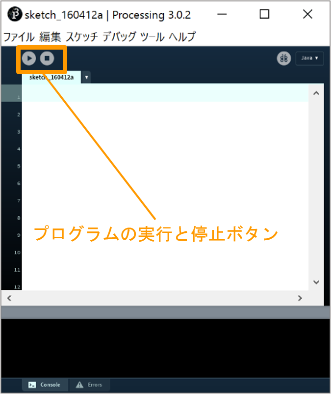
メッセージエリア

コンソール

Processingのデータ
ファイル形式（拡張子）: .pde
- スケッチとも呼ばれる．
- ファイルを保存すると，同名のフォルダが自動で作成され，その中にスケッチが保存される．

- スケッチが格納された同名のフォルダをスケッチブックとも呼ぶ．
- スケッチ(.pde)がフォルダ(スケッチブック)に格納されているファイル構造を壊さないよう注意． （スケッチブックだけを移動させる等しないこと）
フォント（エディタ・コンソール）の変更（任意）
変更方法：ファイル>設定>エディタとコンソールのフォント
デフォルトのフォント Source Code Pro は以下のことができない．
- プログラム及びコメントへの日本語（全角）入力
- コンソールへの日本語（全角）出力
- これらを有効にするには，日本語対応のフォントに変更してください． （MS ゴシック など）

プログラミングの基本
プログラムの作成
エディタウィンドウにプログラムを記述することでプログラミングを行う．
プログラムは複数の「文」Statement から成る．
- セミコロン(;)によって１つの文として区切る． 下の図のように，それぞれの文の末尾にセミコロンを記述する必要がある．

１つの文には，基本的には１つのProcessingの命令を記述する．
- １つの文に複数の命令を記述することもある（後日解説）
プログラム実行時，基本的には文が上から下へ，順番に逐次実行されていく．
- プログラムの流れの制御は後日解説
Processingの命令
Processingには様々な命令が用意されている．
例：線を描く，円を描く，色を変える
公式リファレンス
命令の名前は一つの単語となっており，スペースを含まない．
- 例：
circle(),ellipse(),line(),point()
- 例：
2単語が複合した命令は，2単語目の頭文字に大文字が用いられる
- 例：
rectMode(),colorMode(),noStroke()
- 例：
命令の後ろには命令に情報を渡すためのカッコ
()が付く．付いていないものは命令ではなく，変数と呼ばれるものである．（後に解説）
カッコ
()の中に命令に渡す情報を記述する．- 色，位置，大きさ，等
- 渡せる情報の種類や数は命令によって異なる
命令には複数の情報を渡すことができ，カンマ(,)で区切る
- 例:
size( 400, 400 );fill( 100, 200, 100 );
- 例:
これらの命令は，プログラムにおける関数の一種である．（後に解説）
Processingにあらかじめ用意された命令を入力すると，エディタ上では色が変わる． この機能によりタイプミスの確認が容易になる．
下の図中の
size(),rect()の単語部分の色が変わっていることに注目
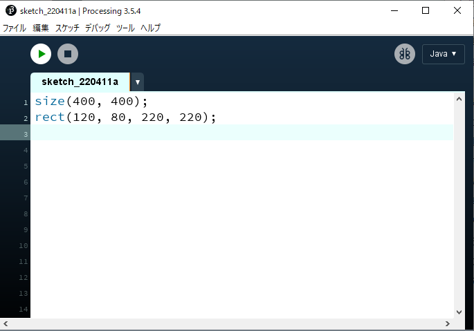
プログラムを書く際の最低限のルール
- 半角英数と数字を用いる（コメントは除く）
- 文末にはセミコロン（;）を入れる（忘れがち！）
- 大文字と小文字の区別があるので注意
コンソールへの出力
print()
コンソールエリアへ数値や文字列を出力する命令．
プログラム処理の内容を視覚化し，問題が起こった場合原因を特定しやすくする．
- 問題を特定し，修正を行うことをデバッグという
- 詳しくはデバッグのページを参照のこと
変数の中の値をトレース（監視）することができる．
書式
文字列はダブルクォーテーション「"」で囲むこと
xxxxxxxxxxprint( "文字列" );xxxxxxxxxxprint( 値or変数 );xxxxxxxxxxprint( "文字列" + 値or変数 ); // 文字列と値や変数を+を用いてつなげることも可能改行を含めたい場合
xxxxxxxxxxprintln( 上記と同様のフォーマット );例
文字列をコンソールに表示する
xxxxxxxxxxprint( "Hello Processing" );
数値をコンソールに表示する
xxxxxxxxxxprintln( 123 );print( 4567 );
数値と文字列をつなげて表示する
xxxxxxxxxxprint( "Answer is " + 12345 );
演習1
以下の出力を行うプログラムを書いてみましょう． ただし，数（1,2,3）は文字列ではなく数値としてプログラムに記述すること．（""で囲まない）

コメント
コメントとは
- プログラムに影響を与えない影響を与えない文字列のこと
- 技術的には，コンパイル時に無視される部分
書式
xxxxxxxxxx// ←以降の１行がコメントとしてプログラムから無視される`xxxxxxxxxx/**挟まれている複数の行が，プログラムから無視される*/用途
- プログラムを（人が）読みやすくするメモとして用いる．
- プログラムの一部を一時的に実行しないように退避させるために用いる．
例
複数命令の内容のメモとして用いる
x// ウィンドウを分割するline(0, 50, 100, 50); // yokoline(50, 0, 50, 100); // tate// 円を描画するcircle(25, 25, 50);

プログラムの一部を無効にする
xxxxxxxxxx/**// ウィンドウを分割するline(0, 50, 100, 50); // yokoline(50, 0, 50, 100); // tate*/// 円を描画するcircle(25, 25, 50);

補足
課題提出においてコメントは重要です
プログラムの実行に影響を与えないと軽視しがちですが
コメントが含まれた状態のスケッチを提出してもらい，それも加味して評価を行います．
- コメントを十分に含んだ分かりやすいスケッチが高く評価されます．
- コメントがまったく含まれていない場合，作品がどれほど良質であっても評価が下方修正されます．
コーディングに便利なキーボードの使い方
エディタウィンドウでプログラムを記述するにあたり，以下のキーの使い分けを行えると便利です． コーディングの効率が上がります．
文字消去
１文字先を消去: Delete
１文字前を消去: BackSpace
カーソル移動
行の先頭: Home
行の末尾: End
前のワードの先頭: Ctrl+←
次の単語の末尾: Ctrl+→
ページ送り: PgUp
ページ戻り: PgDn
選択
カーソル位置から前後に選択範囲を延ばす: Shift+←or→
カーソル位置から行単位で選択範囲を延ばす: Shift+↑or↓
カーソル位置から前後の１単語を選択: Shift+Ctrl+←or→
演習2
Processing公式のExamplesをどれでもいいので実行してみましょう．
- ソースコードをエディタウィンドウへコピー＆ペーストして実行してみましょう．
- 迷ったらColorカテゴリーのものが無難
- 可能ならプログラムの一部の数値を書き換えて実行し，変化を確かめてみましょう．
描画の基本
座標系について
- 画面はピクセルというモザイク状の点の集まりによって表現される．
- Processingでは左上を原点（0, 0）とし，右下に向かって座標値が大きくなる．

https://processing.org/tutorials/drawing/
画面のサイズを決める
書式
xxxxxxxxxxsize( 横のピクセル数, 縦のピクセル数 );https://processing.org/reference/size_.html
例
xxxxxxxxxxsize(640,480); // スクリーンサイズを横640ピクセル×縦480ピクセルに設定画面のサイズを取得する
- 必ずsize()記述以後に記述する必要がある．
- 画面サイズの数値を繰り返し記述しなくてよい利点がある
書式
横のピクセル数
width
縦のピクセル数
height
例
xxxxxxxxxxsize(400,400);line(0, 0, width, height); // スクリーン右下へ線を描画
https://processing.org/reference/width.html https://processing.org/reference/height.html
色を扱う
カラーモードの設定
色を扱うにはまず、プログラムで使用するカラーモードを指定する必要がある．
カラーモードは図形や線，背景描画命令において，与えられた数値の解釈を変更するもの．
- つまり，「色の指定のやり方」を設定する．
- 具体的な色の指定は別の命令で行う
具体的には以下の指定を行う必要がある．
- カラーモデル（RGB, HSB 等）
- 各値の最大値，アルファ（透明度）の最大値
書式
RGBモードを指定
xxxxxxxxxxcolorMode(RGB, 最大値);RGBモードを指定（各チャンネルの最大値を指定）
xxxxxxxxxxcolorMode(RGB, Rの最大値, Gの最大値, Bの最大値);RGBモードを指定（各チャンネルとアルファの最大値を指定）
xxxxxxxxxxcolorMode(RGB, Rの最大値, Gの最大値, Bの最大値, アルファの最大値 );HSBモードを指定
xxxxxxxxxxcolorMode(HSB, 最大値);HSBモードを指定（各チャンネルの最大値を指定）
xxxxxxxxxxcolorMode(HSB, 色相の最大値, 彩度の最大値, 輝度の最大値);HSBモードを指定（各チャンネルとアルファの最大値を指定）
xxxxxxxxxxcolorMode(HSB, 色相の最大値, 彩度の最大値, 輝度の最大値, アルファの最大値);例
使用するカラーモデルをRGBに設定，最大値を100とする．
xxxxxxxxxxcolorMode( RGB, 100 );カラーモデルをHSBに設定し，色相の最大値を360とし，彩度と輝度の最大値1,0とする．
xxxxxxxxxxcolorMode( HSB, 360, 1.0, 1.0 );デフォルトのカラーモード
カラーモードを明示的に指定していない場合は，以下の初期設定が適用されている．
使用するカラーモデルはRGB，最大値は255
xxxxxxxxxxcolorMode( RGB, 255 );色の書式
各アルファベットの位置に具体的な数値が入る RGB
xxxxxxxxxxr, g, b // 例：0.1, 0, 1.0RGB, alpha
xxxxxxxxxxr, g, b, a
gray
xxxxxxxxxxg
gray, alpha
xxxxxxxxxxg, a
HSB
xxxxxxxxxxh, s, b
HSB, alpha
xxxxxxxxxxh, s, b, a
色相と彩度
色相と彩度の関係は下の図を参考にしてみてもよい．
グラデーション図のプログラム
xxxxxxxxxx// グラデーション図のプログラムnoStroke();colorMode(HSB, 100); // カラーモード:HSB, 各値の最大値100for (int i = 0; i < 100; i++){ for (int j = 0; j < 100; j++) { stroke(i, j, 100); point(i, j); }}https://processing.org/reference/colorMode_.html
背景に色を付ける
xxxxxxxxxxbackground( 色の書式 ); // colorMode設定に依存例：
xxxxxxxxxxbackground(255, 204, 0);
https://processing.org/reference/background_.html
アンチエイリアスをかける
xxxxxxxxxxsmooth();アンチエイリアスを解除する
xxxxxxxxxxnoSmooth();https://processing.org/reference/smooth_.html
図形描画
線の色を変える
xxxxxxxxxxstroke( 色の書式 ); // colorMode設定に依存例
xxxxxxxxxxstroke(204, 102, 0);rect(30, 20, 55, 55);
https://processing.org/reference/stroke_.html
線を消去する
xxxxxxxxxxnoStroke();例
xxxxxxxxxxnoStroke();rect(30, 20, 55, 55);https://processing.org/reference/noStroke_.html
線の太さを設定する
xxxxxxxxxxstrokeWeight( 太さ );例
xxxxxxxxxxstrokeWeight(1); // Defaultline(20, 20, 80, 20);strokeWeight(4); // Thickerline(20, 40, 80, 40);strokeWeight(10); // Beastlyline(20, 70, 80, 70);
https://processing.org/reference/strokeWeight_.html
線の端の形状を設定する
ROUND
xxxxxxxxxxstrokeCap(ROUND); // 丸く（デフォルト）例
xxxxxxxxxxstrokeWeight(12);strokeCap(ROUND);line(20, 50, 50, 50);line(50, 50, 60, 80);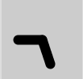
SQUARE
xxxxxxxxxxstrokeCap(SQUARE); // 四角例
xxxxxxxxxxstrokeWeight(12);strokeCap(SQUARE);line(20, 50, 50, 50);line(50, 50, 60, 80);
PROJECT
xxxxxxxxxxstrokeCap(PROJECT); // 突き出し例
xxxxxxxxxxstrokeWeight(12);strokeCap(PROJECT);line(20, 50, 50, 50);line(50, 50, 60, 80);
https://processing.org/reference/strokeCap_.html
図形の塗りつぶし色を設定する
xxxxxxxxxxfill( 色の書式 ); // colorMode設定に依存例1
xxxxxxxxxxcolorMode(RGB, 256);fill(204, 102, 0);rect(30, 20, 55, 55);
例2
xxxxxxxxxxcolorMode( HSB, 360, 1.0, 1.0 );fill(80, 0.8, 0.9);rect(15, 10, 55, 55);
例3
xxxxxxxxxxcolorMode(RGB, 256);fill(204, 102, 0);rect(15, 10, 55, 55);fill(0, 102, 200, 80); // アルファ80rect(30, 20, 55, 55);
https://processing.org/reference/fill_.html
塗りつぶしを消去する
xxxxxxxxxxnoFill();
// 例rect(15, 10, 55, 55);noFill();rect(30, 20, 55, 55);
https://processing.org/reference/noFill_.html
点を描画する
xxxxxxxxxxpoint( x座標, y座標 );例
xxxxxxxxxxstroke( 255, 0, 0 ); // 色を指定する場合はstroke()を使うpoint( 50,50 );point( 51,50 );point( 50,51 );point( 51,51 );https://processing.org/reference/point_.html
線を描画する
xxxxxxxxxxline( 始点x座標, 始点y座標, 終点x座標, 終点y座標 );例1
xxxxxxxxxxline(30, 20, 85, 75);
例2 連続した線
xxxxxxxxxxstroke(255,0,0); // Rline( 20, 20, 40, 40 );stroke(0,255,0); // Gline( 40, 40, 50, 70 ); // 一つ目の線の終わりの点からスタートstroke(0,0,255); // Bline( 50, 70, 80, 80 ); // 二つ目の線の終わりの点からスタート
https://processing.org/reference/line_.html
三角形を描画する
xxxxxxxxxxtriangle( 頂点1のx値, 頂点1のy値, 頂点2のx値, 頂点2のy値, 頂点3のx値, 頂点3のy値 );例
xxxxxxxxxxtriangle(30, 75, 58, 20, 86, 75);
https://processing.org/reference/triangle_.html
矩形（長方形）を描画する
主に三種類のやり方があるが，自分の実現したいことに適した方法を選ぶとよい．
左上の座標と大きさを指定（初期設定）
xxxxxxxxxxrectMode(CORNER); // 他にrectMode()を使用している箇所が無ければ，不要rect( 左上x座標, 左上y座標, 矩形の幅, 矩形の高さ );
中心の座標を指定
xxxxxxxxxxrectMode(CENTER);rect( 中心x座標, 中心y座標, 矩形の幅, 矩形の高さ );
左上と右下の座標を指定
xxxxxxxxxxrectMode(CORNERS);rect( 左上x座標, 左上y座標, 右下x座標, 右下y座標 );
例
xxxxxxxxxxrectMode(CORNER);rect(30, 20, 55, 55);
https://processing.org/reference/rect_.html 関連する命令：正方形の描画 https://processing.org/reference/square_.html
四辺形を描画する
自由な四辺形を描くことができる．
xxxxxxxxxxquad( 頂点1のx値, 頂点1のy値, 頂点2のx値, 頂点2のy値, 頂点3のx値, 頂点3のy値, 頂点4のx値, 頂点4のy値 );例
xxxxxxxxxxquad(38, 31, 86, 20, 69, 63, 30, 76);
https://processing.org/reference/quad_.html
円・楕円を描画する
中心座標と直径を指定
xxxxxxxxxxellipseMode(CENTER); // 他にellipseMode()を使用している箇所が無ければ，不要ellipse( 中心のx座標, 中心のy座標, 横の直径, 縦の直径 );中心座標と半径を指定
xxxxxxxxxxellipseMode(RADIUS);ellipse( 中心のx座標, 中心のy座標, 横の半径, 縦の半径 );例
xxxxxxxxxxellipseMode(CENTER);ellipse(56, 46, 55, 55);
https://processing.org/reference/ellipse_.html 関連する命令：正円の描画 https://processing.org/reference/circle_.html
円弧を描画する
度（度数法）をラジアン（弧度法）に変換する方法 指定する角度は，ラジアン単位である必要がある
xxxxxxxxxx// θ = θ° × π / 180 [rad]radians( 度 ); // この命令で任意の角度をラジアンに変換できる．おおまかな度とラジアンの対応QUARTER_PI : 45°HALF_PI : 90°PI : 180°TWO_PI : 360°オープンな弧を描画する
xxxxxxxxxxarc( 中心のx座標, 中心のy座標, 横の直径, 縦の直径, 弧の始まりの角度, 弧の終わりの角度, OPEN );例
xxxxxxxxxxarc(50, 50, 80, 80, 0, PI+QUARTER_PI, OPEN);
閉じた弧を描画する
xxxxxxxxxxarc( 中心のx座標, 中心のy座標, 横の直径, 縦の直径, 弧の始まりの角度, 弧の終わりの角度, CHORD );例
xxxxxxxxxxarc(50, 50, 80, 80, 0, PI+QUARTER_PI, CHORD);
パイ状に描画する
xxxxxxxxxxarc( 中心のx座標, 中心のy座標, 横の直径, 縦の直径, 弧の始まりの角度, 弧の終わりの角度, PIE );例
xxxxxxxxxxarc(50, 50, 80, 80, 0, PI+QUARTER_PI, PIE);
https://processing.org/reference/radians_.html https://processing.org/reference/PI.html https://processing.org/reference/arc_.html
例: 月の満ち欠けのような描画
xxxxxxxxxxsize( 400, 200 );arc( 50, 100, 80, 80, radians(120), radians(420), CHORD );arc( 50+100, 100, 80, 80, radians(135), radians(405), CHORD );arc( 50+200, 100, 80, 80, radians(175), radians(365), CHORD );arc( 50+300, 100, 80, 80, radians(190), radians(350), CHORD );
曲線を描画する
4点を結ぶ曲線の中間2点間が描画される（スプライン曲線）
xxxxxxxxxxcurve( 点1のx値, 点1のy値, // 制御点1 点2のx値, 点2のy値, // 描画点1 点3のx値, 点3のy値, // 描画点2 点4のx値, 点4のy値 ); // 制御点2例
xxxxxxxxxxnoFill();stroke(255, 102, 0);curve(5, 26, 5, 26, 73, 24, 73, 61);stroke(0);curve(5, 26, 73, 24, 73, 61, 15, 65); // 中間2点間（黒）stroke(255, 102, 0);curve(73, 24, 73, 61, 15, 65, 15, 65);
https://processing.org/reference/curve_.html
ベジェ曲線を描画する
xxxxxxxxxxbezier( 点1のx値, 点1のy値, 制御点1のx座標, 制御点1のy座標, 点2のx値, 点2のy値, 制御点2のx座標, 制御点2のy座標 );例
xxxxxxxxxxnoFill();stroke(255, 102, 0);line(85, 20, 10, 10); // 点1から制御点1への線（橙）line(90, 90, 15, 80); // 点2から制御点2への線（橙）stroke(0, 0, 0);bezier(85, 20, 10, 10, 90, 90, 15, 80); // 得られた曲線(黒)
https://processing.org/reference/bezier_.html
多角形を描画する
複数の命令で構成される． はじめにbeginShape();と書き，次いで必要な頂点数だけ vertex( x座標, y座標 ); を記述する． 最後に endShape(); で閉じる． ※なお、endShape(CLOSE)と指定すると、閉じた形状となる
xxxxxxxxxxbeginShape(); // 形状の開始宣言vertex( x座標, y座標 ); // 頂点座標（頂点の数だけ書く．複数書いてよい）endShape(); //形状の終了宣言例1
xxxxxxxxxxbeginShape();vertex(20, 20);vertex(40, 20);vertex(40, 40);vertex(60, 40);vertex(60, 60);vertex(20, 60);endShape(CLOSE);例2
xxxxxxxxxx// 矢印の形beginShape();vertex( 0, 20 ); // Avertex( 60, 20 ); // Bvertex( 60, 0 ); // Cvertex( 100, 30 ); // Dvertex( 60, 60 ); // Evertex( 60, 40 ); // Fvertex( 0, 40 ); // GendShape(CLOSE);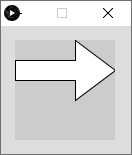
座標系と各頂点（A~G）の対応

https://processing.org/reference/beginShape_.html https://processing.org/reference/vertex_.html https://processing.org/reference/endShape_.html
座標変換（平行移動，回転，拡大縮小）
座標系
二次元座標系
- 描画を行うための基準．
- X軸とY軸が互いに直交し，交わるところに原点がある．

原点が座標(0,0)として描画される
この座標系（X軸,Y軸,原点）を移動，回転，拡大縮小することを座標変換という．
- 図形が変換されるのではない

座標系のスクリーンに対する初期位置
- Processingでは座標原点がスクリーン左上(0,0)に設定されている．

初期位置での図形の描画
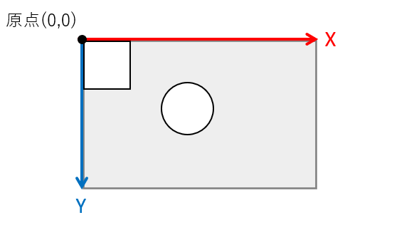
平行移動
xxxxxxxxxxtranslate( x移動量, y移動量 );

例
xxxxxxxxxx// 平行移動させる前rect(20, 20, 40, 40 );
xxxxxxxxxxtranslate(60, 80); // 平行移動rect(20, 20, 40, 40);
利点
入れ子状の構造の繰り返しがシンプルにできる
例1 家のような図の描画（平行移動前）
xxxxxxxxxx// 平行移動前size(400, 100);background(255);triangle(15, 0, 0, 15, 30, 15);rect(0, 15, 30, 30);rect(12, 30, 10, 15);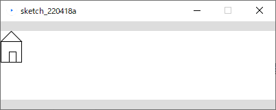
例2 家のような図の複数描画（平行移動後）
xxxxxxxxxxsize(400, 100);background(255);
// 一つ目triangle(15, 0, 0, 15, 30, 15);rect(0, 15, 30, 30);rect(12, 30, 10, 15); translate(40, 0); // x軸方向に40移動
// 二つ目triangle(15, 0, 0, 15, 30, 15);rect(0, 15, 30, 30);rect(12, 30, 10, 15);translate(40, 0); // x軸方向にさらに40移動
// 三つ目triangle(15, 0, 0, 15, 30, 15);rect(0, 15, 30, 30);rect(12, 30, 10, 15);
https://processing.org/reference/translate_.html
回転
座標を原点を中心に時計回りに回転する．
xxxxxxxxxxrotate( 角度 ); // 単位：ラジアンラジアンに慣れていない人はこう書くとよい．
xxxxxxxxxxrotate( radians( 角度 ) ); // 度数法をラジアンに変換※図形描画の円弧のセクションも参照してください


例1
矩形を45°回転させる（スクリーン左上を中心に回転してしまっている例）
xxxxxxxxxxsize(200, 200);background(255);fill(192);noStroke();rect(40, 40, 40, 40);rotate(radians(45)); // 45°時計回りに回転fill(0);rect(40, 40, 40, 40);
例2
矩形を45°回転させる(正しい例)
- 原点座標を矩形の左上に移動させる
- 座標を回転させる
- 原点に矩形を描画する
xxxxxxxxxxsize(200, 200);background(255);fill(192);noStroke();rect(40, 40, 40, 40);translate(40, 40); // 原点を矩形の左上に移動rotate(radians(45));fill(0);rect(0, 0, 40, 40); // 原点に二つ目の矩形を描画
https://processing.org/reference/rotate_.html
拡大縮小
xxxxxxxxxxscale( 拡大率 );scale( x拡大率, y拡大率 );例
矩形の大きさだけでなく，x,y座標値も拡大されていることに注目
xxxxxxxxxxsize(200,200);background(255);stroke(128);rect(20, 20, 40, 40);stroke(0);scale(2.0);rect(20, 20, 40, 40);
例: 時計の針のような描画
xxxxxxxxxxsize( 300, 300 );translate( width/2, height/2 ); // 原点をスクリーン中心に移動. strokeWeight(1);line( 0, 0, 100, 0 ); rotate( radians(30) ); // 30度回転.strokeWeight(4);line( 0, 0, 100, 0 ); rotate( radians(50) ); // 50度回転.strokeWeight(6);line( 0, 0, 100, 0 ); rotate( radians(70) ); // 80度回転.strokeWeight(8);line( 0, 0, 100, 0 ); rotate( radians(80) ); // 90度回転.strokeWeight(10);line( 0, 0, 100, 0 );
https://processing.org/reference/scale_.html
座標系の保存と復帰
詳細は行列の計算が関連することもあり難解であり，本授業では掘り下げない． 任意の場所に記述し，使うことができれば問題ない．
座標系の保存
xxxxxxxxxxpushMatrix();座標系の復帰
xxxxxxxxxxpopMatrix();使い方
プログラムの処理の順を追って説明する．
pushMatrix()で初期の座標系を保存しておく．
座標変換と各種描画の命令
- translate(), rotate(), scale()
- 図形描画
popMatrix()で初期の座標系に戻す．
以上のような使い方が多い．
xxxxxxxxxxpushMatrix();// 座標系の保存scale(/***/);translate(/***/);rotate(/***/);/** 図形描画 line, rect, ellipse など */popMatrix();// 保存していた座標系に戻す例
xxxxxxxxxxsize(500, 500);pushMatrix(); // 座標系の記憶 translate(250, 250); // 座標系の移動rect(0, 0, 50, 50); // 平行移動後の位置に矩形が描画される popMatrix(); // 座標系を元に戻すrect(0, 0, 50, 50); // 初期の座標系に戻ったので，スクリーン左上に矩形が描画される
pushMatrix()とpopMatrix()の仕組み
pushMatrix()とpopMatrix()は，座標系データをQueue形式で出し入れしている． 複数の座標系データを保存できる．
Queue（キュー）とは
- 先に入れたデータを先に取り出す．FIFO( First In First Out )
- 追加(push)したデータをあたらしい順に取り出す(pop)仕組み．
したがって，pushMatrix()とpopMatrix()を入れ子構造で使用すると，新しく保存した座標系から古いものへ， という順に取り出される．

https://processing.org/reference/pushMatrix_.html https://processing.org/reference/popMatrix_.html
平行移動と回転の組み合わせ
平行移動と回転を組み合わせると難解になる． スケッチブックや方眼紙に座標系の変換をメモするなど，工夫してみましょう．
平行移動+回転

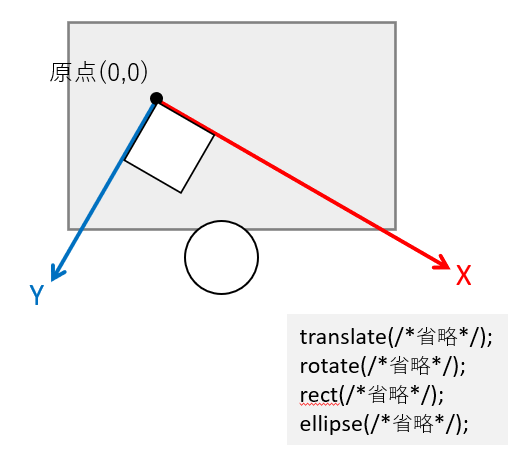
回転+平行移動
回転後の平行移動は特に注意
- 回転後のX,Y軸を元に移動する．
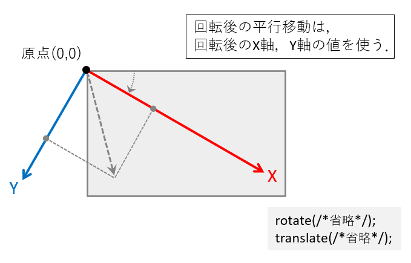

演算と変数
文と式
文 Statement
- 手続きを表す．
- プログラムは基本的に文から構成される．
- 逐次実行される(手続き型言語).
- セミコロン「；」 で区切られている部分が一つの文となる．
xxxxxxxxxxsize(200,200); // 文rectMode(CENTER); // 文rect(100,10020,100); // 文主に二種存在する．
- 宣言文 Declarative Statement
- 命令文 Imperative Statement
xxxxxxxxxxint a; // 宣言文a = a + 1; // 命令文式 Expression
コンピュータにとっての「計算」を表す表現
式は基本的には文の中に含まれている（存在する）．
主に以下の要素から構成される．
- 値
- 変数
- 演算子 Operator
- 関数
| line( 0, 0, 0, a + 1 ); // 式 line( 0, 0, 0, a + 1 ); // 値 line( 0, 0, 0, a + 1 ); // 変数 line( 0, 0, 0, a + 1 ); // 演算子 line( 0, 0, 0, a + 1 ); // 関数 line( 0, 0, 0, a + 1 ); // 文 |
|---|
算術式
四則演算（+-×÷）を表す式
| 計算 | 種類 | 式 | 演算子 |
|---|---|---|---|
| 足し算 | 加算 | a + b | プラス |
| 引き算 | 減算 | a - b | マイナス |
| かけ算 | 乗算 | a * b | アスタリスク |
| 割り算 | 除算 | a / b | スラッシュ |
例
xxxxxxxxxxprint("answer=");println(1+2);括弧を使った計算
例
xxxxxxxxxx(6-4)/(2+3)(2*(3+7))/5 // 乗算*は省略できないことに注意剰余算
「割り算の余り」を求める記述
xxxxxxxxxxa % b // aをbで割ったときの余り例
xxxxxxxxxx// 偶数と奇数を判別する．int iA = 234;if( iA%2 == 0 ) // もし変数iAが偶数だったら．{ // 命令}演算優先順位
算数の四則計算に準じる 左から逐次実行されるわけではない
| 優先度 | 種類 | 演算子 |
|---|---|---|
| 高い | 括弧(カッコ) | ( ) |
| 乗算 | * | |
| 除算 | / | |
| 加算 | + | |
| 低 | 減算 | - |
変数
- 変数とは，数値などのデータを入れて保持しておくための入れ物であり，現実世界の保管箱のようなもの．
- 関数や式に組み込むことで，中の値を参照したり書き換えたりすることができる．
- 使う前に，準備（宣言）する必要がある．
変数の要素
- 型
- 変数名
- 値
型
データ型とも言う． 変数は決められた型を持ち，入れられるデータの種類が決まっている．
int
整数型（ Integer ）
値として小数は持てない整数の型
- 1, 2, 10, 23, 1028, 5270 など
マイナスの数値も持てる
- -1, -97, -254, -1097, -23819 など
最大で2,147,483,647，最小で-2,147,483,648までの値を持てる
float
実数型（ floating-point numbers ）
値として小数を持てる型
- 1.02, 32.890, 403.98, 3109.37 など
マイナスの数値も持てる
最大で3.40282347E+38，最小で-3.40282347E+38 の値を持てる
- E+38 は「10の38乗」の意味
double
- ほとんどfloat型と同じだが，持てる値の範囲が広い
- 最大で1.797693e+308，最小で-1.797693e+308の値を持てる
- その代わり，メモリの使用量が倍となる(64bit)
char
文字型 Characters
1つの文字を持てる
- q, w, e, r, t, y, 0, 1, 2 など
- 大文字(日本語)も一応保持可能
宣言
変数を使うには，宣言文によって変数の宣言を行う必要がある．
- (データ)型の指示
- 変数名の決定
- 初期値の代入（必須ではない）
xxxxxxxxxx型 変数名; // 宣言のみ型 変数名 = 値 or 数式; // 宣言+初期化型変数名
- 変数は，変数名によって，その中に入っている値を参照することができる．
- 各変数は変数名により一意に定まる（ユニークである）必要がある．
変数名の制限
変数名の１文字目は英字
xxxxxxxxxx誤：55musabi, 2baisoku正：musabi55, baisoku2予約語は変数名として使用できない．
xxxxxxxxxxbackground, beginShape, bezier, bezierVertex, case, colorMode, curve, curveVertex, default, , dist, draw, ellipse, ellipseMode, else, endShape, fill, frameRate, height, if, image, imageMode, keyPressed, keyReleased, line, loadFont, loadImage, loadPixels, min, mouseButton, mouseDraged, mouseMoved, mousePressed など例
xxxxxxxxxxint a; // 変数の型，スペースをあけて変数名を書くint a, b; // カンマで区切り，複数の変数を宣言できるint a=5; // 変数にいきなり値を代入してもよい（初期化）int a=1+1; // 数式を代入してもよい代入文
特に宣言時に初期化されていない変数は代入文によって値を代入されなければならない． 代入文によって，変数に格納されている値を上書きすることができる．
xxxxxxxxxx変数名 = 新しい値 or 数式;例:数値型
xxxxxxxxxxint a; // 変数aの宣言int b = 3; // 変数bの宣言と初期化 a = 5; // 変数aへの値の代入（初期化）a = b + 2; // 変数aへの値の代入（上書き）例:文字型
xxxxxxxxxxchar c; // 文字型の変数cの宣言c = 'A'; // '(シングルクオーテーション)で代入する文字を囲む良い変数名をつける
プログラムを久しぶりに見たり，他人に見せたりする場合に円滑に理解できるための工夫． 企業等でチームでプログラムを行う際には，コーディング規約というものでルールが決められることが多い．
複数単語の区切り
- キャメルケース ２つ目以降の単語の頭文字を大文字にする．
xxxxxxxxxxhogeData- スネークケース アンダースコアで区切る．
xxxxxxxxxxhoge_data頭文字にデータ型の頭文字を小文字で付ける
xxxxxxxxxxint iRadius, iLength;float fWidth, fHeight;プロパティ（性質）
名前の後ろの方につけるのが好ましい．
xxxxxxxxxx// よく使われる記述X // X座標Y // Y座標Position, Pos // 位置，座標Width // 幅Height // 高さRadius // 半径Diameter // 直径Degree, Deg // 角度°Radian, Rad // 角度ラジアンMinute // 分Second, Sec // 秒Ratio // 比，率R,G,B // RGBカラー計算値による修飾子
名前の最後につけるのがよい．
xxxxxxxxxx// よく使われる記述Total // 合計Sum // 和Count // 数え上げた数Average // 平均Max // 最大Min // 最小Index, Idx // (特定の)番号// Number または Num は混乱しがちなので避けることを推奨例
変数によって各部のサイズ・色を変えられる家の描画
xxxxxxxxxxint iHouseWidth = 60; // 家の幅int iRoofHeight = 15; // 屋根の高さint iWallHeight = 30; // 壁の高さint iDoorWidth = 10; // 扉の幅int iDoorHeight = 15; // 扉の高さint iDoorX = 40; // 扉のX座標float fRoofR = 1.0; // 屋根のRGBfloat fRoofG = 0.1;float fRoofB = 0.3;size(100, 100);background(255);colorMode(RGB, 1.0); // 屋根fill( fRoofR, fRoofG, fRoofB ); // 屋根色triangle( iHouseWidth/2, 0, // 上 0, iRoofHeight, // 左下 iHouseWidth, iRoofHeight ); // 右下// 壁fill( 1.0 );rect(0, iRoofHeight, iHouseWidth, iWallHeight); // 扉fill( 1.0 );rect(iDoorX, iRoofHeight+iWallHeight-iDoorHeight, iDoorWidth, iDoorHeight);
ローカル変数とグローバル変数
ローカル変数
- 特定の範囲でのみ有効
draw()の度にメモリ領域が初期化されるため，フレームをまたいで値を保存することができない．- アニメーションでは局所的な使用に限られる．
ブロック
{ }で囲まれた部分をブロックという．
繰り返しfor文，条件分岐if文，関数で使用されている．
xxxxxxxxxxfor(/** 省略 */){ // ブロック}xxxxxxxxxxif(/** 省略 */){ // ブロック}xxxxxxxxxxvoid setup(){ // ブロック}void draw(){ // ブロック}使い方
- ブロック内で宣言された変数がローカル変数となる．配列も同様．
- ローカル変数・配列は，宣言文のあるブロック内でのみ有効（スコープ）．
- 宣言文のあるブロック内にさらにネスティングされているブロック内でも有効．
xxxxxxxxxxfor(/** 省略 */){ int iX = 0; // iX,iY宣言 int iY = 0; point( iX, iY ); // OK for(/** 省略 */) { point( iX, iY ); // OK(ネスティング) }}point( iX, iY ); // エラー：変数iXは存在しませんxxxxxxxxxxif(/** 省略 */){ int iX = 0; // iX,iY宣言 int iY = 0; point( iX, iY ); // OK if(/** 省略 */) { int iZ = 0; // iZ宣言 point( iX, iY ); // OK(ネスティング) } iZ = iZ +1; // エラー：変数iZは存在しません}point( iX, iY ); // エラー：変数iXは存在しませんxxxxxxxxxxvoid setup(){ int iX = 0; // iX,iY宣言 int iY = 0; point( iX, iY ); // OK if(/** 省略 */) { point( iX, iY ); // OK(ネスティング) }}void draw(){ point( iX, iY ); // エラー：変数iXは存在しません}グローバル変数
- 全ての範囲で有効
draw()の度にメモリ領域が初期化されることなく残るため，draw()の度に少しずつ数値を変更する等が可能．- アニメーションにおいて，変化をもたらすために特に重要．
使い方
- ブロック外で宣言すればグローバル変数となる．
- 通常，プログラムの一番上に記述する．
xxxxxxxxxxint iX; // 宣言void setup(){ iX = 0; // OK}void draw(){ iX = iX + 5; // OK}
変数の値の操作
変数の値は代入文で上書きできる．
xxxxxxxxxxint a = 0;a = 100; // 代入文他にも変数の値を操作するやり方があるので説明する． プログラミングならではの書き方であるため，最初は違和感があるかもしれないが，後の制御文などで必須．
インクリメント演算子 ++
値を1ずつ増やす操作に用いる．
「変数aに1を足す」記述
xxxxxxxxxxa++;++a;この書き方は，基本的には以下と同じ結果が得られる.
xxxxxxxxxxa = a + 1;
デクリメント演算子 --
値を1ずつ減らす操作に用いる．
「変数aから1を引く」記述
xxxxxxxxxxa--;--a;この書き方は，基本的には以下と同じ結果が得られる.
xxxxxxxxxxa = a - 1;代入演算子
代入演算子は，右辺（のオペランド）に基づいて，値を左辺（のオペランド）に代入します． 通常の代入文を短縮したかのような書き方になります．
+=
「変数aに2を足す」記述
xxxxxxxxxxa += 2;xxxxxxxxxxa = a + 2; // 通常の代入文，こちらと同じ意味-=
「変数aから3を引く」記述
xxxxxxxxxxa -= 3;xxxxxxxxxxa = a - 3; // 通常の代入文，こちらと同じ意味*=
「変数aに4をかける」記述
xxxxxxxxxxa *= 4;xxxxxxxxxxa = a * 4; // 通常の代入文，こちらと同じ意味/=
「変数aを5で割る」記述
xxxxxxxxxxa /= 5;xxxxxxxxxxa = a / 5; // 通常の代入文，こちらと同じ意味
https://processing.org/reference/increment.html https://processing.org/reference/decrement.html https://processing.org/reference/addassign.html https://processing.org/reference/subtractassign.html
数学的な計算を行う関数
変数や数値を参照する(渡す)ことにより，複雑な計算を行う命令．
べき乗，平方根の計算を行う関数
| 関数名 | 算法 | コード記述 | 算術表記 |
|---|---|---|---|
| 指数関数 | べき乗算 | pow( n, e ) |  |
| 平方根を求める関数 | 開平算 | sqrt( n ) |  |
例1
xxxxxxxxxxprint( "2の4乗は" );println( pow( 2, 4 ) );// コンソール出力：2の4乗は16.0例2
xxxxxxxxxxprint( "4の平方根は" );println( sqrt( 4 ) );// コンソール出力：4の平方根は2.0https://processing.org/reference/pow_.html https://processing.org/reference/sqrt_.html
三角関数
サイン、コサイン、タンジェントなどの値を求める関数
| 算法 | コード記述 | 算術表記 |
|---|---|---|
| サイン（正弦） | sin( α：角度のラジアン値 ) |  |
| コサイン（余弦） | cos( α：角度のラジアン値 ) |  |
| タンジェント（正接） | tan( α：角度のラジアン値 ) |  |
三角比と三角関数

例1
xxxxxxxxxxsin( radians(45) ) // 45度をラジアンに変換してサイン値を求める例2
座標変換を使わず，三角関数で回転を表す．

xxxxxxxxxxsize( 400, 400 ); strokeWeight(1);line( width/2, height/2, width/2 + cos( radians(0) )*width/2, height/2 + sin( radians(0) )*height/2 ); strokeWeight(3);line( width/2, height/2, width/2 + cos( radians(60) )*width/2, height/2 + sin( radians(60) )*height/2 ); strokeWeight(6);line( width/2, height/2, width/2 + cos( radians(145) )*width/2, height/2 + sin( radians(145) )*height/2 ); strokeWeight(9);line( width/2, height/2, width/2 + cos( radians(210) )*width/2, height/2 + sin( radians(210) )*height/2 ); strokeWeight(12);line( width/2, height/2, width/2 + cos( radians(280) )*width/2, height/2 + sin( radians(280) )*height/2 );
例３：三角関数と指数関数を使った螺旋状の表現
xxxxxxxxxxsize(400,400); // 円の描画をiPointIdxをインクリメントしながら200回繰り返す.for(int iPointIdx = 0; iPointIdx < 200; iPointIdx++ ){ circle( width/2 + pow( 1.1,iPointIdx*0.2 )*cos( radians(10*iPointIdx) )*10, // X座標 height/2 + pow( 1.1,iPointIdx*0.2 )*sin( radians(10*iPointIdx) )*10, // Y座標 pow( 1.1,iPointIdx*0.2)*1.7 ); // 円の大きさ}
https://processing.org/reference/sin_.html https://processing.org/reference/cos_.html https://processing.org/reference/tan_.html
絶対値を求める
xxxxxxxxxxabs( 絶対値を求める数値 )例
xxxxxxxxxxprint( abs(-16) ); // コンソールに 16 が表示される．小数点以下を切り上げる
xxxxxxxxxxceil( 数値 )例
xxxxxxxxxxprint( ceil(8.22) ); // コンソールに 9 が表示される．小数点以下を切り捨てる
xxxxxxxxxxfloor( 数値 )例
xxxxxxxxxxprint( floor(2.88) ); // コンソールに 2 が表示される．小数点以下を四捨五入する
xxxxxxxxxxround( 数値 )これらの小数点以下の処理は，float型の値をint型の値に変更するのに便利．
例
xxxxxxxxxxprint( round(9.2) ); // コンソールに 9 が表示される．print( round(9.5) ); // コンソールに 10 が表示される．print( round(9.9) ); // コンソールに 10 が表示される．https://processing.org/reference/abs_.html https://processing.org/reference/ceil_.html https://processing.org/reference/floor_.html https://processing.org/reference/round_.html
乱数を生成する関数
- 乱数とは，ランダムな値のことをいう．
- Processingでは
random()という命令で乱数を用いることができる． - 乱数は，あらゆる命令の引数として使用できる．
- この乱数をうまく組み合わせることで，人間の手作業では難しい事象を表現できる．
xxxxxxxxxxrandom( 最大値 ) // 0~最大値で設定した値の間で，ランダムな値を生成するrandom( 最小値， 最大値 )例1
xxxxxxxxxxpoint(random(200), 50); // X座標を0〜200の間の乱数で決定し，点をうつ例2
xxxxxxxxxxsize(200,200); for (int iX = 0; iX < width; iX++) // 以下の処理をiX:0~widthまで繰り返す．{ stroke(5); line( iX, 0, iX, 0.8*random(height)); // 黒線を描画する}
例3
xxxxxxxxxxsize(400,200);colorMode(RGB,1.0); for (int iX = 0; iX < width; iX+=15) // 以下の処理をiX:0~widthまで15ピクセルおきに繰り返す．{ fill( 1.0, 0.3, 0.5, random(1.0) ); // 塗りつぶしのαをランダム. rect( iX, 100, 15, 15);}
変数への代入する際の注意点
random()からは実数（小数有り）が得られるため，変数への代入の際は以下のどちらかの処理を行う．
- 実数型
floatなどの変数に代入する． floor()などをつかって小数部を処理し，整数型intなどの変数に代入する．
例
xxxxxxxxxxfloat fRandom = random( 100 ); // float型の変数fRandomにランダムな値を代入.//int iRandom = random( 100 ); // これだとエラーが出るint iRandom = floor( random(100) ); // int型の変数iRandomに，ランダムな値を小数点以下を切り捨てて代入．
https://processing.org/reference/random_.html
型の変換を行う関数
- 整数型(int)と実数型(float)の値を同一の式の中に混合するケースによく使う．
- 慣れないうちはどうしてもエラーが発生したり，意図しない挙動を起こしてしまうので，適切に対処する必要がある．
int()
整数型に変換する． 小数点以下は切り捨てられる．
書式
xxxxxxxxxxint( 変換するfloat型変数や値 )使用例
変換しなかった場合，(cannot convert from float to int)というエラーがでる．
xxxxxxxxxxfloat fA = 1.234;int iA = int(5/fA); // iAに代入する直前に整数型に変換float()
実数型に変換する．
書式
xxxxxxxxxxfloat( 変換するint型変数や値 )使用例
変換しなかった場合，計算結果の小数点以下が切り捨てられてしまう．
xxxxxxxxxxfloat fA = 10 / float(width); // widthはint型のシステム変数なので変換が必要変数でなく，数値の場合以下のような書き方もできる
xxxxxxxxxxfloat fA = 10 / float(1000);xxxxxxxxxxfloat fA = 10 / 1000.0; // このような書き方もできる
定数
final
変数や配列の定義+初期化の際，先頭に記述することで，定数を定義できる． 定数は，以降値を変化させることができない．
例
用途としては，主に調整用のパラメータなどに用いる．
xxxxxxxxxxfinal float RECT_WIDTH = 400; // float型の定数 RECT_WIDTH を定義final float RECT_HEIGHT = 200; // float型の定数 RECT_HEIGHT を定義final int[] COLOR_RGB = {0,20,100}; // int型の一次元配列 COLOR_RGB を定義fill(COLOR_RGB[0],COLOR_RGB[1],COLOR_RGB[2]);rect(0,0,RECT_WIDTH,RECT_HEIGHT);
制御文
フローチャート(流れ図)
プログラムの実行（手続き）の流れは，制御することができる． これは，フローチャートによって図として表すことができる．

条件式
- プログラムの実行の流れを決める重要な要素，'判断'のパーツ．

ここで用いられるのが条件式．
式(Expression)の一種
要素
- 値，変数
- 比較演算子，論理演算子
計算結果（式が返す値）
- 真(true)
- 偽(false)
条件式（比較演算子）
以下の条件を満たしたとき，式の結果は真(true)となり， そうでなければ偽(false)となる．
| 条件式 | 演算子 | 条件 |
|---|---|---|
a < b | < | aがbより小さい |
a <= b | <= | aがb以下 |
a > b | > | aがbより大きい |
a == b | == | aとbが等しい |
a != b | != | aがbが等しくない |
条件式（論理演算子）
基本的には比較演算式による条件式を組み合わせ，より複雑な条件を課す場合に用いる． 以下の条件を満たしたとき，式の結果は真(true)となり， そうでなければ偽(false)となる．
| 条件式 | 演算子 | 条件 |
|---|---|---|
条件式A && 条件式B | && | 条件式Aが真，なおかつ条件式Bが真 |
条件式A || 条件式B | || | 条件式Aが真，もしくは条件式Bが真 |
繰り返し
できること
- 大量の図形を描画する
xxxxxxxxxxsize(400, 400);for(int iIdx=0; iIdx<400; iIdx++){ circle( random(width), random(height), 20 );}
- 大量のプロパティ(座標，サイズ，色など)を変更する
xxxxxxxxxx size(400, 400); for(int iIdx=0; iIdx<400; iIdx++) { fill( 170 + random(80), 100 + random(50), 200 ); circle( random(width), random(height), 10 + random(15) ); }
for文
- 英語の前置詞for（〜の間）から由来．
- 指定した/回数分．処理を繰り返す．
- あらかじめ繰り返す回数が決まっている場合に便利．
書式
xxxxxxxxxxfor( 繰り返し用変数の宣言・初期化; 繰り返し条件式; 繰り返し用変数の更新式 ) //セミコロン(；)無し{ (命令)文（複数書いてよい）; // ←ここが繰り返される // インデント(字下げ)はエディタが自動で行ってくれる．| // 手動で行う場合はTabキーを使う．}処理の流れ
xxxxxxxxxx// 点をランダムに100個打つfor(int iPointIdx=0; iPointIdx<400; iPointIdx++){ point( random(100), random(100) );}
- 繰り返し用変数の宣言と初期化．
xxxxxxxxxxint iPointIdx=0;- 繰り返し条件式の評価（計算）.
xxxxxxxxxxiPointIdx<400 // 変数iPointIdxの値が400未満かxxxxxxxxxx結果が '真' なら，手順3へ.結果が '偽' なら，**繰り返し終了**し，{}の次の行に処理を移す.
{}内の(命令)文を実行.
xxxxxxxxxxpoint( random(100), random(100) );- 繰り返し用変数の更新
xxxxxxxxxxiPointIdx++ // 変数iPointIdxの値をインクリメント(1を足す)手順2へ戻る.
処理の流れまとめ

星空のような図の描画
前述の点を打つプログラムを加工して星空を描いてみましょう． ゼロから書くのが難しい場合，以下のサンプルをアレンジしてみましょう．
- 星の数を増やす.
- 色や明るさを変える
xxxxxxxxxxsize( 400, 400);background( 0, 10, 20 ); // 背景. for(int iPointIdx=0; iPointIdx<400; iPointIdx++){ stroke( 255, 255, 255 ); point( random(400), random(400) );}
星空のような図の描画（point()の代わりにcircle()を使用）
xxxxxxxxxx// 星空のような図の描画（point()の代わりにcircle()を使用）size(400, 400);colorMode( HSB, 360, 1.0, 1.0, 1.0 ); // HSBAbackground( 220, 0.1, 0.1 ); // 背景色noStroke(); // 線無し for(int iStarIdx=0; iStarIdx<400; iStarIdx++) // 400回繰り返す.{ fill( random(360), // H 0.1 + random(0.4), // S 1.0, // B 0.2 + random(0.8) ); // A circle( random(width), random(height), 1 + random(3) );}
for中における変数の使用
繰り返し用変数は{}の中でも使うことができる．
xxxxxxxxxx// グラデーションの対角線を描画.colorMode(RGB, 100);for(int iX=0; iX<100; iX++){ stroke(iX, iX, iX); point(iX, iX);}
for()の様々な書き方
xxxxxxxxxx// iXにX座標の0~スクリーン端の座標値を(昇順で)代入しながら繰り返すfor( int iX=0; iX<width; iX++ ){ //（命令）文;}// iYにY座標の0~スクリーン端の座標値を(昇順で)代入しながら繰り返すfor( int iY=0; iY<height; iY++ ){ //（命令）文;}xxxxxxxxxx// iXにX座標のスクリーン端~0座標値を(降順で)代入しながら繰り返すfor( int iX=width-1; iX>=0; iX-- ){ //（命令）文;}// iYにY座標のスクリーン端~0の座標値を(降順で)代入しながら繰り返すfor( int iY=height-1; iY>=0; iY-- ){ //（命令）文;}forのネスティング
- forの中で，さらにforを使うことができる．
- これは何段階でも使用でき，増やすたびに次元が増えるイメージ． →2つのforで二次元的な表現に向く
xxxxxxxxxx// グラデーションのカラーチャート(矩形)size(200, 200);colorMode(HSB, 100);background(99); for(int iSatIdx=0; iSatIdx<10; iSatIdx++) // 彩度(Y軸方向){ for(int iHueIdx=0; iHueIdx<10; iHueIdx++) // 色相(X軸方向) { fill( iHueIdx*10, 10+iSatIdx*10, 99 ); rect( iHueIdx*20, iSatIdx*20, 10, 10 ); }}
xxxxxxxxxx// グラデーションのカラーチャート(ドット)size(200,200);noStroke();colorMode(HSB, 200); // カラーモード:HSB, 各値の最大値200 for ( int iY = 0; iY < height; iY++ ) // 彩度(Y軸方向){ for ( int iX = 0; iX < width; iX++ ) // 色相(X軸方向) { stroke( iX, iY, 200); point( iX, iY); }}
while文
- 英語の接続詞while（〜の間ずっと）から由来．
- 指定した条件満たす限り，処理を繰り返す．
- 何かの数を数え上げる場合などに便利．
書式
xxxxxxxxxxwhile (繰り返し条件式){ 繰り返したい命令;}例
xxxxxxxxxxsize( 400, 200 ); int iCount = 0; while( 40*iCount < width ) // スクリーン右端まで処理を続ける{ rect( 40*iCount, 80, 20, 20 ); iCount++; // iCountのインクリメント.} print( "描画した矩形の数は" + iCount + "個" );// コンソール表示：描画した矩形の数は10個本授業では基本的にforを使うことを推奨
繰り返しによる表現
反復
xxxxxxxxxxsize(400,200);noStroke();colorMode( HSB,360, width-40, 1.0 ); for( int iX=0; iX<width; iX+=30 ){ fill( 180, iX+40, 1 ); rect( iX, 50, 8, height ); // 矩形:長 fill( 300, iX+40, 1 ); rect( iX+10, 50+40, 8, height ); // 矩形:中 fill( 60, iX+40, 1 ); rect( iX+20, 50+80, 8, height ); // 矩形:短}
振動
xxxxxxxxxxint iAmplitudeL = 80; // 振幅（大きな波の高さ）int iAmplitudeS = 40; // 振幅（小さな波の高さ） size( 400,200 );colorMode( HSB, 360, 1.0, 1.0, 1.0 ); // 大きな波形(cos).strokeWeight( 8 );for( int iX=0; iX < width; iX++ ){ int iAngle0 = iX*4; int iAngle1 = (iX+1)*4; stroke( iAngle0%360, 1.0, 1.0 ); // a%b:aをbで割った余り. line( iX, height/2 + iAmplitudeL*cos( radians(iAngle0) ), iX, height/2 + iAmplitudeL*cos( radians(iAngle1+1) ) );} // 小さな波形(sin).strokeWeight( 8 );for( int iX=0; iX < width; iX++ ){ int iAngle0 = iX*4; int iAngle1 = (iX+1)*4; stroke( iAngle0%360, 1.0, 1.0, 0.2 ); line( iX, height/2 + iAmplitudeS*sin( radians(iAngle0) ), iX, height/2 + iAmplitudeS*sin( radians(iAngle1+1) ) );}
遷移
xxxxxxxxxxsize(400,200);noStroke();colorMode( HSB,width, 1.0, 1.0 ); for( int iX=0; iX<width; iX+=10 ){ fill( iX, 1, 1 ); rect( iX, iX*height/width, 8, height ); // 矩形}
乱雑さ
xxxxxxxxxxsize(400,200);noStroke();colorMode( HSB, width, height, 1.0 ); for( int iX=0; iX<width; iX+=10 ){ float fY = 20 + random(height-20); // Y座標値を表す変数． fill( iX, height-fY+20, 1 ); rect( iX, fY, 8, height ); // 矩形}
モアレ
xxxxxxxxxxsize(400,200);background(0, 0, 0); noStroke();colorMode( HSB, width, height, 1.0 ); for( int iY=3; iY<height; iY+=12 ){ for( int iX=3; iX<width; iX+=12 ) { fill( iX, height, 1 ); circle( iX, iY, 6 ); // 円 }} pushMatrix(); // 念のため移動する前の座標系を記憶. translate( width/3, -height/2 ); // 座標系を平行移動rotate( radians(45) ); // 座標系を45度回転 for( int iY=3; iY<height; iY+=12 ){ for( int iX=3; iX<width; iX+=12 ) { fill( iX, height, 1 ); circle( iX, iY, 6 ); // 円 }} popMatrix(); // 座標系を戻す.
回転対称
xxxxxxxxxxint iDiamondTotal = 9; // ひし形の数.int iRotDeg = 40; // 回転させる角度. size(400,400);colorMode( HSB, 3, 1, 1 ); translate( width/2, height/2 ); // 原点座標をスクリーン中心へ移動. // ひし形の数だけ繰り返す.for( int iDiamondIdx = 0; iDiamondIdx < iDiamondTotal; iDiamondIdx++ ){ fill( iDiamondIdx % 3, 1, 1 ); // 3種類の色相を交互に. quad( 0, 0, 100, -15, 200, 0, 100, 15 ); // ひし形の描画. rotate( radians(iRotDeg) ); // 座標系の回転.}
並進対称
xxxxxxxxxxint iColumnRepeat = 7; // 横に繰り返す回数. size(400,400); colorMode( HSB, 10, iColumnRepeat+2, 1 );noStroke(); translate( -40, 0); // スクリーンを充填するため，最初に少しずらす．for( int iRowIdx = 0; iRowIdx < 10; iRowIdx++ ){ // 原点座標の位置(左端)を記憶. pushMatrix(); // 横にiColumnRepeatセットの三角形ペアを描画. for( int iColumnIdx = 0; iColumnIdx < iColumnRepeat; iColumnIdx++ ) { fill( iRowIdx, iColumnIdx+2, 1 ); // 下向きの三角. triangle( 0, 0, 80, 0, 40, 40 ); fill( iRowIdx+1, iColumnIdx+2, 1 ); // 上向きの三角. triangle( 40, 40, 80, 0, 120, 40 ); translate( 80, 0 ); // 右にずらす. } // 原点座標を左端に戻す. popMatrix(); // 原点座標を一段下げる. translate( 0, 40 );}
その他，身近にある「繰り返し」を観察してみましょう


条件分岐
フローチャートの判断のパーツと同等の処理を行う． ある条件に基づき，実行する命令を選択し，プログラムの流れを分岐させる． これを用いることで，現在の状況に応じ，様々なふるまいが表現できる．

if文
if
特定の条件を満たした場合，結果は真(True)となり，特定の（命令）文を実行する． 満たさなかった場合，結果は偽(False)となり，命令は実行されない． for文と違い，繰り返しは起きない． 条件として，基本的には条件式を用いる．

書式
xxxxxxxxxxif( 条件式 ) // [条件]{ // 条件を満たした場合実行する(命令)文; [処理] // for文の時と同様，インデントする．}例
if文はもちろんfor文の中に記述することができる． その場合，さらにインデントを追加する必要がある．
xxxxxxxxxx// スクリーンの一定範囲にだけランダムドットを打つ．size(400,200); for( int iPointIdx=0; iPointIdx < 3000; iPointIdx++ ){ float fX = random( width ); // Xのランダム値. float fY = random( height ); // Yのランダム値. if( fX + fY < 300 ) // もしX値とY値の合計が300以下なら. { point( fX,fY ); }}
よく使われる技術
剰余算
※演算と変数/算術式のセクションにも記載済み． 「割り算の余り」を求める記述
xxxxxxxxxxa % b // aをbで割ったときの余りxxxxxxxxxx// 偶数と奇数を判別する．int iA = 234;if( iA%2 == 0 ) // もし変数iAが偶数だったら．{ // 命令}論理演算子
※制御文/条件式のセクションにも記載済み． 基本的には比較演算式による条件式を組み合わせ，より複雑な条件を課す場合に用いる． 以下の条件を満たしたとき，式の結果は真(true)となり， そうでなければ偽(false)となる．
| 条件式 | 演算子 | 条件 |
|---|---|---|
条件式A && 条件式B | && | 条件式Aが真，なおかつ条件式Bが真( and) |
条件式A || 条件式B | || | 条件式Aが真，もしくは条件式Bが真(or) |
if else
if文に対し，条件を満たさなかった場合にも特定の処理を行わせる．

書式
else{}の部分は必ずif(){}とセットで記述すること．
xxxxxxxxxxif( 条件 ) // [条件]{ // 条件を満たした場合実行する(命令)文; [処理A] // for文の時と同様，インデントする．}else{ // 条件を満たさなかった場合実行する(命令)文; [処理B]}例1: ランダムドット日の丸模様
xxxxxxxxxxsize(400,200);background( 0, 0, 0 ); translate( width/2, height/2 ); // 原点をスクリーン中心に移動． for( int iPointIdx=0; iPointIdx < 5000; iPointIdx++ ){ float fX = random( -width/2, width/2 ); // Xのランダム値( -width/2～width/2). float fY = random( -height/2, height/2 ); // Yのランダム値( -height/2～height/2). // (X,Y)座標値が円の内部に有れば. // 円の公式 Xの二乗 + yの二乗 = 半径の二乗 if( pow(fX,2) + pow(fY,2) < pow(height/2,2) ) { stroke( 255,0, 0 ); // R } else // 条件を満たさなかった場合． { stroke( 255,255, 255 ); // White } point( fX,fY );}
例2: 市松模様
xxxxxxxxxxint iCellSize = 40; // セル(四角)のサイズ. size(400,400);colorMode(RGB,16,16,16); int iColumnTotal = width/iCellSize; // 列(横軸)の総数.int iRowTotal = height/iCellSize; // 行(横軸)の総数. noStroke(); for( int iColumnIdx=0; iColumnIdx < iColumnTotal; iColumnIdx++ ) // 列の繰り返し{ for( int iRowIdx=0; iRowIdx < iRowTotal; iRowIdx++ ) // 行の繰り返し { int iX = iColumnIdx*iCellSize; // 矩形の座標iX,iY int iY = iRowIdx*iCellSize; if( iColumnIdx%2 == 0 && iRowIdx%2 == 0 || // 列番号が偶数かつ行番号が偶数の時，もしくは， iColumnIdx%2 == 1 && iRowIdx%2 == 1 ) // 列番号が奇数かつ行番号が奇数の時 { fill(0, 8, 6); // 緑模様. } else { fill(0, 0, 0 ); // 黒. } rect( iX, iY, iCellSize, iCellSize ); }}
演習
- 100個の円をランダムな位置に描画
xxxxxxxxxxsize(200,200); for( int iEllipseIdx=0; iEllipseIdx < 100; iEllipseIdx++ ){ float fX = random(width); float fY = random(height); ellipse( fX, fY, 20, 20 );}
条件分岐を追加．
- もしXの値が100未満であれば色を赤に設定
- そうでなければ色を青に設定．
下の答えを見る前にまずやってみましょう．

xxxxxxxxxxsize(200,200);for( int iEllipseIdx=0; iEllipseIdx < 100; iEllipseIdx++ ){ float fX = random(width); float fY = random(height); if( fX < 100 ) // もしfXの値が100未満なら { fill( 255, 0, 0); // R } else // そうでなければ { fill( 0, 0, 255); // B } ellipse( fX, fY, 20, 20 );}
else if
最初の条件を満たさなかった場合にも，二つ目以降の条件を課し，それを満たした場合特定の処理を行わせる．
else␣ifは複数加えることができ，細かく条件を加えて分岐させることができる．

書式
xxxxxxxxxxif( 条件式 ) // [条件A]{ // 条件Aを満たした場合実行する(命令)文; [処理A] // for文の時と同様，インデントする．}else if( 条件式 ) // [条件B]{ // 条件Bを満たした場合実行する(命令)文; [処理B] // for文の時と同様，インデントする．}else if else
一見ややこしいが，else ifの最後にelse{}を加え，全ての条件を満たさなかった場合にも特定の処理を行わせる方式．

書式
xxxxxxxxxxif( 条件式 ) // [条件A]{ // 条件Aを満たした場合実行する(命令)文; [処理A] // for文の時と同様，インデントする．}else if( 条件式 ) // [条件B]{ // 条件Bを満たした場合実行する(命令)文; [処理B] // for文の時と同様，インデントする．}else{ // 条件を満たさなかった場合実行する(命令)文; [処理C]}例: ランダムドット4つの領域分け
xxxxxxxxxxsize(400,200);for( int iPointIdx=0; iPointIdx < 8000; iPointIdx++ ){ float fX = random( width ); // Xのランダム値. float fY = random( height ); // Yのランダム値. if( fX < 100 ) { stroke( 255,0, 0 ); //R } else if( fX < 200 ) { stroke( 0,255, 0 ); //G } else if( fX < 300 ) { stroke( 0,0, 255 ); //B } else { stroke( 255,255, 255 ); //White } point( fX,fY );}
演習
- 100個の円をランダムな位置に描画 (※ウィンドウサイズ300*200)
xxxxxxxxxxsize(300,200);for( int iEllipseIdx=0; iEllipseIdx < 100; iEllipseIdx++ ){ float fX = random(width); float fY = random(height); ellipse( fX, fY, 20, 20 );}条件分岐を追加．
もしXの値が100未満であれば色を赤に設定
もしXの値が200未満であれば色を緑に設定
そうでなければ色を青に設定．
下の答えを見る前にまずやってみましょう．
xxxxxxxxxxsize(300,200);for( int iEllipseIdx=0; iEllipseIdx < 100; iEllipseIdx++ ){ float fX = random(width); float fY = random(height); if( fX < 100 ) // もしfXの値が100未満なら { fill( 255, 0, 0); // R } else if( fX < 200 ) // もしfXの値が200未満なら { fill( 0, 255, 0); // G } else // そうでなければ { fill( 0, 0, 255); // B } ellipse( fX, fY, 20, 20 );}
ifのネスティング
if文はfor文と同様に，入れ子に（ネスティング）することができる．
else if を単純に追加するだけでは難しい処理も，こちらで容易に行える場合がある．
例: if else のネスティング
xxxxxxxxxxif( 条件式 ) // [条件A]{ // 条件Aを満たした場合,このブロックへ処理が移る． if( 条件式 ) // [条件B] { // 条件Bを満たした場合，実行する(命令)文; [処理A] // 二段階インデントされる． } else { // 条件Bを満たさなかった場合，実行する(命令)文; [処理B] }}else{ // 条件Aを満たさなかった場合,このブロックへ処理が移る． if( 条件式 ) // [条件C] { // 条件Cを満たした場合，実行する(命令)文; [処理C] } else { // 条件Cを満たさなかった場合，実行する(命令)文; [処理D] }}例
xxxxxxxxxx// ランダムドットを4つの領域で塗り分ける．(縦2×横2)size(300,300); for( int iPointIdx=0; iPointIdx < 8000; iPointIdx++ ){ float fX = random( width ); // Xのランダム値. float fY = random( height ); // Yのランダム値. if( fX < width/2 ) { if( fY < height/2 ) { stroke( 255,0, 0 ); //R } else { stroke( 0,255, 0 ); //G } } else { if( fY < height/2 ) { stroke( 0,0, 255 ); //B } else { stroke( 255,255, 255 ); //White } } point( fX,fY );}
演習
- 100個の円をランダムな位置に描画 (※if else の演習ステップ1と同じ )
xxxxxxxxxxsize(200,200); for( int iEllipseIdx=0; iEllipseIdx < 100; iEllipseIdx++ ){ float fX = random(width); float fY = random(height); ellipse( fX, fY, 20, 20 );}
条件分岐を追加．
もしXの値が100未満で，
- Yの値が100未満なら，色を赤に設定
- そうでなければ，黒に設定
Xの値が100未満ではなく，
- Yの値が100未満なら色を青に設定
- そうでなければ白に設定
下の答えを見る前にまずやってみましょう．

xxxxxxxxxxsize(200,200); for( int iEllipseIdx=0; iEllipseIdx < 100; iEllipseIdx++ ){ float fX = random(width); float fY = random(height); if( fX < 100 ) // もしfXの値が100未満なら { if( fY < 100 ) { fill( 255, 0, 0); // R } else { fill( 0, 0, 0 ); // Black } } else // そうでなければ { if( fY < 100 ) { fill( 0, 0, 255); // B } else { fill( 255, 255, 255); // White } } ellipse( fX, fY, 20, 20 );}
switch文
Switch文は分岐の判断に条件式を用いない．
ある式（変数も可）の返す値を読み取り，その値と等しいラベルの箇所の処理が行われる．
if文のelse ifとほぼ同様の役割を果たすが，こちらのほうがより適している場合もある．
比較的難解であるので，本授業では無理に使う必要はない． 活用できる者は活用してもよい．

書式
ラベル(case 値;)はelse ifとほぼ同様の役割を果たし，複数記述可能．
default:はelseとほぼ同様の役割を果たし，記述は任意．
xxxxxxxxxxswitch( 式 ) // [式]{ case 値A: // [ラベルA] // 式の値が値Aと等しい場合，実行する(命令)文; [処理A] // 二段階インデントされる． break; // break; が有れば，即Switch文の処理を終了し，ブロックの外へ処理を移す． // ※break; が無ければ，続けて下のラベルB内の処理へと進む． case 値B: // [ラベルB] // 式の値が値Bと等しい場合，実行する(命令)文; [処理B] break; // break;の記述は任意. default: // 式の値が全てのラベルの値と等しくなかった場合，実行する(命令)文; [処理C]}例
xxxxxxxxxx// 4色が交互に出現するストライプの描画．int iLineWeight = 8; // 一本の縦線の太さ. size(400,200); strokeWeight( iLineWeight ); for( int iLineIdx=0; iLineIdx < 50; iLineIdx++ ) // 50本の線を繰り返し描画.{ int iModLineIdx4 = iLineIdx%4; // iLineIdxを4で割った余り(剰余)(0~3) switch( iModLineIdx4 ) { case 0: stroke( 255, 0, 0 ); // R break; case 1: stroke( 0, 255, 0 ); // G break; case 2: stroke( 0, 0, 255 ); // b break; case 3: stroke( 255, 255, 255 ); // White break; default: } line( iLineIdx*iLineWeight, 0, iLineIdx*iLineWeight, height );}
####
配列
配列( array )とは
- 同一の型のデータ（変数）をメモリ上に並べたもの．
- 違う型のデータは混在できない．

並んでいる各データ（変数）を要素（element）という．
各要素は，要素番号（index）という番号で参照できる．
配列には，その配列全体を指すための名前（配列名）がついている。
配列のもつ要素の総数を要素数という．
- 配列の最後の要素番号は
要素数-1であることに注意．
- 配列の最後の要素番号は

宣言
変数と同じく，配列も宣言文によって配列の宣言を行う必要がある． 書式が変数の場合とかなり異なる点に注意．
要素のデータ型[] 配列名 = new 要素のデータ型[要素数]; // 宣言のみ例
xxxxxxxxxxint[] iA = new int[10]; // int型（整数型）の要素を10個持つ，名前がiAの配列の宣言float[] fB = new float[4]; // float型（実数型）の要素を4個持つ，名前がfBの配列の宣言宣言＋初期化
宣言と同時に初期化することもできる． 調整用のパラメータなど，値を手入力する場合などに有効．
xxxxxxxxxxint[] iParams = { 0, 106, 24, 16, 8, 112 }; // int型（整数型）の名前がiParamsの配列の宣言・初期化初期化
基本的に全ての要素にアクセスし，一つ一つ値を代入する必要がある．
一つの要素への値の代入
xxxxxxxxxx配列名[ 要素番号 ] = 値; // 要素番号のアドレスの要素に値を代入する．例
xxxxxxxxxxint[] iA = new int[4]; // 配列iAを宣言iA[0] = 0; // 要素番号0に値0を代入．iA[1] = 0; // 要素番号1に値0を代入．iA[2] = 0; // 要素番号2に値0を代入．iA[3] = 0; // 要素番号3に値0を代入．for文を使った初期化
特に要素数が多い場合，for文を使って初期化すると楽． その際，繰り返し回数として，要素数を取得し設定するとより確実． （配列外の要素を間違って参照しようとしてしまうエラーの回避）
要素数の取得
xxxxxxxxxx配列名.lengthfor文を使った基本的な初期化
xxxxxxxxxxfor( int iIdx=0; iIdx < 変数名.length; iIdx++ ){ 配列名[ iIdx ] = 値;}例
xxxxxxxxxxint[] iA = new int[10]; // 配列iAを宣言for( int iIdx=0; iIdx < iA.length; iIdx++ ) // 初期化(全ての要素に0を代入){ iA[ iIdx ] = 0;}要素の参照
配列名と要素番号を組み合わせることで，配列の一つの要素を変数と同じように使用できる． 変数と同様に式に組み込むこともできる．
xxxxxxxxxx配列名[ 要素番号 ] // 一つの要素の参照.初期化の項で述べたように，ある配列の要素へは以下の書式で値を代入でき，これは初期化後もいつでも行える．
一つの要素への値の代入
xxxxxxxxxx配列名[ 要素番号 ] = 値; // 要素番号のアドレスの要素に値を代入する．例1
xxxxxxxxxx// 矩形の高さリスト（配列）から，矩形を描画する． int iRectWidth = 12; // 矩形の幅. size( 200, 200 ); int[] iRectHeight = new int[16]; // 配列iRectHeightを宣言(矩形の高さのリスト)for( int iIdx=0; iIdx < iRectHeight.length; iIdx++ ) // 初期化{ iRectHeight[ iIdx ] = 10 + iIdx*10; // 10,20,30....と代入.} colorMode( HSB, 3, iRectHeight.length, 1 ); // 彩度のMaxを配列の要素数に // 矩形リストを昇順に描画.for( int iIdx=0; iIdx < iRectHeight.length; iIdx++ ) // 要素番号順に繰り返し(0~max){ fill( 0, iIdx, 1 ); // R,彩度=要素番号 rect( 0, height-iRectHeight[iIdx], iRectWidth, iRectHeight[iIdx] ); translate( iRectWidth, 0 );}
例2
xxxxxxxxxx// 矩形の高さリスト（配列）から，矩形を描画する．(3パターン) int iRectWidth = 8; // 矩形の幅. size( 208, 100 ); int[] iRectHeight = new int[8]; // 配列iRectHeightを宣言(矩形の高さのリスト)for( int iIdx=0; iIdx < iRectHeight.length; iIdx++ ) // 初期化{ iRectHeight[ iIdx ] = 10 + iIdx*10; // 10,20,30....と代入.} colorMode( HSB, 3, iRectHeight.length, 1 ); // 彩度のMaxを配列の要素数に // 矩形リストを昇順に描画.for( int iIdx=0; iIdx < iRectHeight.length; iIdx++ ) // 要素番号順に繰り返し(0~max){ fill( 0, iIdx, 1 ); // R,彩度=要素番号 rect( 0, height-iRectHeight[iIdx], iRectWidth, iRectHeight[iIdx] ); translate( iRectWidth, 0 );} translate( iRectWidth, 1 ); // 矩形リストを降順に描画.for( int iIdx=0; iIdx < iRectHeight.length; iIdx++ ){ int iReverseIdx = iRectHeight.length - iIdx - 1; // 要素番号を逆転(max~0) fill( 1, iIdx, 1 ); // G,彩度=要素番号 rect( 0, height-iRectHeight[iReverseIdx], iRectWidth, iRectHeight[iReverseIdx] ); translate( iRectWidth, 0 );} translate( iRectWidth, 1 ); // 矩形リストをランダム順に描画.for( int iIdx=0; iIdx < iRectHeight.length; iIdx++ ){ int iRandIdx = floor( random( iRectHeight.length ) ); // 要素番号をランダムに, floor():小数点切り捨て fill( 2, iIdx, 1 ); // B,彩度=要素番号 rect( 0, height-iRectHeight[iRandIdx], iRectWidth, iRectHeight[iRandIdx] ); translate( iRectWidth, 0 );}
演習
- 角度を5°ずつ足しながら，スクリーン中心からランダムな長さの線を12本描画
xxxxxxxxxxsize(300,300); translate( width/2, height/2 ); // 原点をスクリーン中心に移動 for( int iLineIdx = 0; iLineIdx<12; iLineIdx++ ) // 線12本分繰り返す{ line( 0, 0, 20 + random( 100 ), 0 ); // 長さランダム20~120 rotate( radians(5) ); // 5°回転}
- 12本の線の長さを
floatで保存する配列を用意する（宣言だけ）． 下の答えを見る前にやってみましょう．
xxxxxxxxxxsize(300,300); float[] fLineLength = new float[12]; // 12本の線の長さを保存する配列 translate( width/2, height/2 ); // 原点をスクリーン中心に移動for( int iLineIdx = 0; iLineIdx<12; iLineIdx++ ) // 線12本分繰り返す{ line( 0, 0, 20 + random( 100 ), 0 ); // 長さランダム20~120 rotate( radians(5) ); // 5°回転}配列に線の長さの値を代入し，初期化しましょう． 線の長さ:
20 + random( 100 )下の答えを見る前にやってみましょう．
xxxxxxxxxxsize(300,300); float[] fLineLength = new float[12]; // 12本の線の長さを保存する配列for( int iLineIdx = 0; iLineIdx<fLineLength.length; iLineIdx++ ) // 配列の初期化.{ fLineLength[iLineIdx] = 20 + random( 100 );} translate( width/2, height/2 ); // 原点をスクリーン中心に移動 for( int iLineIdx = 0; iLineIdx<12; iLineIdx++ ) // 線12本分繰り返す{ line( 0, 0, 20 + random( 100 ), 0 ); // 長さランダム20~120 rotate( radians(5) ); // 5°回転}線の描画命令
line()を，配列の要素を参照するよう変更し， 12本繰り返すfor文全体を，さらに6回繰り返すよう変更しましょう（for文のネスティング）．正しく完成すると下の図のようになる．
下のプログラムの答えを見る前にやってみましょう．

xxxxxxxxxxsize(300,300); float[] fLineLength = new float[12]; // 12本の線の長さを保存する配列for( int iLineIdx = 0; iLineIdx<fLineLength.length; iLineIdx++ ) // 配列の初期化.{ fLineLength[iLineIdx] = 20 + random( 100 );} translate( width/2, height/2 ); // 原点をスクリーン中心に移動 for( int iRepIdx = 0; iRepIdx<6; iRepIdx++ ) // ６回繰り返す．{ for( int iLineIdx = 0; iLineIdx<fLineLength.length; iLineIdx++ ) // 線12本分繰り返す { line( 0, 0, fLineLength[iLineIdx], 0 ); // 配列を参照. rotate( radians(5) ); // 5°回転 }}
２次元配列
これまで説明したのは１次元の配列． ２次元の配列は特に画像を扱うのに適している． 実際のメモリ上での配置は以下の図の通り．
しかし，人にとっては表のイメージで考えた方が分かりやすい場合がある．

宣言
xxxxxxxxxx要素のデータ型[][] 配列名 = new 要素のデータ型[行数][列数]; // 宣言のみ例
xxxxxxxxxxint[][] iA = new int[3][4]; // 行数3,列数4の２次元配列iAの宣言float[][] fColor = new float[300][200]; // 行数300,列数200の２次元配列iColorの宣言初期化+宣言
１次元配列と同様に，２次元配列も初期化と宣言を同時に行うことができる.
少しややこしいが，{}内に列の値を列挙し，さらにそれを{}で入れ子にし，
行ごとに改行しながら行数文増やしていけば理解しやすい．
xxxxxxxxxx// 行数3,列数4の場合要素のデータ型[][] 配列名 = { { 列0値, 列1値，列2値，列3値 }, // 行0 { 列0値, 列1値，列2値，列3値 }, // 行1 { 列0値, 列1値，列2値，列3値 } }; // 行2例
xxxxxxxxxxint[][] iA = { { 0, 1， 2， 3 }, { 10, 11，12，13 }, { 20, 21，22，23 } };float[][] fColor = { { 1.0, 0.5, 0.0 }, { 1.0, 0.6, 0.1 }, { 0.9, 0.6, 0.3 }, { 0.8, 0.5, 0.5} };初期化
１次元配列と同様に，２次元配列も初期化に際し，基本的にはfor文を使うのが楽． ただし，２次元配列を初期化するには，for文のネスティングを行う必要がある．
繰り返し回数として，要素数を取得し設定するとより確実だが， 行数と列数それぞれの要素数を取得する方法が多少紛らわしい点に注意．
要素数の取得
xxxxxxxxxx配列名.length // 行の要素数の取得.配列名[行番号].length // 列の要素数の取得(取得する列の行番号を指定する必要がある).for文を使った基本的な初期化
xxxxxxxxxx要素のデータ型[][] 配列名 = new 要素のデータ型[行数][列数];for( int iRowIdx=0; iRowIdx < 配列名.length; iRowIdx++ ) //行数分繰り返す.{ for( int iColumnIdx=0; iColumnIdx < 配列名[iRowIdx].length; iColumnIdx++ ) //列数分繰り返す. { 配列名[iRowIdx][iColumnIdx] = 0; }}例
xxxxxxxxxxint[][] iA = new int[3][4]; for( int iRowIdx=0; iRowIdx < iA.length; iRowIdx++ ){ for( int iColumnIdx=0; iColumnIdx < iA[iRowIdx].length; iColumnIdx++ ) { iA[iRowIdx][iColumnIdx] = 0; }}例: 回転対称ランダム多角形
xxxxxxxxxx/*fVertexPos配列のイメージ.多角形の頂点座標を格納する．| | 列0 | 列1 ||行0| x値 | y値 ||行1| x値 | y値 ||行2| x値 | y値 ||行3| x値 | y値 |*/// 実行する度にランダムな図形が描画される. int iRepeatTotal = 12; // 多角形繰り返しの数. size( 300, 300 ); float[][] fVertexPos = new float[4][2]; // 配列[頂点][座標値x,y]for( int iVertexIdx=0; iVertexIdx < fVertexPos.length; iVertexIdx++ ) // 配列初期化{ fVertexPos[iVertexIdx][0] = random( width/3 ); // スクリーンサイズの三分の一までの値からランダム. fVertexPos[iVertexIdx][1] = random( height/3 );} colorMode( HSB, iRepeatTotal, 1, 1 ); // 色相の最大値を多角形繰り返しの数に設定 translate( width/2, height/2 ); // 原点をスクリーン中心に移動 for( int iRepIdx=0; iRepIdx < iRepeatTotal; iRepIdx++ ) // 回転しながら多角形の繰り返し{ fill( iRepIdx, 1, 1 ); // 回転毎に色相を変える. beginShape(); // 多角形スタート vertex( 0, 0 ); // 頂点0 for( int iVertexIdx=0; iVertexIdx < fVertexPos.length; iVertexIdx++ ) // 頂点の数分繰り返し { vertex( fVertexPos[iVertexIdx][0], fVertexPos[iVertexIdx][1] ); // 頂点 } endShape(CLOSE); // 多角形閉じる. rotate( radians(360/iRepeatTotal) ); // 座標系回転 }
演習: ルール９０セル・オートマトン
セル・オートマトンとは，格子状に配置されたセルがそれぞれ状態を持ち，隣接している周囲のセルの状態をもとに，時間とともに状態を遷移させていくモデルです． 一定のルールを与えることで，規則が単純でも，豊かな結果を得ることができます．
初期状態

隣接するセルの合計が次の(行の)値になる
このルールをさらに次の行へと進めていく．

奇数のセルを描画する
プログラム中では奇数を1，偶数を0として配列に格納している．

制作手順
今回制作するプログラムでは，セル=ピクセルと考える．
- 二次元配列の宣言，初期化 格子状のセルを表す配列を用意しましょう．
xxxxxxxxxxsize(500,500); int[][] cell=new int[width][height]; // スクリーンサイズ分の配列. for(int iY=0; iY<cell.length; iY++) // 列の繰り返し{ for(int iX=0; iX<cell[iY].length; iX++) // 行の繰り返し { cell[iX][iY]=0; }}初期状態の入力
- 最初の行の中心のセルを1，それ以外は0
- 初期状態の唯一のセルを描画
※ステップ1のプログラムの後に追加
xxxxxxxxxxcell[width/2][0]= 1; // 初期状態：最初の行の中心のセルを1，それ以外は0point( width/2, 0 ); // 描画.- 一行ずつセルの内容を更新して描画 ※ステップ2のプログラムの後に追加
xxxxxxxxxxfor(int iY=1; iY<height; iY++) // ２行目から繰り返し開始．{ for(int iX=0; iX<width; iX++) // 列0から繰り返し． { // 隣接するセルの合計が偶数なら0,奇数なら1をセルの値に代入. cell[iX][iY] = ( cell[iX-1][iY-1] + cell[iX+1][iY-1] )%2; if( cell[iX][iY] == 1 ) // もしもセルの値が1なら. { point( iX, iY ); } }}- スクリーン両端の処理
ステップ3のままだと
iX-1の値がマイナスになったり，iX+1の値が配列の要素番号の最大を超えてしまう． ※ステップ3のプログラムを書き換える．
xxxxxxxxxxfor(int iY=1; iY<height; iY++) // ２行目から繰り返し開始．{ for(int iX=0; iX<width; iX++) // 列0から繰り返し． { if( iX == 0 ) // スクリーン左端の処理. { cell[iX][iY] = ( 0 + cell[iX+1][iY-1] )%2; } else if( iX == width-1 ) // スクリーン右端の処理. { cell[iX][iY] = ( cell[iX-1][iY-1] + 0 )%2; } else { // 隣接するセルの合計が偶数なら0,奇数なら1をセルの値に代入. cell[iX][iY] = ( cell[iX-1][iY-1] + cell[iX+1][iY-1] )%2; } if( cell[iX][iY] == 1 ) // もしもセルの値が1なら. { point( iX, iY ); } }}完成したプログラム
xxxxxxxxxx// シェルピンスキーのギャスケット.// 初期状態：最初の行の中心のセルを1，それ以外は0size(500, 500); int[][] cell=new int[width][height]; // スクリーンサイズ分の配列. for(int iY=0; iY<cell.length; iY++) // 列の繰り返し{ for(int iX=0; iX<cell[iY].length; iX++) // 行の繰り返し { cell[iX][iY]=0; }} cell[width/2][0]= 1; // 初期状態：最初の行の中心のセルを1，それ以外は0point( width/2, 0 ); // 初期状態の唯一のセルを描画. for(int iY=1; iY<height; iY++) // ２行目から繰り返し開始．{ for(int iX=0; iX<width; iX++) // 列0から繰り返し． { if( iX == 0 ) // スクリーン左端の処理. { cell[iX][iY] = ( 0 + cell[iX+1][iY-1] )%2; } else if( iX == width-1 ) // スクリーン右端の処理. { cell[iX][iY] = ( cell[iX-1][iY-1] + 0 )%2; } else { // 隣接するセルの合計が偶数なら0,奇数なら1をセルの値に代入. cell[iX][iY] = ( cell[iX-1][iY-1] + cell[iX+1][iY-1] )%2; } if( cell[iX][iY] == 1 ) // もしもセルの値が1なら. { point( iX, iY ); } }}
初期状態（一行目のセルの状態）を変える
xxxxxxxxxx// シェルピンスキーのギャスケット.// 初期状態：最初の行のセルの値を全てランダムsize(500, 500); int[][] cell=new int[width][height]; // スクリーンサイズ分の配列. for(int iY=0; iY<cell.length; iY++) // 列の繰り返し{ for(int iX=0; iX<cell[iY].length; iX++) // 行の繰り返し { cell[iX][iY]=0; }} // 初期状態：最初の行のセルの値を全てランダムfor(int iX=0; iX<width; iX++){ cell[iX][0]= floor( random( 100 ) )%2; if( cell[iX][0] == 1 ) // もしもセルの値が1なら，1行目を描画. { point( iX, 0 ); }} for(int iY=1; iY<height; iY++) // ２行目から繰り返し開始．{ for(int iX=0; iX<width; iX++) { if( iX == 0 ) // スクリーン左端の処理. { cell[iX][iY] = ( 0 + cell[iX+1][iY-1] )%2; } else if( iX == width-1 ) // スクリーン右端の処理. { cell[iX][iY] = ( cell[iX-1][iY-1] + 0 )%2; } else { // 隣接するセルの合計が偶数なら0,奇数なら1をセルの値に代入. cell[iX][iY] = ( cell[iX-1][iY-1] + cell[iX+1][iY-1] )%2; } if( cell[iX][iY] == 1 ) // もしもセルの値が1なら. { point( iX, iY ); } }}
多次元配列
配列の次元数は二次元以上にも増やすことができる． しかし，次元が増えるほど人にとっては直感的に理解しにくくなる． よって，せいぜい２次元配列までに留めることを推奨．
xxxxxxxxxxint [][][] iRGBColor = new int[3][640][480]; // RGBそれぞれのバッファ.
例
xxxxxxxxxxint iColorMax = 100;size(400,400); int[][][] iColor = new int[3][width][height]; // 初期化for(int iRGB = 0; iRGB < iColor.length; iRGB++ ){ for(int iX = 0; iX < width; iX++ ) { for(int iY = 0; iY < height; iY++ ) { iColor[iRGB][iX][iY] = 0; } }} // 色決定for(int iX = 0; iX < width; iX++ ){ for(int iY = 0; iY < height; iY++ ) { if( iX < width / 3 ) { iColor[0][iX][iY] = iColorMax; //R } if( iY < height / 3 ) { iColor[1][iX][iY] = iColorMax; //G } if( iX + iY > height ) { iColor[2][iX][iY] = iColorMax; //B 右下の三角形 } }} // 全チャンネルを参照し，画素RGB描画colorMode(RGB,iColorMax);for(int iX = 0; iX < width; iX++ ){ for(int iY = 0; iY < height; iY++ ) { stroke(iColor[0][iX][iY], iColor[1][iX][iY], iColor[2][iX][iY]); point(iX,iY); }}
関数の基本
関数( function )とは
関数とは，データを処理し何らかの値を返すモジュールのこと．
- 命令のまとまり，と考えて差し支えない．

- 既に授業で使用している命令も関数の一種
xxxxxxxxxxsize(), colorMode(), point(), rect(), ellipse(), random(), sin(), cos(), tan()...- 逆に，関数ではないもの
xxxxxxxxxxfor, if, else, else if, switch ... // 主に制御文関連のもの関数の使用
関数の呼び出し( call )
関数を使う際，
- 関数にデータ（値）を渡す． この，渡すデータを引数という．
- 関数内で，渡したデータを元に処理が行われる．
- 処理の結果，値が返ってくる． この，返ってくる値を戻り値・返り値という． 返ってこない関数もある（void関数）．
関数の呼び出し方
値が返ってこない関数（void関数）
ellipse, colorMode, sizeなど- 関数呼び出しだけで（命令）文となる．
関数の挙動
引数の値を元に，関数の中で必要な処理は全て実行される．

値が返ってくる関数
random, sin, cos, tanなど関数を呼び出しを
- 変数に代入する
- 式に組み込む
関数の挙動（変数に代入する）
返り値を変数に代入する場合は，受け取る変数を用意する．

関数の挙動（式に組み込む）
関数を式に組み込んだ場合は，関数を呼び出した場所に返り値が代入され，値が式に組み込まれる．

引数が無い関数
xxxxxxxxxxnoStroke(); // 引数が必要ない場合も () は必須．
関数の中身
Processingで用意されている関数は，中身を直接見ることはできない．
xxxxxxxxxx返り値の型 関数名( 引数 ){ //（命令）文 return 返り値;}// 関数の実体（返り値なし）void 関数名( 引数 ){ //（命令）文}ユーティリティ関数
テキスト描画
text()
スクリーンにテキストを描画する．
フォントの色の変更はfill()を使う．
書式
xxxxxxxxxxtext( "描画する文字列", X座標値, Ｙ座標値 ) // 文字列を描画する場合（ダブルクォーテーションを使う）xxxxxxxxxxtext( 描画する値, X座標値, Ｙ座標値 ) // 数値を描画する場合xxxxxxxxxxtext( 変数, X座標値, Ｙ座標値 ) // 変数の値を描画する場合例
xxxxxxxxxxtext("word", 10, 30); fill(0, 102, 153);text(3.14, 10, 60); int iText = 123;fill(0, 102, 153, 100);text(iText, 10, 90); textSize()
テキスト描画のフォントサイズを設定する．
書式
xxxxxxxxxxtextSize( フォントサイズ ) // ピクセル単位例
xxxxxxxxxxbackground(0); fill(255);textSize(26); // フォントサイズ:26text("WORD", 10, 50); textSize(14); // フォントサイズ:14text("WORD", 10, 70);
https://processing.org/reference/text_.html https://processing.org/reference/textSize_.html
日付
現在の日，月，西暦を取得する．
書式
xxxxxxxxxxday() // 日(1 - 31)month() // 月(1 - 12)Year() // 年(2003, 2004, 2005, etc.)例
xxxxxxxxxxint iDay = day();int iMonth = month();int iYear = year(); text(iDay, 10, 28);text(iMonth, 10, 56); text(iYear, 10, 84);
https://processing.org/reference/year_.html
時刻
現在の時刻における秒，分，時を取得する．
アニメーションに用いる場合，draw()を行うたびにこれらの関数を呼び，最新の時刻を取得する必要がある．
書式
xxxxxxxxxxsecond() // 秒(0 - 59)minute() // 分(0 - 59)hour() // 時(0 - 23)例1
xxxxxxxxxxint iSecond = second();int iMinute = minute();int iHour = hour();text( iHour, 10, 56 );text( ":", 25, 56 );text( iMinute, 30, 56 );text( ":", 45, 56 );text( iSecond, 50, 56 );
https://processing.org/reference/hour_.html
例2
オーソドックスな時計
xxxxxxxxxxvoid setup(){ size(1000, 1000); colorMode(RGB, 256); frameRate(1);} void draw(){ fill(255, 255, 255); rect(0, 0, 1000, 1000); // スクリーンリフレッシュ fill(0.0, 0.0, 0.0); textAlign(CENTER); textSize(60); for(int iHour=0; iHour<12; iHour++) { text(iHour+1, 450*cos(radians(30*(iHour+1)-90))+500, 450*sin(radians(30*(iHour+1)-90))+500); } translate(500, 500); // 原点をスクリーン中心へ pushMatrix(); // ↑この座標系を保存 int iHour = hour(); rotate(radians(30*iHour-90)); rect(0, 0, 240, 15); popMatrix(); // 原点をスクリーン中心へ戻す pushMatrix(); // ↑この座標系を保存 int iMinute = minute(); rotate(radians(6*iMinute-90)); rect(0, 0, 320, 10); popMatrix(); // 原点をスクリーン中心へ戻す int iSecond = second(); rotate(radians(6*iSecond-90)); rect(0, 0, 360, 5);}
プログラムを開始してからの経過時間
millis()
プログラムを開始してからの現在の経過時間を，ミリ(千分の一)秒単位で取得できる． 少し難しいが，差分を取ることで細かいアニメーションに応用できる．
書式
xxxxxxxxxxmillis() // 引数無し，1000分の1秒単位の値が返ってくる．例
xxxxxxxxxxfloat fMillsPrevious = 0; // 前回のdraw()における経過時間 void setup(){ frameRate( 5 ); // fps:5}void draw(){ // スクリーンリフレッシュ fill(0,0,0); rect(0,0,width,height); // 現在のdraw()における経過時間 float fMillsCurrent = millis(); // 前回のdraw()から経過した（差分）時間 float fMillsDelta = fMillsCurrent - fMillsPrevious; textSize( 20 ); fill(255,255,255); text( fMillsDelta, 5, 20); // 前回のdraw()から経過した時間を描画 text( fMillsPrevious, 5, 50); // 前回のdraw()における経過時間を描画 text( fMillsCurrent, 5, 80); // 現在のdraw()における経過時間を描画 // 現在の経過時間を保存. fMillsPrevious = fMillsCurrent;}
https://processing.org/reference/millis_.html
例
秒が変わるまでのミリ秒単位のアニメーション
xxxxxxxxxxint iSecondCurrent; // 現在の時刻(秒)float fMillsAtSecChanged; // 現在の時刻(秒)になった時の経過時間 void setup(){ size(200,200); colorMode(HSB,1,1,1); frameRate( 30 ); // fps:30 iSecondCurrent = second();// 最新の時刻(秒)で初期化. fMillsAtSecChanged = 0;}void draw(){ // スクリーンリフレッシュ fill(0,0,0); rect(0,0,width,height); float fMillsInSec = 0; // 秒間のミリ秒タイマー int iSecondNew = second(); // 最新の時刻(秒)取得. if( iSecondCurrent != iSecondNew ) // もし時刻(秒)が変わったら { iSecondCurrent = iSecondNew; // 現在の時刻(秒)を更新 fMillsAtSecChanged = millis(); // 現在の時刻(秒)になった時の経過時間を更新 } else { fMillsInSec = millis() - fMillsAtSecChanged; // 秒間のミリ秒タイマー更新 } float fArcBeginDegree = 360 * fMillsInSec / 1000 - 90; // 円弧の始まりの角度 // 円弧描画 fill( 1, 0, 1 ); arc( width/2, height/2, width/2, height/2, radians(fArcBeginDegree), radians(270), PIE ); // 時刻テキスト描画 textSize( 20 ); text( hour(), width/2 - 60, height ); text( ":", width/2 - 35, height ); text( minute(), width/2 - 30, height ); text( ":", width/2 - 5, height ); text( iSecondCurrent, width/2, height ); text( ":", width/2 + 25, height ); text( floor(fMillsInSec), width/2 + 30, height );}
画像・PDF出力
表示ウィンドウの画像を保存する．
- ファイル形式は tif, tga, png, jpg などが使用可能.
- プログラムを実行すると，プログラムが置かれているフォルダ（スケッチブック）内に画像が保存される.
- 通常はプログラムの最後に書くとよい．
書式
xxxxxxxxxxsave(“ファイル名.拡張子”); // ※ダブルクォーテーション（半角）を忘れずに.例
xxxxxxxxxx/** スケッチ名：sketch01.pde ルート90・セルオートマトンの描画プログラム ~省略*/save( "sakuhin.png" ); // 表示ウィンドウを，"sakuhin.png"という名前で，pngファイルとして出力
PDFへ出力
- プログラムを実行すると，プログラムが置かれているフォルダ（スケッチブック）内にpdfファイルが保存される.
- 少々ステップを踏む必要あり．
方法
ライブラリのインポート
- （日本語）「スケッチ」メニュー ＞ 「ライブラリをインポート」 ＞ 「PDF Export」を選択
- （英語版）「Sketch」メニュー ＞ 「import Library」 ＞ 「PDF Export」を選択
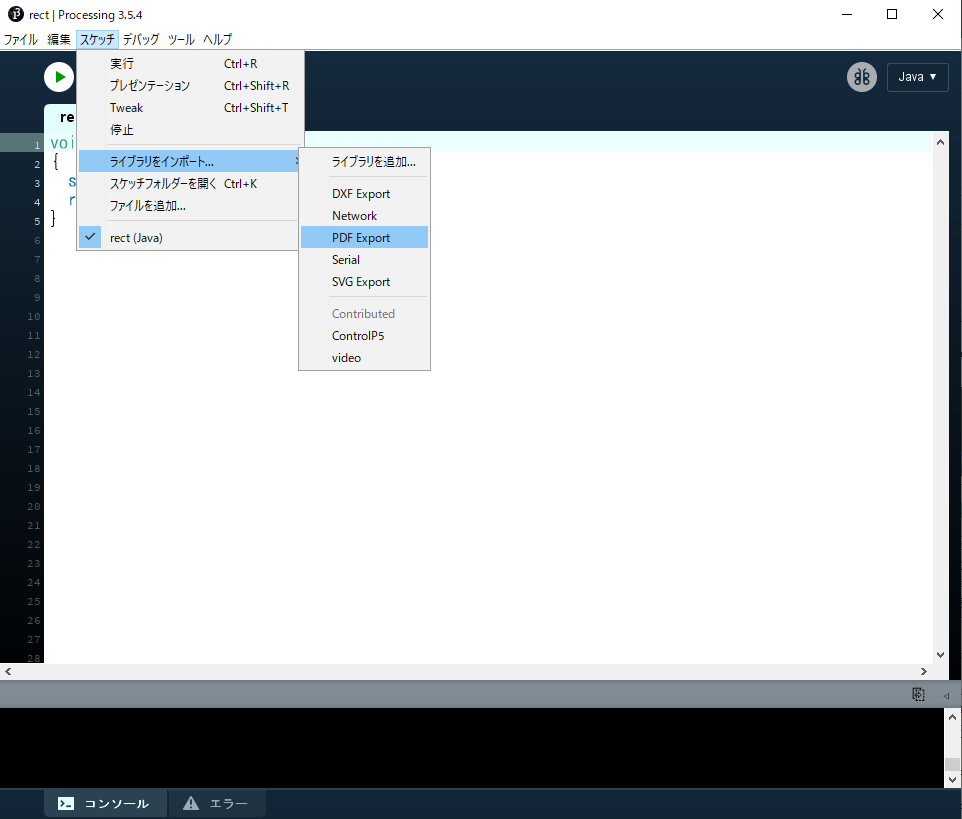
上記を選択すると，プログラムの一行目にimport processing.pdf.*;が追加される．
※メニューを使わず，直に入力も可能．

size()の記述変更xxxxxxxxxxsize( 横のサイズ, 縦のサイズ, PDF, “好きなファイル名.pdf” );

- プログラム末尾に
exit();を追加．

- プログラムを実行すると，pdfファイルが出力される． この時，表示ウィンドウは表示されない．

アニメーション
アニメーションの基礎知識
動画のフレームとは
- 動画を構成する一枚一枚の静止画（コマ）のこと
- 人間の目で動いているように見せるため，ごく短い時間間隔で切り替わっている．
フレームレートとは
動画の滑らかさの指標．
fps ( frames per second )
- 1秒間に書き換えるフレームの数，フレーム毎秒
- Processing でもこれを指定することでフレームレートを指定できる．
StaticモードとActiveモード
Staticモード
- これまでの静止画を描画するモード
- プログラムが上から書いた順番に実行され，終了する．
Activeモード
アニメーションを行う場合，Activeモードでプログラムを記述する必要がある．
プログラムのブロックが分かれる
- 開始時に１度だけ行う初期設定命令
- 毎フレーム行う描画命令
プログラムは終了命令が下されるまで終了しない．
静止画の描画も行えるので，ほぼStaticモードの上位互換
アニメーションの始め方(Activeモード)
1. プログラム全体をsetup()関数とdraw()関数で構成する．
xxxxxxxxxxvoid setup(){ // プログラムの開始時に１度だけ実行される（命令）文.}void draw(){ // 毎フレーム繰り返し実行される（命令）文.}2. setup()内で最初の設定を行う．
プログラム実行時に，最初に１度だけ実行する（命令）文を記述する．
よく使われる命令
- 画面のサイズ
size() - 背景色
background() - カラーモード
colorMode() - フレームレート
frameRate()
例
xxxxxxxxxxvoid setup(){ size( 128, 128 ); frameRate( 8 ); colorMode( HSB, 360, 1, 1 ); background( 0, 0, 0 );}3. draw()内でフレーム毎の描画を行う．
frameRate()で指定した頻度でdraw()の命令が繰り返し実行される．
例えば，frameRate( 30 );// フレームレート30fpsなら，１秒間に30回実行される．
よく使われる命令
- 図形描画
point(), line(), rect(), ellipse()など - 繰り返しfor文
- 条件分岐if文
- 変数への代入，算術式など
例
xxxxxxxxxxvoid draw(){ for(int iIdx=0; iIdx<100; iIdx++) { fill( 170 + random(80), 100 + random(50), 200 ); circle( random(width), random(height), 10 ); } for(int iIdx=0; iIdx<100; iIdx++) { fill( 170 + random(80), 100 + random(50), 200 ); rect( random(width), random(height), 10, 10 ); }}プログラム全体
xxxxxxxxxxvoid setup(){ size( 128, 128 ); frameRate( 8 ); colorMode( HSB, 360, 1, 1 ); background( 0, 0, 0 );}void draw(){ for(int iIdx=0; iIdx<10; iIdx++) { fill( 170 + random(80), 100 + random(50), 200 ); circle( random(width), random(height), 10 ); } for(int iIdx=0; iIdx<10; iIdx++) { fill( 170 + random(80), 100 + random(50), 200 ); rect( random(width), random(height), 10, 10 ); }}
静止画のみしか書かない場合
setup()関数内のみに描画命令を書く
この場合も，draw()の記述自体は必要
xxxxxxxxxxvoid setup(){ size( 128, 128 ); frameRate( 8 ); colorMode( HSB, 360, 1, 1 ); background( 0, 0, 0 ); for(int iIdx=0; iIdx<10; iIdx++) { fill( 170 + random(80), 100 + random(50), 200 ); circle( random(width), random(height), 10 ); } for(int iIdx=0; iIdx<10; iIdx++) { fill( 170 + random(80), 100 + random(50), 200 ); rect( random(width), random(height), 10, 10 ); }}void draw(){}
Activeモードまとめ
- 1回だけしか実行されない命令類
→
setup()関数内に書く - アニメーションのように，何度も実行される命令
→
draw()関数内に書く - 静止画の描画
→
setup()関数内のみに描画命令を書く
演習
ランダムな点描アニメーション

1. 空のsetup()とdraw()を用意
できれば下の答えを見る前にやってみましょう．
xxxxxxxxxxvoid setup(){ }void draw(){ }2. setup()に以下の処理を追加
- スクリーンサイズ: 200×200
- カラーモード:
RGB, 1, 1, 1 - 背景色: 黒
0, 0, 0
できれば下の答えを見る前にやってみましょう．
xxxxxxxxxxvoid setup(){ size(200, 200); colorMode( RGB, 1, 1, 1 ); background( 0, 0, 0 );}void draw(){ }3. draw()に以下の処理を追加
- 線の太さ: 最大4のランダム
- 線の色: RGB全て最大1のランダム
- 点の描画: XY座標値はスクリーン上でランダム
できれば下の答えを見る前にやってみましょう．
xxxxxxxxxxvoid setup(){ size(200, 200); colorMode( RGB, 1, 1, 1 ); background( 0, 0, 0 );}void draw(){ strokeWeight( random(4) ); stroke( random(1), random(1), random(1) ); point( random(width), random(height) );}
アニメーションの基本
フレームレートの設定
setup()のなかで，１秒間に描画を行う(draw()が実行される)回数を指定できる．
特に指定をしない場合，デフォルトは60fps．
xxxxxxxxxxframeRate( fps );例
xxxxxxxxxxframeRate( 30 ); // フレームレート30fps画面のリフレッシュ
draw()は，基本的に前フレームの描画結果の上に新しい描画を重ねて行う．
フレームごとに，画面をリフレッシュしたい場合は，backgroundと同じ色の四角を画面全体に貼付ける事で行う．
例
xxxxxxxxxxvoid setup(){ size( 128, 128 ); frameRate( 1 ); colorMode( HSB, 360, 1, 1 ); background( 0, 0, 0 );}void draw(){ // 画面のリフレッシュ. fill( 0, 0, 0 ); rect( 0, 0, width, height ); fill( 170 + random(80), 100 + random(50), 200 ); rect( random(width), random(height), 20, 20 );}
グローバル変数の使用
ローカル変数
※詳しくは，演算と変数/変数/ローカル変数とグローバル変数のセクションを参照
グローバル変数
- 全ての範囲で有効
draw()が実行される度にメモリ領域が初期化されることがなく，draw()の度に少しずつ数値を変更する等が可能．- アニメーションにおいて，変化をもたらすために特に重要．
ブロック
{ }で囲まれた部分をブロックという．
繰り返しfor文，条件分岐if文，関数で使用されている．
xxxxxxxxxxfor(/** 省略 */){ // ブロック}xxxxxxxxxxif(/** 省略 */){ // ブロック}xxxxxxxxxxvoid setup(){ // ブロック}void draw(){ // ブロック}使い方
- ブロック外で宣言すればグローバル変数となる．
- プログラムのどこからでも変数を使うことができる．
- 通常，プログラムの一番上に記述する．
xxxxxxxxxxint iX; // グローバル変数の宣言void setup(){ iX = 0; // OK}void draw(){ iX = iX + 5; // OK}演習
矩形の移動アニメーション

1. 空のsetup()とdraw()を用意
できれば下の答えを見る前にやってみましょう．
xxxxxxxxxxvoid setup(){ }void draw(){ }2. setup()に以下の処理を追加
- スクリーンサイズ: 200×200
- カラーモード:
RGB, 1, 1, 1 - 線(stroke)の表示をオフ
- フレームレート: 8 (fps)
できれば下の答えを見る前にやってみましょう．
xxxxxxxxxxvoid setup(){ size( 200, 200 ); colorMode( RGB, 1, 1, 1 ); noStroke(); frameRate( 8 );}void draw(){ }3. グローバル変数の追加
横移動用グローバル変数を一つ宣言し，
setup()で初期化しましょう．- 変数名: iPosX
- 型: int
- 初期値: 0
できれば下の答えを見る前にやってみましょう．
xxxxxxxxxxint iPosX; // グローバル変数iPosXの宣言 void setup(){ size( 200, 200 ); colorMode( RGB, 1, 1, 1 ); noStroke(); frameRate( 8 ); iPosX = 0; // iPosXの初期化}void draw(){ }4. draw()で矩形を描画
draw()で矩形を描画しましょう．- X座標: iPosX
- Y座標: ( スクリーンの高さの半分 - 10 )
- 大きさ: 20, 20
- 塗り色: 白( 1, 1, 1 )
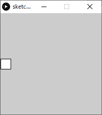
できれば下の答えを見る前にやってみましょう．
xxxxxxxxxxint iPosX; void setup(){ size( 200, 200 ); colorMode( RGB, 1, 1, 1 ); noStroke(); frameRate( 8 ); iPosX = 0;}void draw(){ fill( 1, 1, 1 ); // White rect( iPosX, height/2-10, 20, 20 ); // 矩形描画}5. 矩形を動かす
draw()の中に，iPosXに4を足す（加算）処理を追加しましょう．

できれば下の答えを見る前にやってみましょう．
xxxxxxxxxxint iPosX; void setup(){ size( 200, 200 ); colorMode( RGB, 1, 1, 1 ); noStroke(); frameRate( 8 ); iPosX = 0;}void draw(){ iPosX += 4; // フレーム毎に4を足す fill( 1, 1, 1 ); rect( iPosX, height/2-10, 20, 20 );}6. スクリーンのリフレッシュ処理の追加
前フレームの矩形描画が残ってしまっている．
draw()で，新しい矩形を描画する前にスクリーンをリフレッシュしましょう．
矩形を描画する
- X座標: 0
- Y座標: 0
- 幅・高さ: スクリーンと同じ
- 塗り色: 黒( 0, 0, 0 )
できれば下の答えを見る前にやってみましょう．
xxxxxxxxxxint iPosX; void setup(){ size( 200, 200 ); colorMode( RGB, 1, 1, 1 ); noStroke(); frameRate( 8 ); iPosX = 0;}void draw(){ fill( 0, 0, 0 ); // 白 rect( 0, 0, width, height ); // スクリーンのリフレッシュ. iPosX += 4; fill( 1, 1, 1 ); rect( iPosX, height/2-10, 20, 20 );}7. スクリーンの外に出たら左端に戻す
矩形のX座標値はiPosXに保存されている．
以下の処理を適切な場所に追加してみましょう．
- もしX座標値がスクリーンの外ならX座標値を0に戻す
できれば下の答えを見る前にやってみましょう．
xxxxxxxxxxint iPosX;void setup(){ size( 200, 200 ); colorMode( RGB, 1, 1, 1 ); noStroke(); frameRate( 8 ); iPosX = 0; // iPosXの初期化}void draw(){ fill( 0, 0, 0 ); rect( 0, 0, width, height ); iPosX += 4; if( iPosX > width ) // もしX座標値がスクリーンの外なら { iPosX = 0; // X座標値を0に戻す } fill( 1, 1, 1 ); rect( iPosX, height/2-10, 20, 20 );}
サンプル集
円の移動・跳ね返りアニメーション

1. 空のsetup()とdraw()を用意
できれば下の答えを見る前にやってみましょう．
xxxxxxxxxxvoid setup(){ }void draw(){ }2. setup()に以下の処理を追加
- スクリーンサイズ: 200×200
- カラーモード:
RGB, 1, 1, 1, 100 - 線(stroke)を表示しない
- フレームレート(fps): 8
できれば下の答えを見る前にやってみましょう．
xxxxxxxxxxvoid setup(){ size(200, 200); colorMode( RGB, 1, 1, 1 ); noStroke(); frameRate(8); // fps}void draw(){ }3. グローバル変数の追加
横移動用グローバル変数を一つ宣言し，
setup()で初期化しましょう．- 変数名: iPosX
- 型: int
- 初期値: 0
できれば下の答えを見る前にやってみましょう．
xxxxxxxxxxint iPosX; // 楕円のX座標 void setup(){ size(200, 200); colorMode( RGB, 1, 1, 1 ); noStroke(); frameRate(8); iPosX = 0; // 初期化}void draw(){ }4. draw()で楕円を描画
draw()で楕円を描画しましょう．- X座標: iPosX
- Y座標: スクリーンの高さの半分
- 直径: 30, 30
- 塗り色: 白( 1, 1, 1 )
できれば下の答えを見る前にやってみましょう．
xxxxxxxxxxint iPosX; void setup(){ size(200, 200); colorMode( RGB, 1, 1, 1 ); noStroke(); frameRate(8); iPosX = 0;}void draw(){ fill( 1, 1, 1 ); // White ellipse( iPosX, height/2, 30, 30 ); // 楕円描画}5. 楕円を動かす
draw()の中に，iPosXに4を足す（加算）処理を追加しましょう．

できれば下の答えを見る前にやってみましょう．
xxxxxxxxxxint iPosX; void setup(){ size(200, 200); colorMode( RGB, 1, 1, 1 ); noStroke(); frameRate(8); iPosX = 0;}void draw(){ fill( 1, 1, 1 ); ellipse( iPosX, height/2, 30, 30 ); iPosX += 4; // フレーム毎に4動かす}6. スクリーンのリフレッシュ処理の追加
前フレームの楕円描画が残ってしまっている．
draw()で，新しい楕円を描画する前にスクリーンをリフレッシュしましょう．
矩形を描画する
- X座標: 0
- Y座標: 0
- 幅・高さ: スクリーンと同じ
- 塗り色: 黒( 0, 0, 0 )

xxxxxxxxxxint iPosX; void setup(){ size(200, 200); colorMode( RGB, 1, 1, 1 ); noStroke(); frameRate(8); iPosX = 0;}void draw(){ fill( 0, 0, 0 ); // Black rect( 0, 0, width, height ); // スクリーンリフレッシュ fill( 1, 1, 1 ); ellipse( iPosX, height/2, 30, 30 ); iPosX += 4;}7. 跳ね返り（難易度高め）
今のままではスクリーン外に楕円が移動してしまう． スクリーンの右端と左端で進む向きが反転するよう，改良方法を考えてみましょう．
ヒント
- 現在の楕円進む向きの情報を保存するグローバル変数を追加する．
- 条件分岐
ifを使い，楕円がスクリーン端を超えたときに進む向きを変える． - 「向きが反転する」とはこの場合，(+)プラスが(-)マイナスになる，もしくは(-)マイナスが(+)プラスになる．
できれば下の答えを見る前にやってみましょう．
xxxxxxxxxxint iPosX;int iDirctionX; // 進む向き( 1:+X方向, -1:-X方向 ) void setup(){ size(200, 200); colorMode( RGB, 1, 1, 1 ); noStroke(); frameRate(8); iPosX = 0; iDirctionX = 1;} void draw(){ fill( 0, 0, 0 ); rect( 0, 0, width, height ); fill( 1, 1, 1 ); ellipse( iPosX, height/2, 30, 30 ); iPosX += iDirctionX*4; // iPosX = iPosX + iDirctionX*4; と同じ if( iPosX >= width || iPosX < 0 ) // もしX座標値がスクリーン幅以上もしくは0未満だったら { iDirctionX *= -1; // 向きを逆方向に変える(-1をかける) }}
直線の回転アニメーション
xxxxxxxxxxint iRatateDeg; // アニメーション用回転角度 void setup(){ size( 200, 200 ); frameRate( 8 ); iRatateDeg = 0; // グローバル変数初期化}void draw(){ // 画面のリフレッシュ. fill( 120, 120, 120 ); noStroke(); rect( 0, 0, width, height ); iRatateDeg += 2; // 毎フレーム2°回転 if( iRatateDeg > 360 ) { iRatateDeg -= 360; // 360°以上回転したら戻す. } translate( width/2, height/2 ); // 座標原点をスクリーン中心へ. rotate( radians(iRatateDeg) ); // 座標系回転. strokeWeight( 4 ); // 線の太さ. stroke( 0, 0, 0 ); line( 0, 0, width/2, 0 );}
惑星の公転のような回転アニメーション
xxxxxxxxxxint iRatateDegL; // アニメーション用回転角度int iRatateDegS; // アニメーション用回転角度 void setup(){ size( 300, 300 ); colorMode(HSB, 4, 1, 4); frameRate( 20 ); iRatateDegL = 0; // グローバル変数初期化 iRatateDegS = 0;}void draw(){ // 画面のリフレッシュ. fill( 0, 0, 1 ); noStroke(); rect( 0, 0, width, height ); // 大きい星回転. iRatateDegL += 2; // 毎フレーム2°回転 if( iRatateDegL > 360 ) { iRatateDegL -= 360; // 360°以上回転したら戻す. } // 小さい星回転. iRatateDegS += 4; // 毎フレーム2°回転 if( iRatateDegS > 360 ) { iRatateDegS -= 360; // 360°以上回転したら戻す. } translate( width/2, height/2 ); // 座標原点をスクリーン中心へ. pushMatrix(); rotate( radians(iRatateDegL) ); // 座標系回転(大きい星) translate( width/3, 0 ); // 公転半径分移動. // 大きい星描画 stroke( 0, 0, 0 ); fill(0, 1, 4); ellipse(0,0,40,40); // 原点に描画. rotate( radians(-iRatateDegL) ); // 回転戻す. rotate( radians(iRatateDegS) ); // 座標系回転(小さい星) translate( width/8, 0 ); // 公転半径分移動. // 小さい星描画 stroke( 0, 0, 0 ); fill(1, 1, 4); ellipse(0,0,20,20); popMatrix();}
波形の移動（位相変化）アニメーション
xxxxxxxxxxint iAmplitudeL = 80; // 振幅（大きな波の高さ） // グローバル変数.int iAnimPulseDeg = 0; // アニメーション用波の角度 void setup(){ size( 400,200 ); colorMode( HSB, 90, 1.0, 1.0, 1.0 );}void draw(){ // スクリーンリセット. noStroke(); fill( 0, 0, 0.4 ); rect( 0, 0, width, height ); iAnimPulseDeg += 2; // アニメーション用の角度を2°増やす. if( iAnimPulseDeg > 360 ) // 360°を超えたらリセット. { iAnimPulseDeg -= 360; } // コサイン波形 strokeWeight( 8 ); for( int iX=0; iX < width; iX++ ) { int iAngle0 = iX*4+iAnimPulseDeg; // アニメーション用の角度を加算 int iAngle1 = (iX+1)*4+iAnimPulseDeg; // アニメーション用の角度を加算 // X座標値によって色は固定 stroke( iX%90, 1.0, 1.0 ); line( iX, height/2 + iAmplitudeL*cos( radians(iAngle0) ), iX, height/2 + iAmplitudeL*cos( radians(iAngle1+1) ) ); }}
円弧の形状変化アニメーション
xxxxxxxxxxint iArcAnimDeg; // アニメーション用円弧の角度 void setup(){ size( 200, 200 ); frameRate( 8 ); iArcAnimDeg = 0; // アニメーション用変数初期化}void draw(){ // 画面のリフレッシュ. fill( 120, 120, 120 ); noStroke(); rect( 0, 0, width, height ); // アニメーション用変数更新. if( iArcAnimDeg < 180 ) // 180°以上変化したらリセット. { iArcAnimDeg += 4; // 毎フレームの変化角度 } else { iArcAnimDeg -= 180; // リセット. } // 円弧の始まりの角度を計算. int iArcAnimDegBegin = iArcAnimDeg - 90; // 円弧の終わりの角度を計算. int iArcAnimDegEnd = 270 - iArcAnimDeg; fill( 255, 255, 255 ); stroke( 0,0,0 ); arc(width/2, height/2, width, height, radians(iArcAnimDegBegin), radians(iArcAnimDegEnd), CHORD);}
関数の作成
概要
関数は命令がまとまったプログラムのモジュールである．
関数の定義
- 関数が行う処理（命令）を決めること
関数の使用
- 作った関数を使う（callする）こと
関数の定義
- 自分で独自の関数を作ることができる．
- 関数を作ることを，関数の定義を行うという．
setup関数とdraw関数の定義
アニメーションのセクションでsetup関数やdraw関数の中身を書いたが， 実はこの時，関数の定義を行っている.
xxxxxxxxxx// 関数setupの定義void setup(){ // (命令)文}// 関数drawの定義void draw(){ // (命令)文}- つまり，関数の定義を行うとは， 関数が行う処理（命令）をプログラムとして書くこと．
書式
返り値のある関数と返り値のない(void)関数で，異なる．
返り値のある関数
xxxxxxxxxx返り値の型 関数名( 引数の型 仮引数 ) // 引数は','区切りで複数可{ // 変数等の宣言文（必要なら）; // 命令(文); return 返り値；}返り値のない関数(void関数)
xxxxxxxxxxvoid 関数名( 引数の型 仮引数 ) // 引数は','区切りで複数可{ // 変数等の宣言文（必要なら）; // 命令(文);}引数について
実引数
- 関数を呼び出しているところに記述する引数のこと．
- これまで使ってきた引数．
仮引数
- 関数定義時に記述する引数のこと．
- 関数に渡された実引数の値を受け取る．
- 関数内の命令は，仮引数を元に行う．
- 関数内でのみ有効．

例1
xxxxxxxxxx// 円の面積を求める関数// 引数 fRadius : 円の半径// 返り値 : 円の面積float calcArea( float fRadius ){ float fArea = PI * fRadius * fRadius; return fArea;}
例2
xxxxxxxxxx/** 現在の原点を中心に18個の楕円を描画する関数 引数 fDistance: 原点からの距離 fRadius: 楕円の半径 返り値： なし*/void draw18Ellipses( float fDistance, float fRadius ){ for( int iEllipseIdx = 0; iEllipseIdx < 16; iEllipseIdx++ ) { ellipse( fDistance, 0, fRadius, fRadius ); rotate( radians(20) ); }}
記述場所
関数定義は，setup(), draw()のブロック外に書く．
xxxxxxxxxxvoid setup(){ // ブロック}void draw(){ // ブロック}// 関数定義int myFunc1(){ // (命令)文. // return int型の値or変数;}float myFunc2(){ // (命令)文. // return float型の値or変数;}void myVoidFunc1(){ // (命令)文. //}return文の記述方法
基本
xxxxxxxxxxreturn a; // 変数aの値を返す.return 1; // 値を直接記述してもよい．return a+b; // 数式を書いてもよい．計算結果の値が返される．if文で返り値を分岐させる
if文などで条件分岐を行うと，return文を複数記述できる．
xxxxxxxxxxint func( int iA, int iB ){ if( iA > iB ) // iAがiBより大きければ { return iA; // iAの値を返す } else { return iB; // iBの値を返す }}ただし，必ずいずれかのreturn が実行されるように記述しなければならない． ダメな例
xxxxxxxxxxint func( int iA, int iB ){ if( iA > iB ) { return iA; } else if( iB == 0 ) { return iB; } // エラー．ここにreturnが必要．}
関数の呼び出し（使用）
- 定義を行った関数は，使わなければ意味がない．
- これまで使ってきた様々な関数と同じように，
setup()やdraw()内で使えばよい． ※セクション／関数の基本を参照
関数から関数の呼び出し
関数の中で別の関数を呼び出すことももちろん可能．
xxxxxxxxxxvoid setup(){ //（命令）文；}void draw(){ function1();}void function1(){ function2(); // function1の中でfunction2を呼び出し}void function2(){ //（命令）文；}
使いどころ
複雑な図形の描画を関数にまとめる
- メインのプログラム(setup,draw)から切り離し，見やすくする．
- それを使って様々なレイアウトを行いやすくなる．
- 機能の追加がしやすくなる．
- 関数定義部分を移植（コピペ）することで，使い回しができる．
同じようなプログラムがあったら，関数にまとめる
- 関数として一か所にまとめ，setupやdrawからそれを呼び出すようにする
- メンテナンスがしやすくなり，プログラムも見やすくになる．
再帰的な処理を行いたいとき ※再帰のセクションを参照
まとめ
xxxxxxxxxxvoid setup(){ }void draw(){ }void func1
例
円周上に花弁（楕円）を描画する関数．
xxxxxxxxxxvoid setup(){ size(400,400); colorMode(HSB, 8, 1, 1, 8); for( int iFlowerIdx = 0; iFlowerIdx < 28; iFlowerIdx++ ) { // 自分で定義した関数をここで呼び出している． // ランダム値を引数として渡している． drawFlower( floor(random(6,14)), random(20,width-20), random(20,height-20) ); }} void draw(){} /** 指定の座標に花を描画する 関数定義 引数 iPetalTotal: 花弁（楕円）の数 fCenterX: 中心点X fCenterY: 中心点Y 返り値： なし*/void drawFlower( int iPetalTotal, float fCenterX, float fCenterY ){ int iRotDegPerPetal = 360 / iPetalTotal;// 花弁毎の回転角度 pushMatrix();// 座標系の保存 translate( fCenterX, fCenterY ); fill( random(8), 1, 1, 6 ); for( int iPetalIdx = 0; iPetalIdx < iPetalTotal; iPetalIdx++ ) { ellipse( 20, 0, 20, 10 ); rotate( radians(iRotDegPerPetal) );//回転 } popMatrix();// 座標系の復帰}処理の流れ


演習1:複数の図形描画をまとめる

1.setup(),draw()を記述
- スクリーンサイズ：400×400
- カラーモード：RGB, 100
- 背景色：白(100,100,100)
下の答えを見る前にやってみましょう．
xxxxxxxxxxvoid setup(){ size(400,400); colorMode(RGB,100); background(100,100,100);}void draw(){ }2.矢印を描画する関数を定義
ブロック内の命令以外の枠だけ用意しましょう．
関数名：drawFace
仮引数
int型 iX// 顔のX座標int型 iY// 顔のY座標
返り値：なし
下の答えを見る前にやってみましょう．
xxxxxxxxxxvoid setup(){ size(400,400); colorMode(RGB,100); background(100,100,100);}void draw(){}void drawFace( int iX, int iY ){ }3.drawFace関数をsetup()内で呼ぶ
setup()のブロック内でdrawFace()関数を呼び出す記述を追加してみましょう．
- 引数:
0, 0 - 今回は静止画なので，setup()内へ．
- 引数:
さらに，drawFace()関数の呼び出し前に，原点をスクリーン中心に移動しましょう．
- 平行移動
width/2, height/2 - 顔を作りやすくする便宜上，この処理を入れる．
- 平行移動
これで関数drawFace()は実行されるようになります．
下の答えを見る前にやってみましょう．
xxxxxxxxxxvoid setup(){ size(400,400); colorMode(RGB,100); background(100,100,100); translate(width/2,height/2); drawFace( 0, 0 );}void draw(){}void drawFace( int iX, int iY ){ }4.drawFace関数内に図形描画命令を追加
drawFace()のブロック内にellipseやlineなどの命令を使い，思い思いに自由に顔を描いてみましょう． 座標原点がスクリーン中心に移動していることに注意．
- 仮引数はまだ使わなくてかまいません．
- 最大サイズは200×200程度
- 色関連も変更してOK.

xxxxxxxxxxvoid setup(){ size(400,400); colorMode(RGB,100); background(100,100,100); translate(width/2,height/2); drawFace( 0, 0 );}void draw(){}void drawFace( int iX, int iY ){ ellipse( 0, 0, 100, 100 );// 輪郭 ellipse( -20, -20, 8, 8 );// 目 ellipse( 20, -20, 8, 8 ); line( -20, 20, 20, 20 );//口}5.仮引数を元に座標変換
仮引数iX,iYは顔の座標の平行移動に使いたい． drawFace()の中で，ステップ4で作成した顔描画の前に，座標変換：平行を追加しましょう．
- 平行移動
iX, iY
この方法だとたくさんある図形描画の命令にひとつひとつ追加するより楽．
下の答えを見る前にやってみましょう．
xxxxxxxxxxvoid setup(){ size(400,400); colorMode(RGB,100); background(100,100,100); translate(width/2,height/2); drawFace( 0, 0 );}void draw(){}void drawFace( int iX, int iY ){ translate( iX, iY ); ellipse( 0, 0, 100, 100 );// 輪郭 ellipse( -20, -20, 8, 8 );// 目 ellipse( 20, -20, 8, 8 ); line( -20, 20, 20, 20 );//口}6.座標系の保存・戻しを関数に追加
ステップ5のように関数内での座標変換は便利だが，関数内で行った座標変換は関数内で戻しておくのが安全． 戻さない場合，プログラムの他の部分に影響がでる．
以下のようにpushMatrix(), popMatrix()を追加しましょう．
xxxxxxxxxxvoid setup(){ size(400,400); colorMode(RGB,100); background(100,100,100); translate(width/2,height/2); drawFace( 0, 0 );}void draw(){}void drawFace( int iX, int iY ){ pushMatrix();// 座標系の保存 translate( iX, iY ); ellipse( 0, 0, 100, 100 );// 輪郭 ellipse( -20, -20, 8, 8 );// 目 ellipse( 20, -20, 8, 8 ); line( -20, 20, 20, 20 );//口 popMatrix();// 座標系を戻す}7.drawFace()を複数呼び出す
まず，setup()内のtranslate()文はもう不要なので，削除しましょう．
setup()内のdrawFace()呼び出しを，引数を変えながら複数書いてみましょう．
引数
- iX: 顔の中心座標値X
- iY: 顔の中心座標値Y
余裕があれば，for文を使い，さらに大量に書いてみましょう．
xxxxxxxxxxvoid setup(){ size(400,400); colorMode(RGB,100); background(100,100,100); drawFace( 60, 80 ); drawFace( 180, 120 ); drawFace( 320, 330 ); drawFace( 80, 320 ); drawFace( 220, 240 );}void draw(){}void drawFace( int iX, int iY ){ pushMatrix(); translate( iX, iY ); ellipse( 0, 0, 100, 100 );// 輪郭 ellipse( -20, -20, 8, 8 );// 目 ellipse( 20, -20, 8, 8 ); line( -20, 20, 20, 20 );//口 popMatrix();}
演習2:複雑な図形を描画する関数
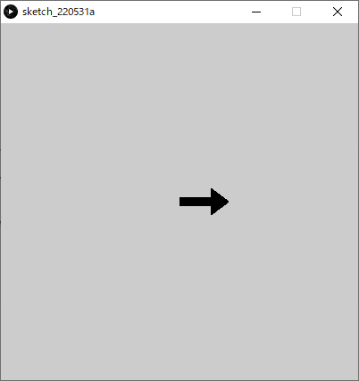
1.setup,drawを記述
- スクリーンサイズ：400×400
- カラーモード：RGB, 100
- 背景色：白(100,100,100)
下の答えを見る前にやってみましょう．
xxxxxxxxxxvoid setup(){ size(400,400); colorMode(RGB,100); background(100,100,100);}void draw(){ }2.矢印を描画する関数を定義
ブロック内の命令以外の枠だけ用意しましょう．
関数名：drawArrow
仮引数
- int型のiX // 矢印の始点のX座標
- int型のiY // 矢印の始点のY座標
- int型のiRotateDeg // 矢印の回転（°）
返り値：なし
下の答えを見る前にやってみましょう．
xxxxxxxxxxvoid setup(){ size(400,400); colorMode(RGB,100); background(100,100,100);}void draw(){ }/** 矢印を描画する 回転0だと：'→'のように右向き 引数 iX: 矢印の始点のX座標値 iY: 矢印の始点のY座標値 iRotateDeg; 矢印の回転（°）*/void drawArrow( int iX, int iY, int iRotateDeg ){}3.矢印のプロポーション
矢印の各プロポーションを以下のようにグローバル変数で定義し，初期値を入力してください． グローバル変数はプログラムの最初に追加します．
xxxxxxxxxxint iArrowBaseWidth = 10; // 矢印の基部の幅int iArrowBaseHeight = 35; // 矢印の基部の高さ int iArrowHeadWidth = 30; // 矢印の頭部の幅int iArrowHeadHeight = 20; // 矢印の頭部の高さ
xxxxxxxxxxint iArrowBaseWidth = 10; // 矢印の基部の幅int iArrowBaseHeight = 35; // 矢印の基部の高さ int iArrowHeadWidth = 30; // 矢印の頭部の幅int iArrowHeadHeight = 20; // 矢印の頭部の高さ void setup(){ size(400,400); colorMode(RGB,100); background(100,100,100);}void draw(){}void drawArrow( int iX, int iY, int iRotateDeg ){}
4.多角形描画による矢印の描画
多角形描画を使って矢印を描画する命令をdrawArrow関数に追加しましょう．
- 多角形描画の命令
xxxxxxxxxxbeginShape();vertex( X座標値, Y座標値 ); // 頂点0vertex( X座標値, Y座標値 ); // 頂点1vertex( X座標値, Y座標値 ); // 頂点2vertex( X座標値, Y座標値 ); // 頂点3vertex( X座標値, Y座標値 ); // 頂点4vertex( X座標値, Y座標値 ); // 頂点5vertex( X座標値, Y座標値 ); // 頂点6endShape(CLOSE); // 多角形を閉じる多角形の色
- 線（ストローク）：なし
- 塗色：黒(0,0,0)
各頂点の座標は先ほど定義したグローバル変数を元に算出してください

- 正しくできたかテストする方法 setup()に以下の関数呼び出し文を追加する．
xxxxxxxxxxtranslate(width/2,height/2);drawArrow(0,0,0);
以下の答えを見る前にやってみましょう．
xxxxxxxxxxint iArrowBaseWidth = 10; // 矢印の基部の幅int iArrowBaseHeight = 35; // 矢印の基部の高さ int iArrowHeadWidth = 30; // 矢印の頭部の幅int iArrowHeadHeight = 20; // 矢印の頭部の高さ void setup(){ size(400,400); colorMode(RGB,100); background(100,100,100); translate(width/2,height/2); drawArrow(0,0,0);}void draw(){}void drawArrow( int iX, int iY, int iRotateDeg ){ noStroke(); fill(0,0,0); // 多角形描画 beginShape(); vertex( 0, -iArrowBaseWidth/2 ); vertex( iArrowBaseHeight, -iArrowBaseWidth/2 ); vertex( iArrowBaseHeight, -iArrowHeadWidth/2 ); vertex( iArrowBaseHeight + iArrowHeadHeight, 0 ); vertex( iArrowBaseHeight, iArrowHeadWidth/2 ); vertex( iArrowBaseHeight, iArrowBaseWidth/2 ); vertex( 0, iArrowBaseWidth/2 ); endShape(CLOSE);}5.仮引数を元に座標変換
今のままでは仮引数が使われていないので，これらを使って座標変換を行いましょう． drawArrow関数内に追加しましょう．
- 平行移動:
iX, iY - 回転:
iRotateDeg(ラジアン値に変換する) - 正しくできたかテストする方法 setup()の関数呼び出しの引数を色々変更してみる．
xxxxxxxxxxdrawArrow(100,0,90); // 変更例( X値:100, Y値:0, 回転90° )
以下の答えを見る前にやってみましょう．
xxxxxxxxxxvoid drawArrow( int iX, int iY, int iRotateDeg ){ translate( iX, iY ); // 座標系を移動 rotate( radians(iRotateDeg) );// 座標系を回転 noStroke(); fill(0,0,0); // 多角形描画 beginShape(); vertex( 0, -iArrowBaseWidth/2 ); vertex( iArrowBaseHeight, -iArrowBaseWidth/2 ); vertex( iArrowBaseHeight, -iArrowHeadWidth/2 ); vertex( iArrowBaseHeight + iArrowHeadHeight, 0 ); vertex( iArrowBaseHeight, iArrowHeadWidth/2 ); vertex( iArrowBaseHeight, iArrowBaseWidth/2 ); vertex( 0, iArrowBaseWidth/2 ); endShape(CLOSE);}6.座標変換のリセット
実はステップ5のままでは，関数実行後も座標変換が残ったままである．
基本的には関数内で行った変換は，関数内で戻した方がよい．
drawArrow()に，pushMattix()とpopMatrix()を追加しましょう．
※詳しくは座標変換セクションを参照
xxxxxxxxxxint iArrowBaseWidth = 10; // 矢印の基部の幅int iArrowBaseHeight = 35; // 矢印の基部の高さ int iArrowHeadWidth = 30; // 矢印の頭部の幅int iArrowHeadHeight = 20; // 矢印の頭部の高さ void setup(){ size(400,400); colorMode(RGB,100); background(100,100,100); translate(width/2,height/2); drawArrow(100,0,90);}void draw(){}/** 矢印を描画する 回転0だと：'→'のように右向き 引数 iX: 矢印の始点のX座標値 iY: 矢印の始点のY座標値 iRotateDeg; 矢印の回転（°）*/void drawArrow( int iX, int iY, int iRotateDeg ){ pushMatrix();// 座標系を保存 translate( iX, iY );// 座標系を移動 rotate( radians(iRotateDeg) );// 座標系を回転 noStroke(); fill(0,0,0); // 多角形描画 beginShape(); vertex( 0, -iArrowBaseWidth/2 ); vertex( iArrowBaseHeight, -iArrowBaseWidth/2 ); vertex( iArrowBaseHeight, -iArrowHeadWidth/2 ); vertex( iArrowBaseHeight + iArrowHeadHeight, 0 ); vertex( iArrowBaseHeight, iArrowHeadWidth/2 ); vertex( iArrowBaseHeight, iArrowBaseWidth/2 ); vertex( 0, iArrowBaseWidth/2 ); endShape(CLOSE); popMatrix();// 座標系を戻す}
演習3:演習2の応用
1. 矢印を描画する（演習1の完成プログラム）
演習2の最後のプログラムをコピー＆ペースト．
2.関数に拡大縮小機能を追加
矢印の大きさを変更（拡大縮小）できるよう， drawArrow()を書きかえてみましょう．
スケール値（拡大縮小率）を渡すための仮引数を１つ追加する．
- 仮引数名: fScale
- 引数の型: float
- 100%の時，fScaleの値：1.0
仮引数を使い，矢印の拡大縮小処理を追加する．
関数呼び出し部(setup内)を変更 setup()の関数呼び出しに，引数を追加．
xxxxxxxxxxdrawArrow(0, 0, 0, 0.5); // スケール値:0.5(50%)
下の答えを見る前にやってみましょう．
xxxxxxxxxx/** 矢印を描画する 回転0だと：'→'のように右向き 引数 iX: 矢印の始点のX座標値 iY: 矢印の始点のY座標値 iRotateDeg; 矢印の回転（°） fScale: 矢印のスケール値 100%==1.0*/void drawArrow( int iX, int iY, int iRotateDeg, float fScale ){ pushMatrix();// 座標系を保存 translate( iX, iY );// 座標系を移動 rotate( radians(iRotateDeg) );// 座標系を回転 scale( fScale );// 座標を拡大縮小 noStroke(); fill(0,0,0); // 多角形描画 beginShape(); vertex( 0, -iArrowBaseWidth/2 ); vertex( iArrowBaseHeight, -iArrowBaseWidth/2 ); vertex( iArrowBaseHeight, -iArrowHeadWidth/2 ); vertex( iArrowBaseHeight + iArrowHeadHeight, 0 ); vertex( iArrowBaseHeight, iArrowHeadWidth/2 ); vertex( iArrowBaseHeight, iArrowBaseWidth/2 ); vertex( 0, iArrowBaseWidth/2 ); endShape(CLOSE); popMatrix();// 座標系を戻す}3.矢印を使った様々な表現
関数drawArrow()を使って色々な描画を試してみましょう．
静止画ならsetup()内，アニメーションさせたいならdraw()内で呼び出しましょう．
- for文で矢印を繰り返し描画
- 回転させながら複数の矢印を描画
- draw()内で呼び出し，アニメーションを行う．
また，以下の部分の数値を変更することで矢印のプロポーションを変更できる．
xxxxxxxxxxint iArrowBaseWidth = 10; // 矢印の基部の幅int iArrowBaseHeight = 35; // 矢印の基部の高さ int iArrowHeadWidth = 30; // 矢印の頭部の幅int iArrowHeadHeight = 20; // 矢印の頭部の高さ
例:回転
xxxxxxxxxx// seup()かdraw()に以下を記述for( int iRotateDeg = 0; iRotateDeg < 360; iRotateDeg+=40 ) // 40°ずつ回転させながら360°描画{ drawArrow(width/2,height/2,iRotateDeg);// 回転した角度だけ矢印の向きを回転させる.}
例:円周上に並べる
xxxxxxxxxx// seup()かdraw()に以下を記述translate(width/2,height/2);for( int iRotateDeg = 0; iRotateDeg < 360; iRotateDeg+=18 ) // 20回繰り返す{ drawArrow(185,0,95); //中心からの距離:185, 矢印の向き95° rotate(radians(18)); //座標系を18°回転}
例:並進
xxxxxxxxxx// seup()かdraw()に以下を記述for( int iArrowIdx = 0; iArrowIdx < 48; iArrowIdx++ ) // 48回繰り返す{ int iColumn = iArrowIdx%6; // 列番号0~ %:割り算の余り int iRow = iArrowIdx/6; // 行番号0~ int iX = 20+60*iColumn+50*(iRow%2); // 奇数の行番号は50右にずらす int iY = 20+50*iRow; int iRotateDegree = 180*(iRow%2); // 奇数の行番号は180°回転 drawArrow(iX,iY,iRotateDegree);}
例:並進（拡大縮小あり）
xxxxxxxxxx// seup()かdraw()に以下を記述for( int iArrowIdx = 0; iArrowIdx < 48; iArrowIdx++ ) // 48回繰り返す{ int iColumn = iArrowIdx%6; // 列番号0~ %:割り算の余り int iRow = iArrowIdx/6; // 行番号0~ float fScale = 0.2+iRow/8.0; // スケール値 int iX = 20+60*iColumn+floor(fScale*50*(iRow%2)); // 奇数の行番号はfScale*50右にずらす int iY = 20+50*iRow; int iRotateDegree = 180*(iRow%2); // 奇数の行番号は180°回転 drawArrow(iX,iY,iRotateDegree,fScale);}
例:移動と跳ね返りアニメーション
xxxxxxxxxx// 関数定義以外を以下のように変更する．int iArrowBaseWidth = 10; // 矢印の基部の幅int iArrowBaseHeight = 35; // 矢印の基部の高さ int iArrowHeadWidth = 30; // 矢印の頭部の幅int iArrowHeadHeight = 20; // 矢印の頭部の高さ int iPosX; // 矢印の座標int iDirctionX; // 進む向き( 1:+X方向, -1:-X方向 ) void setup(){ size(400,400); colorMode(RGB,100); background(100,100,100); frameRate(8); iPosX = 0; iDirctionX = 1; }void draw(){ fill( 100, 100, 100 ); rect( 0, 0, width, height );// スクリーンリフレッシュ drawArrow( iPosX, height/2, 90*( 1 - iDirctionX ) ); // 進む方向によって矢印を回転 iPosX += iDirctionX*8; // iPosX = iPosX + iDirctionX*4; と同じ if( iDirctionX == 1 && iPosX > width-50 || // もし，右向きかつ矢印頭がスクリーン端をこえる iDirctionX == -1 && iPosX < 50 ) // もしくは，左向きかつ矢印頭スクリーン端を超えたら { iDirctionX *= -1; // 向きを逆方向に変える(-1をかける) }}
まとめ
関数に複雑な図形描画をまとめると，
- それを使って様々なレイアウトを行いやすくなる．
- 機能の追加がしやすくなる．
- 関数定義部分を移植（コピペ）することで，使い回しができる．
サンプル集
アニメーション複製描画
xxxxxxxxxxint iFPS = 20; // アニメーション用変数int iAnimMouthDeg; // 0~360 void setup(){ size( 400, 400 ); frameRate(iFPS); iAnimMouthDeg = 0;}void draw(){ fill(60,60,60); noStroke(); rect(0,0,width,height); // 口の開き具合(cos,sin) float fMouthOpenCos = (1 + cos(radians(iAnimMouthDeg)))/2.0; //cos単振動(0~1) float fMouthOpenSin = (1 + sin(radians(iAnimMouthDeg)))/2.0; //sin単振動(0~1) // 顔を並べて描画 translate( 40, 40 ); for( int iFaceIdx=0; iFaceIdx<25; iFaceIdx++)// 25回繰り返し { int iColumn = iFaceIdx%5; int iRow = iFaceIdx/5; // 口の開き具合(cos,sin)どちらの値を使うか float fMouthOpen = 0.0; if( iRow%2==0 )// 行番号が奇数なら { fMouthOpen = fMouthOpenCos; } else { fMouthOpen = fMouthOpenSin; } // 顔の描画 drawFace( 80*iColumn,80*iRow,fMouthOpen ); } //アニメーション用変数更新 if( iAnimMouthDeg > 360 ) { iAnimMouthDeg-= 360; } else { iAnimMouthDeg +=4;// 4°進める }}/** 顔を描画する 引数 fX: 顔の中心の座標値 fY: fMouthOpen: 口の開き具合(0~1) fScale; スケール値*/void drawFace( float fX, float fY, float fMouthOpen ){ pushMatrix();//座標系保存 stroke(0,0,0); fill(255,255,255); ellipse( fX, fY, 80, 80 ); // 輪郭 fill(255,255,255); ellipse( fX-20, fY-20, 8, 8 );// 目 ellipse( fX+20, fY-20, 8, 8 ); // 口 // 位置調整のため，細かい数値が入っています． float fBeginDeg = 60 - 60*fMouthOpen; float fEndDeg = 120 + 60*fMouthOpen; float fMouthY = fY-10+16*fMouthOpen; float fEllipseWidth = 60-20*fMouthOpen; fill(255,0,0); arc( fX, fMouthY, fEllipseWidth, 40, radians(fBeginDeg), radians(fEndDeg), CHORD ); popMatrix();//座標系戻す}
共通する処理の関数化
サイン波とコサイ波のアニメーション
xxxxxxxxxxint iAnimDegree; // アニメーション用 void setup(){ size( 400, 200 ); strokeWeight( 4 ); frameRate(20); iAnimDegree = 0;}void draw(){ noStroke(); fill(0,0,0); rect(0,0,width,height); // 波長アニメーション float fAnimPhaseShift = radians(iAnimDegree); // 振幅アニメーション float fAnimAmplitudeSin = 50+50*sin(radians(iAnimDegree)); float fAnimAmplitudeCos = 50+50*cos(radians(iAnimDegree)); // cos波 stroke(255,0,0); drawWaveCos( fAnimPhaseShift, fAnimAmplitudeCos, 400 ); // sin波 stroke(0,0,255); drawWaveSin( fAnimPhaseShift, fAnimAmplitudeSin, 400 ); if( iAnimDegree > 360 )// 360超えたらリセット { iAnimDegree-=360; } else { iAnimDegree+=8;//毎フレーム8加算 }}/** 波をスクリーン全体に描画する params fPhaseShift: 位相のズレ(ラジアン) fAmplitude: 振幅 fWaveLength: 波長 */void drawWaveCos( float fPhaseShift, float fAmplitude, float fWaveLength ){ for( int iX=0; iX < width; iX++ ) { float fPhaseRad0 = calcWavePhase( iX, fWaveLength )+fPhaseShift; float fPhaseRad1 = calcWavePhase( iX+1, fWaveLength )+fPhaseShift; line( iX, height/2 + fAmplitude*cos( fPhaseRad0 ), iX+1, height/2 + fAmplitude*cos( fPhaseRad1 ) ); }}void drawWaveSin( float fPhaseShift, float fAmplitude, float fWaveLength ){ for( int iX=0; iX < width; iX++ ) { float fPhaseRad0 = calcWavePhase( iX, fWaveLength )+fPhaseShift; float fPhaseRad1 = calcWavePhase( iX+1, fWaveLength )+fPhaseShift; line( iX, height/2 + fAmplitude*sin( fPhaseRad0 ), iX+1, height/2 + fAmplitude*sin( fPhaseRad1 ) ); }}/** 波の位相を計算し，返す params iX: スクリーンのX座標値 fWaveLength: 波長 return 位相(ラジアン値)*/float calcWavePhase( int iX, float fWaveLength ){ return TWO_PI * iX / fWaveLength;}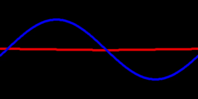
再帰
再帰 Recursive
自身が，自分自身を参照してしまうような状態．
身の回りの再帰的現象


フラクタル
フラクタルは再帰的であり，かつ部分と全体が同じ構造となっている．（自己相似）


レイトレーシング
CGにおける描画法の一種であるレイトレーシングも再帰呼び出しを用いる．

再帰呼び出し Recursive Call
関数内で自分自身の関数を呼び出すこと．
無限ループを避けるため，呼び出しを終える条件式が必要．
- 仮引数を使って，適切に条件式を記述する必要がある．
利点
繰り返し処理をスマートに記述する．
大切なこと
イメージをつかむこと．
- 事前に全てを把握して作ることは難しい．
シンプルに，どういう処理を繰り返したいかを考える．
再帰呼び出し関数の定義
書式1
再帰を続ける条件式を記述する方法．
xxxxxxxxxxvoid 関数名( 仮引数の型 仮引数 ){ // ※ここに図形描画命令文(仮引数を使う) if( 再帰を続ける条件式 ) // 真(True)なら再帰を続ける { 関数名( 引数 ); // 関数function内で同じfunctionを呼び出す． }}書式2
再帰を終える条件式を記述する方法．
xxxxxxxxxxvoid 関数名( 仮引数の型 仮引数 ){ // ※ここに図形描画命令文(仮引数を使う) if( 再帰を終える条件式 ) // 真(True)なら再帰を終える { return; // return文をこのように書くことで，ここで関数処理を終了できる． } 関数名( 引数 ); // 関数function内で同じfunctionを呼び出す．}例
- 関数recursiveFuncが繰り返されるたび，引数が1ずつ減っていく
- 仮引数が0のとき，再帰呼び出しが終了する．
xxxxxxxxxx/** 関数recursiveFuncの定義 */void recursiveFunc(int iLevel){ if( iLevel>0 ) //もしiLevelの数値が0より大きければ { recursiveFunc(iLevel-1); //関数recursiveFuncの再帰呼び出し（引数iLevel-1） }}再帰呼び出しを複数回行う
関数内で，再帰呼び出しを複数回同時に行ってもよい． 再帰を枝分かれさせることができる．
xxxxxxxxxx/** 関数recursiveFuncの定義 */void recursiveFunc(int iLevel){ if( iLevel>0 ) //もしiLevelの数値が0より大きければ { recursiveFunc(iLevel-1); //関数recursiveFuncの再帰呼び出し（引数iLevel-1） recursiveFunc(iLevel-1); //関数recursiveFuncの再帰呼び出し（引数iLevel-1） recursiveFunc(iLevel-1); //関数recursiveFuncの再帰呼び出し（引数iLevel-1） }}
再帰呼び出し関数の使用
再帰呼び出し関数も関数であるので，setup関数やdraw関数から呼びだして使う必要がある． この時の引数により，再帰呼び出しの回数を変えることができる． 以下の例だと，5回再帰呼び出しを行う．
xxxxxxxxxxvoid setup(){ recursiveFunc(5); //関数recursiveFuncの呼び出し（引数5を渡す）}/** 関数recursiveFuncの定義 */void recursiveFunc(int iLevel){ if( iLevel>0 ) //もしiLevelの数値が0より大きければ { recursiveFunc(iLevel-1); //関数recursiveFuncの再帰呼び出し（引数iLevel-1） }}ダメな例
再帰を続ける，または終える条件式を適切に記述しなければ， 無限ループとなりプログラムが暴走してしまうので，注意．
xxxxxxxxxx// ※このまま実行するとプログラムが暴走するので，実行しないようにvoid setup(){ recursiveRect(5);}/** 関数recursiveFuncの定義 */void recursiveRect(int iLevel){ rect( 0, 0, 10*iLevel, 10*iLevel ); // 矩形描画 // ※注意 再帰を続ける，または終える条件式を書いていない recursiveRect();}例
5段階まで再帰呼び出しを行う指定をした例である。
xxxxxxxxxxvoid setup(){ recursiveFunc(5); //関数recursiveFuncの呼び出し（引数5を渡す）}/** 関数recursiveFuncの定義 */void recursiveFunc(int iLevel){ if( iLevel>0 ) //もしiLevelの数値が0より大きければ { recursiveFunc(iLevel-1); //関数recursiveFuncの再帰呼び出し（引数iLevel-1） }}1. setup()から関数recursiveFunc(5)の呼び出し．
※コールスタックとは，関数呼び出しの階層状態を表示したもの．

2. recursiveFunc(5)内の処理．

3. recursiveFunc(4)の呼び出し．

4. recursiveFunc(4)内の処理．

5. recursiveFunc(3)の呼び出し．

6. 関数recursiveFuncの呼び出しを繰り返す．（引数~0まで）

7. recursiveFunc(0)内の処理

8. recursiveFunc(0)の終了

9. recursiveFunc(1)~recursiveFunc(5)が順次終了していく．

10. setup()内の呼び出し元に戻る

例
矩形の再帰的描画
xxxxxxxxxxvoid setup(){ size(400,400); recursiveRects(5); //関数recursiveFuncの呼び出し（引数5を渡す）}/** 関数recursiveRectsの定義 */void recursiveRects(int iLevel){ // iLevelに応じて大きさを変える. rect( 50, 50, 50*iLevel, 50*iLevel );// 矩形描画. if( iLevel>0 ) //もしiLevelの数値が0より大きければ { recursiveRects(iLevel-1); //関数recursiveRectsの再帰呼び出し（引数iLevel-1） }}
楕円の再帰的描画
xxxxxxxxxxvoid setup(){ background(255); size(400,400); translate(width/2,height/2); // 原点をスクリーン中心に移動 recursiveEllipses(18); // 関数recursiveEllipsesの呼び出し（引数16を渡す）}/** 関数recursiveEllipsesの定義 */void recursiveEllipses(int iLevel){ fill( 60+10*iLevel ); // 色 // iLevelに応じて指数的な増加. ellipse( pow(1.4,iLevel), 0, 4+pow(1.5,iLevel), 4+pow(1.5,iLevel) );// 楕円描画. if( iLevel>0 ) //もしiLevelの数値が0より大きければ { recursiveEllipses(iLevel-1); //関数recursiveRectsの再帰呼び出し（引数iLevel-1） }}
演習1
深度レベル5まで繰り返す再帰呼び出し関数を作り，簡単な描画を試す．
1. setup()を記述
- draw()は今回不要
- スクリーンサイズ：400×400
下の答えを見る前にやってみましょう．
xxxxxxxxxxvoid setup(){ size( 400, 400 );}2. 再帰関数の定義
再帰関数の定義は，関数定義と同じ書式です． ブロック内の命令以外の枠だけ用意しましょう．
- 関数名：drawRecursive
- 仮引数：iLevel
- 返り値：なし
下の答えを見る前にやってみましょう．
xxxxxxxxxxvoid setup(){ size( 400, 400 );}void drawRecursive( int iLevel ){}3. setup()から再帰関数を呼ぶ(使う)
setup()内で，作成した再帰関数drawRecursive()を呼びましょう．
- 引数：
5
- 引数：
xxxxxxxxxxvoid setup(){ size( 400, 400 ); drawRecursive( 5 );}void drawRecursive( int iLevel ){}4.再帰の続行条件を設定する
関数drawRecursive()内で，再帰呼び出しを行いましょう．
- 引数：
iLevel-1
- 引数：
また，この再帰呼び出しを以下の条件の時にしか行わないようにしましょう．
- 仮引数
iLevelの値が0より大きいとき
- 仮引数
下の答えを見る前にやってみましょう．
xxxxxxxxxx// 再帰呼び出しの最もシンプルなテンプレート.void setup(){ size( 400, 400 ); drawRecursive(5); //関数recursiveFuncの呼び出し（引数5を渡す）}/** 関数drawRecursiveの定義 */void drawRecursive(int iLevel){ // ここで(仮引数を使った)描画を行う. if( iLevel>0 ) //もしiLevelの数値が0より大きければ { drawRecursive(iLevel-1); //drawRecursiveの再帰呼び出し（引数iLevel-1） }}5.描画
drawRecursive内に何か自由に描画を行ってみましょう．
- 仮引数
iLevelを座標や大きさの指示に使う． - 再帰最大レベルを(5から)より大きな値に変更する．
余裕がある人は
仮引数を増やして表現の幅を広げてみましょう
再帰呼び出しを複数行ってみましょう.
- drawRecursive内のdrawRecursive呼び出しを複数行う．
例
xxxxxxxxxxvoid setup(){ size( 400, 400 ); colorMode(HSB,4, 40, 40 ); background( 0, 0, 0 ); drawRecursive(80); //関数recursiveFuncの呼び出し（引数80を渡す）}void drawRecursive(int iLevel){ // ここで(仮引数を使った)描画を行う. noStroke(); fill( 2, 40, 50-iLevel ); rectMode(CENTER); rect( 150+pow( 1.13, iLevel), 50+pow( 1.15, iLevel), 2+pow( 1.16, iLevel), 2+pow( 1.15,iLevel) ); if( iLevel>0 ) //もしiLevelの数値が0より大きければ { drawRecursive(iLevel-1); //drawRecursiveの再帰呼び出し（引数iLevel-1） }}
演習2
曼荼羅のような図形の描画 シェルピンスキーのカーペット

描画を単位で考える
左の図が再帰的に繰り返される．
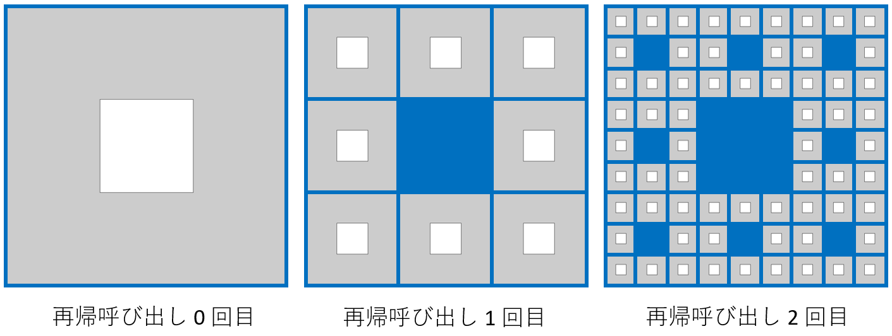
1. setup()を記述
draw()は今回不要
スクリーンサイズ：1000×1000
矩形の座標を中心点で指定
rectMode(CENTER)
下の答えを見る前にやってみましょう．
xxxxxxxxxxvoid setup(){ size(1000, 1000); rectMode(CENTER); // 矩形の座標を中心点で指定}2. 再帰関数の定義
再帰関数の定義は，関数定義と同じ書式です． ブロック内の命令以外の枠だけ用意しましょう．
- 関数名：drawMandara
- 仮引数：iLevel
- 返り値：なし
下の答えを見る前にやってみましょう．
xxxxxxxxxxvoid setup(){ size(1000, 1000); rectMode(CENTER); // 矩形の座標を中心点で指定}void drawMandara( int iLevel ){ }3. setup()から再帰関数を呼ぶ(使う)
setup()内で，作成した再帰関数drawMandara()を呼びましょう．
- 引数：
5
xxxxxxxxxxvoid setup(){ size(1000, 1000); rectMode(CENTER); // 矩形の座標を中心点で指定 drawMandara(5);}void drawMandara( int iLevel ){ }4. 再帰の続行条件を設定する
関数drawMandara()内で，再帰呼び出しを行いましょう．
- 引数：
iLevel-1
- 引数：
また，この再帰呼び出しを以下の条件の時にしか行わないようにしましょう．
- 仮引数
iLevelの値が0より大きいとき
- 仮引数
下の答えを見る前にやってみましょう．
xxxxxxxxxxvoid setup(){ size(1000, 1000); rectMode(CENTER); // 矩形の座標を中心点で指定 drawMandara(5);}void drawMandara( int iLevel ){ if( iLevel>0 ) //もしiLevelの数値が0より大きければ { drawMandara(iLevel-1); //drawMandaraの再帰呼び出し（引数iLevel-1） }}5. 中心の大きな矩形の描画

スクリーン中心の大きな矩形を描画しましょう． スクリーンをX軸方向とY軸方向にそれぞれ三等分した領域の真ん中に描画．
drawMandara()内に記述
変数を用意
float fRectX = width/2; // 中央の矩形のX座標値float fRectY = height/2; // 中央の矩形のY座標値float fRectWidth = width/3; // 中央の矩形の幅float fRectHeight = height/3 // 中央の矩形の高さ
座標，大きさを上記の変数で表しましょう．
矩形の座標を中心点で指定していることに注意
rectMode(CENTER)
下の答えを見る前にやってみましょう．
xxxxxxxxxxvoid setup(){ size(1000, 1000); rectMode(CENTER); // 矩形の座標を中心点で指定 drawMandara(5);}void drawMandara( int iLevel ){ float fRectX = width/2; float fRectY = height/2; float fRectWidth = width/3; float fRectHeight = height/3; rect(fRectX, fRectY, fRectWidth, fRectHeight); // 中央 if( iLevel>0 ) //もしiLevelの数値が0より大きければ { drawMandara(iLevel-1); //drawMandaraの再帰呼び出し（引数iLevel-1） }}6. 周囲の8つの矩形描画

周りの8つの矩形を描画しましょう． 大きな矩形の範囲を，さらにX軸方向とY軸方向にそれぞれ三等分した領域の真ん中に描画．
drawMandara()内に記述
座標，大きさを先ほどの変数と簡単な数値で表しましょう．
- 大きな矩形と相対的な座標・サイズ
X軸とY軸のマイナス方向へ向かう際は，値がマイナスになる．
- 例:
- fRectWidth,- fRectHeight
- 例:
難しい人は，紙にメモやグラフ書きながら．
下の答えを見る前にやってみましょう．
xxxxxxxxxxvoid setup(){ size(1000, 1000); rectMode(CENTER); // 矩形の座標を中心点で指定 drawMandara(5);}void drawMandara( int iLevel ){ float fRectX = width/2; float fRectY = height/2; float fRectWidth = width/3; float fRectHeight = height/3; rect(fRectX, fRectY, fRectWidth, fRectHeight); // 中央 // 周りの8つの矩形の描画 rect(fRectX, fRectY-fRectHeight, fRectWidth /3, fRectHeight/3); //上 rect(fRectX, fRectY+fRectHeight, fRectWidth/3, fRectHeight/3); //下 rect(fRectX-fRectWidth, fRectY, fRectWidth/3, fRectHeight/3); //左 rect(fRectX+fRectWidth, fRectY, fRectWidth/3, fRectHeight/3); //右 rect(fRectX-fRectWidth, fRectY-fRectHeight, fRectWidth/3, fRectHeight/3); //左上 rect(fRectX+fRectWidth, fRectY-fRectHeight, fRectWidth/3, fRectHeight/3); //右上 rect(fRectX-fRectWidth, fRectY+fRectHeight, fRectWidth/3, fRectHeight/3); //左下 rect(fRectX+fRectWidth, fRectY+fRectHeight, fRectWidth/3, fRectHeight/3); //右下 if( iLevel>0 ) //もしiLevelの数値が0より大きければ { drawMandara(iLevel-1); //drawMandaraの再帰呼び出し（引数iLevel-1） }}7. 再帰呼び出し化の考え方
ここから本格的に再帰呼び出しの仕方を考える．
実は小さい矩形描画は，大きい矩形描画の繰り返し
座標と大きさが違う
fRectX,fRectY,fRectWidth,fRectHeight
（小さな矩形の）座標と大きさを引数として渡す再帰呼び出しを行えばいいのでは？ というように，イメージできればよい．
- 細かいところまで全て計算済みである必要はない．

8. 再帰関数の引数を追加
- 関数drawMandaraに仮引数を追加．
以下のように書き換えましょう．
xxxxxxxxxxvoid drawMandara( float fRectX, float fRectY, float fRectWidth, float fRectHeight, int iLevel )これに伴い，以下の部分は消去．
xxxxxxxxxx float fRectX = width/2; float fRectY = height/2; float fRectWidth = width/3; float fRectHeight = height/3;- また，これらに代入していた初期値（
width/2など）を， setup()内の関数drawMandara()呼び出しの引数に設定しましょう．
以下のように書き換えましょう．
xxxxxxxxxxdrawMandara( width/2, height/2, width/3, height/3, 5);- 以上の変更を行うと実行ができなくなるので，早めに次のステップに進みましょう．
9. 再帰呼び出しの変更
関数drawMandara内で
- 周りの8つの矩形の描画を
if( iLevel > 0 )のブロックに移動させましょう． 同時に，drawMandara(iLevel-1)は消去しましょう．
xxxxxxxxxxvoid drawMandara( float fRectX, float fRectY, float fRectWidth, float fRectHeight, int iLevel ){ rect(fRectX, fRectY, fRectWidth, fRectHeight); // 中央 if( iLevel>0 ) //もしiLevelの数値が0より大きければ { // 周りの8つの矩形の描画 rect(fRectX, fRectY-fRectHeight, fRectWidth /3, fRectHeight/3); //上 rect(fRectX, fRectY+fRectHeight, fRectWidth/3, fRectHeight/3); //下 rect(fRectX-fRectWidth, fRectY, fRectWidth/3, fRectHeight/3); //左 rect(fRectX+fRectWidth, fRectY, fRectWidth/3, fRectHeight/3); //右 rect(fRectX-fRectWidth, fRectY-fRectHeight, fRectWidth/3, fRectHeight/3); //左上 rect(fRectX+fRectWidth, fRectY-fRectHeight, fRectWidth/3, fRectHeight/3); //右上 rect(fRectX-fRectWidth, fRectY+fRectHeight, fRectWidth/3, fRectHeight/3); //左下 rect(fRectX+fRectWidth, fRectY+fRectHeight, fRectWidth/3, fRectHeight/3); //右下 }}周りの8つの矩形の描画におけるrect関数の呼び出しを，drawMandara関数の呼び出しに置き換えましょう
rectをdrawMandaraに書き換える引数の最後に，仮引数
iLevelに渡す引数を追加- 値：
iLevel-1
- 値：
下の答えを見る前にやってみましょう．
xxxxxxxxxxvoid setup(){ size(1000, 1000); rectMode(CENTER); // 矩形の座標を中心点で指定 drawMandara( width/2, height/2, width/3, height/3, 5);}void drawMandara( float fRectX, float fRectY, float fRectWidth, float fRectHeight, int iLevel ){ rect(fRectX, fRectY, fRectWidth, fRectHeight); // 中央 if( iLevel > 0 ) { // 周りの8つの矩形の描画 drawMandara(fRectX, fRectY-fRectHeight, fRectWidth /3, fRectHeight/3, iLevel-1); //上 drawMandara(fRectX, fRectY+fRectHeight, fRectWidth/3, fRectHeight/3, iLevel-1); //下 drawMandara(fRectX-fRectWidth, fRectY, fRectWidth/3, fRectHeight/3, iLevel-1); //左 drawMandara(fRectX+fRectWidth, fRectY, fRectWidth/3, fRectHeight/3, iLevel-1); //右 drawMandara(fRectX-fRectWidth, fRectY-fRectHeight, fRectWidth/3, fRectHeight/3, iLevel-1); //左上 drawMandara(fRectX+fRectWidth, fRectY-fRectHeight, fRectWidth/3, fRectHeight/3, iLevel-1); //右上 drawMandara(fRectX-fRectWidth, fRectY+fRectHeight, fRectWidth/3, fRectHeight/3, iLevel-1); //左下 drawMandara(fRectX+fRectWidth, fRectY+fRectHeight, fRectWidth/3, fRectHeight/3, iLevel-1); //右下 }}
演習3
木のような図形の描画
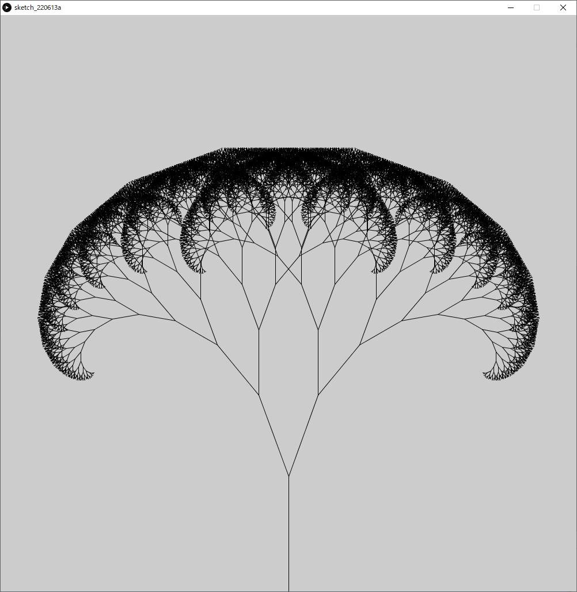
1. setup()を記述
- draw()は今回不要
- スクリーンサイズ：1000×1000
下の答えを見る前にやってみましょう．
xxxxxxxxxxvoid setup(){ size(1000, 1000);}2. 再帰関数の定義
再帰関数の定義は，関数定義と同じ書式です． ブロック内の命令以外の枠だけ用意しましょう．
- 関数名：drawTree
- 仮引数：iLevel
- 返り値：なし
下の答えを見る前にやってみましょう．
xxxxxxxxxxvoid setup(){ size(1000, 1000);}void drawTree( int iLevel ){ }3. setup()から再帰関数を呼ぶ(使う)
setup()内で，作成した再帰関数drawTree()を呼びましょう．
- 引数：
10
xxxxxxxxxxvoid setup(){ size(1000, 1000); drawTree(10);}void drawTree( int iLevel ){ }4. 再帰の続行条件を設定する
関数drawTree()内で，再帰呼び出しを行いましょう．
- 引数：
iLevel-1
- 引数：
また，この再帰呼び出しを以下の条件の時にしか行わないようにしましょう．
- 仮引数
iLevelの値が0より大きいとき
- 仮引数
下の答えを見る前にやってみましょう．
xxxxxxxxxxvoid setup(){ size(1000, 1000); drawTree(10);}void drawTree( int iLevel ){ if( iLevel>0 ) { drawTree(iLevel-1); }}5. 最初の枝を描画する
sin,cos関数を使った線の回転
今回は座標変換よりこちらのほうがシンプルに書けるので，こちらを使います．
最初の枝の考え方
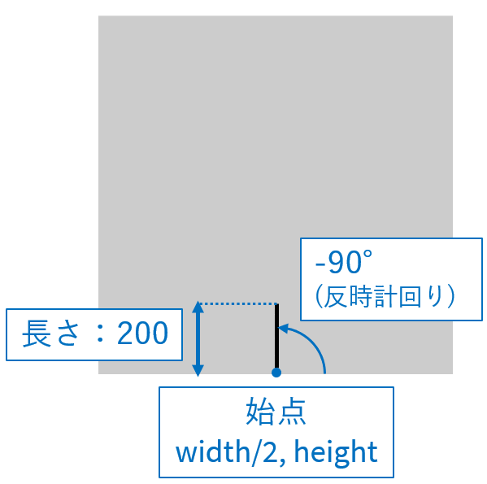
- 変数を作る
以下のコードを関数drawTree内に記述しましょう．
xxxxxxxxxx float fStartX = width/2; // 始点X float fStartY = height; // 始点Y float fLength = 200; // 長さ float fAngle = -90; // 角度- 終点の座標を考える．
以下のように終点座標の変数を用意し，上記の変数を使って座標値の計算式を書いてみましょう．
xxxxxxxxxxfloat fEndX = /* ここの部分を考えて書いてみましょう */; // 終点Xfloat fEndY = /* ここの部分を考えて書いてみましょう */; // 終点Y- 描画関数lineを記述
始点と終点の変数を使って，以下のように描画処理を記述しましょう．
xxxxxxxxxxline( fStartX, fStartY, fEndX, fEndY );以下の答えを見る前にやってみましょう．
xxxxxxxxxxvoid setup(){ size(1000, 1000); drawTree(10);}void drawTree( int iLevel ){ float fStartX = width/2; float fStartY = height; float fLength = 200; float fAngle = -90; float fEndX = fStartX+fLength*cos(radians(fAngle)); float fEndY = fStartY+fLength*sin(radians(fAngle)); line( fStartX, fStartY, fEndX, fEndY ); if( iLevel>0 ) { drawTree(iLevel-1); }}6. 2本目以降の枝描画を考える

- 前回の枝の終点が次の枝の始点になる
- 長さが0.75倍になる
- 角度が±20°
以下のように，変数を関数の仮引数へ変更する．
xxxxxxxxxxdrawTree( float fStartX, float fStartY, float fLength, float fAngle, int iLevel )これに伴い，以下の変数の宣言を消去する．
xxxxxxxxxx float fStartX = width/2; float fStartY = height; float fLength = 200; float fAngle = -90;変数の初期値として代入していた値を，setup関数内での関数呼び出しの引数にする．
xxxxxxxxxxdrawTree( width/2, height, 200, -90, 10);以上の手順により，以下のようになります． このままだとエラーで実行できないので，次の手順に進みましょう．
xxxxxxxxxxvoid setup(){ size(1000, 1000); drawTree( width/2, height, 200, -90, 10);}void drawTree( float fStartX, float fStartY, float fLength, float fAngle, int iLevel ){ float fEndX = fStartX+fLength*cos(radians(fAngle)); float fEndY = fStartY+fLength*sin(radians(fAngle)); line( fStartX, fStartY, fEndX, fEndY ); if( iLevel>0 ) { drawTree( iLevel-1 ); }}7. 再帰呼び出しの変更
以下の再帰呼び出しの部分も書き換えなければいけないが，どのように書き換えればいいか考えてみましょう．
xxxxxxxxxxdrawTree( iLevel-1 );ヒントとしては
再帰呼び出しにより，２本に枝分かれさせる
- 前回の枝の終点が，次の枝の始点になる．
- 長さが0.75倍になる．
- 角度が+20°の枝と，-20°の枝に分かれる．
下の答えを見る前にやってみましょう．
xxxxxxxxxxvoid setup(){ size(1000, 1000); // 角度:-90° // 長さ:200 // 始点X:スクリーンの半分 // 始点Y:スクリーン下端 // 再帰の深さ:10まで drawTree( width/2, height, 200, -90, 10);}/** 木の描画 params fStartX :枝の始点座標 fStartY : fLength :枝の長さ fAngle :枝の角度 iLevel ;再帰の深さ*/void drawTree( float fStartX, float fStartY, float fLength, float fAngle, int iLevel ){ float fEndX = fStartX+fLength*cos(radians(fAngle)); float fEndY = fStartY+fLength*sin(radians(fAngle)); line( fStartX, fStartY, fEndX, fEndY ); if( iLevel>0 ) { drawTree( fEndX, fEndY, fLength*0.75, fAngle+20, iLevel-1); drawTree( fEndX, fEndY, fLength*0.75, fAngle-20, iLevel-1); }}8. 形状の変化
以下の値を変えることで，形状の変化を操作できる． いろいろ試してみましょう．
最初の始点の座標値
- 初期値:
width/2, height
- 初期値:
最初の枝の角度
- 初期値:
90°
- 初期値:
枝の基本の長さ
- 初期値:
200
- 初期値:
再帰呼び出し毎にかける長さの倍率
- 初期値:
0.75
- 初期値:
再帰呼び出し毎に加算する角度
- 初期値:
+20°,-20°
- 初期値:
再帰の最大の深さ
- 初期値:
10
- 初期値:
例
xxxxxxxxxxvoid setup(){ size(1000, 1000); // 角度:-40° // 長さ:400 // 始点X:0 // 始点Y:スクリーン下端 // 再帰の深さ:12まで drawTree( 0, height, 400, -40, 12);}/** 木の描画 params fStartX :枝の始点座標 fStartY : fLength :枝の長さ fAngle :枝の角度 iLevel ;再帰の深さ*/void drawTree( float fStartX, float fStartY, float fLength, float fAngle, int iLevel ){ float fEndX = fStartX+fLength*cos(radians(fAngle)); float fEndY = fStartY+fLength*sin(radians(fAngle)); line( fStartX, fStartY, fEndX, fEndY ); if( iLevel>0 ) { drawTree( fEndX, fEndY, fLength*0.65, fAngle+10, iLevel-1); drawTree( fEndX, fEndY, fLength*0.6, fAngle-40, iLevel-1); }}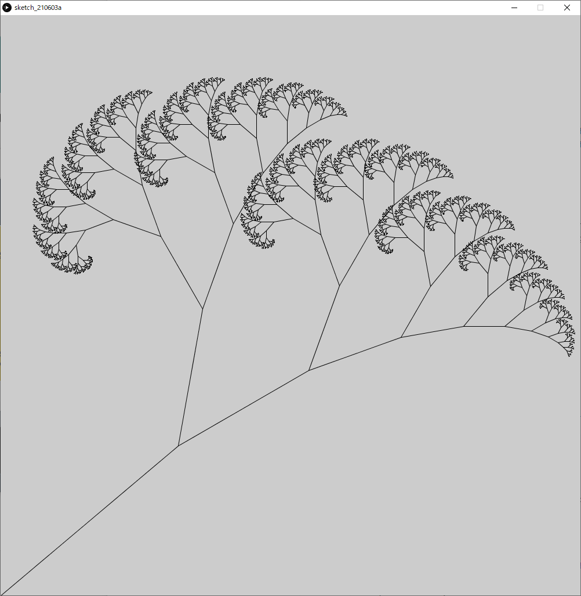
サンプル集
三角形
シェルピンスキーのギャスケットと同様の模様が生成される．
xxxxxxxxxxvoid setup(){ size(400,400); recursiveTriangle( width/2, height/1.7, width );}void draw(){}void recursiveTriangle( float fX, float fY, float fWidth ){ if( fWidth < 4 ) { return; } float fIncircleRadius = (fWidth/2.0) * tan(radians(30));// 三角形の内接円の半径 float fHeight = fWidth * sin(radians(60));// 三角形の高さ triangle( fX, fY-(fHeight-fIncircleRadius), fX+fWidth/2.0, fY+fIncircleRadius, fX-fWidth/2.0, fY+fIncircleRadius ); // 上，左下，右下に新たに描画. recursiveTriangle( fX, fY- fIncircleRadius, fWidth/2.0 ); recursiveTriangle( fX+fIncircleRadius*cos(radians(30)), fY+fIncircleRadius*sin(radians(30)), fWidth/2.0); recursiveTriangle( fX-fIncircleRadius*cos(radians(30)), fY+fIncircleRadius*sin(radians(30)), fWidth/2.0);}
黄金比
xxxxxxxxxxvoid setup(){ size(810,500); drawGoldenRect( height, 10 ); }void draw( ){}/** 黄金長方形を再帰的に描画する 黄金比 1:1.618 params fRectSize: 正方形のサイズ iLevel ; 再帰を行う深さ*/void drawGoldenRect( float fRectSize, int iLevel ){ stroke(0,0,0); rect( 0, 0, fRectSize, fRectSize );// 正方形 // 90°円弧 stroke(0,0,255); arc( fRectSize, fRectSize, 2*fRectSize, 2*fRectSize, radians(180), radians(270), PIE); if( iLevel > 0 ) { // 座標変換 translate(fRectSize*1.618,0); // X軸方向に正方形のサイズの1.618倍移動する rotate(radians(90)); // 90°回転 drawGoldenRect( fRectSize*0.618, iLevel-1 ); }}
ハノイの塔
以下のルールに従ってすべての円盤を右端の杭に移動させられれば完成．
- 3本の杭と，中央に穴の開いた大きさの異なる複数の円盤から構成される．
- 最初はすべての円盤が左端の杭に小さいものが上になるように順に積み重ねられている．
- 円盤を一回に一枚ずつどれかの杭に移動させることができるが，小さな円盤の上に大きな円盤を乗せることはできない．
xxxxxxxxxxint iDiscHeight = 20; // ディスクの高さ.int[] iDiscWidth = { 20, 40, 60, 80, 100 }; // 各ディスクの幅.int iWaitFrames = 6; // アニメーション開始までの待機フレーム数. int[][] iQueueDiscs = new int[3][5]; // アニメーション用現在のディスクの位置.int[][] iAnimMove = new int[100][2]; // ハノイの塔の動かす手順(回答).int iAnimMoveIdx; // 現在の手順番号.int iMoveCount; // 手順の数. void setup(){ size(600,400); colorMode( HSB, 5, 1, 1 ); frameRate(1); for( int iABC = 0; iABC<iQueueDiscs.length; iABC++ ) { for( int iDepth = 0; iDepth<iQueueDiscs[iABC].length; iDepth++ ) { iQueueDiscs[iABC][iDepth] = 0; } } iQueueDiscs[0][0] = 5; iQueueDiscs[0][1] = 4; iQueueDiscs[0][2] = 3; iQueueDiscs[0][3] = 2; iQueueDiscs[0][4] = 1; iAnimMoveIdx = 0; iMoveCount = 0; // 事前にハノイの塔の回答手順を計算. // iAnimMove[][]に手順を保存. hanoi( 5, 0, 1, 2 ); }void draw( ){ // スクリーンリフレッシュ fill(1,0,1); noStroke(); rectMode(CORNER); rect(0,0,width,height); // ハノイの塔を描画 // 現在の配列iQueueDiscs[][]を元に描画を行う. drawHanoi(); if( iWaitFrames > 0 ) { // しばらく動かさずに待つ. iWaitFrames--; } else if( iAnimMoveIdx < iMoveCount )// 手順がまだ残っていたら { // ディスクの移動 // 実際に配列iQueueDiscs[][]を操作 moveDisc( iAnimMove[iAnimMoveIdx][0], iAnimMove[iAnimMoveIdx][1] ); // 手順をすすめる. iAnimMoveIdx++; }}/** ハノイの塔再帰呼び出し関数 params iDiscSizeMove: 動かすディスクサイズ(1~5) iFrom: 移動元 左:0, 中:1, 右:2 iWork: 中継地 iDest: 目的地*/int hanoi( int iDiscSizeMove, int iFrom, int iWork, int iDest ){ // ディスクをiFromからiDest経由でiWorkへ移動させる if(iDiscSizeMove>=2) { hanoi(iDiscSizeMove-1, iFrom, iDest, iWork ); } // 手順確定 // ディスクをiFromからiDestへ移動させる iAnimMove[iMoveCount][0]= iFrom; iAnimMove[iMoveCount][1]= iDest; iMoveCount++; // Move n-1 desks from "work" to "dest" via "from". // ディスクをiWorkからiFrom経由でiDestへ移動させる if(iDiscSizeMove>=2) { hanoi(iDiscSizeMove-1, iWork, iFrom, iDest); } return iMoveCount;}void drawHanoi(){ translate( width/4, height/1.5 ); rectMode(CENTER); for( int iABC = 0; iABC<iQueueDiscs.length; iABC++ ) { stroke(0,0,0); strokeWeight(4); line( 0, -iDiscHeight*iDiscWidth.length, 0, iDiscHeight/2-2 ); for( int iDepth = 0; iDepth<iQueueDiscs[iABC].length; iDepth++ ) { int iDiscSize = iQueueDiscs[iABC][iDepth]; if( iDiscSize > 0 ) { fill(iDiscSize,1,1); stroke(0,0,0); strokeWeight(2); rect( 0, 0-iDepth*iDiscHeight, iDiscWidth[iDiscSize-1], iDiscHeight ); } } translate(width/4,0); } }void moveDisc( int iABCfrom, int iABCto ){ int iDiscSizeMoved = 0; // 動かすディスクを取り外す. int iDepthFrom = iQueueDiscs[iABCfrom].length-1; while( iDepthFrom>=0 ) { if( iQueueDiscs[iABCfrom][iDepthFrom] > 0 ) { iDiscSizeMoved = iQueueDiscs[iABCfrom][iDepthFrom]; iQueueDiscs[iABCfrom][iDepthFrom] = 0; break; } else { iDepthFrom--; } } // ディスクを置く int iDepthTo = iQueueDiscs[iABCto].length-1; while( iDepthTo>=0 ) { if( iQueueDiscs[iABCto][iDepthTo] > 0 ) { break; } else { iDepthTo--; } } iQueueDiscs[iABCto][iDepthTo+1] = iDiscSizeMoved; for( int iABC = 0; iABC<iQueueDiscs.length; iABC++ ) { for( int iDepth = 0; iDepth<iQueueDiscs[iABC].length; iDepth++ ) { print( iQueueDiscs[iABC][iDepth] + ", "); } println(""); } println("");}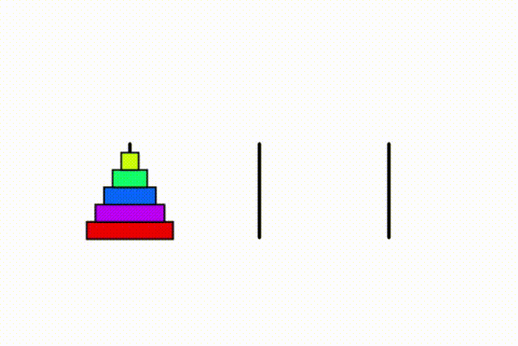
矩形の再帰的分割描画
xxxxxxxxxxfinal int RECURSIVE_MAX = 10; // 再帰の最大の深さfinal float DIVIDE_RANGE = 0.6; // 分割の振れ幅(0~1)final int OFS_X = 10;final int OFS_Y = 10; void setup(){ size(600, 600); background(255); noFill(); drawRectDivided( OFS_X, OFS_Y, width-2*OFS_X, height-2*OFS_Y, RECURSIVE_MAX );}// 矩形を分割しながら再帰的に描画void drawRectDivided(float iX, float iY, float fWidth, float fHeight, int iLevel ){ rect( iX, iY, fWidth, fHeight); if (iLevel>0) { if (fWidth>fHeight) { //幅が高さよりも大きい、または幅と高さが等しい場合 // 左右に二つに割る // 割った後の左の矩形の幅 float fWidthLRect = fWidth*random( ( 1 - DIVIDE_RANGE )/2.0, 1 - ( 1 - DIVIDE_RANGE )/2.0 ); drawRectDivided(iX, iY, fWidthLRect, fHeight, iLevel-1); //左側の矩形 drawRectDivided(iX+fWidthLRect, iY, fWidth-fWidthLRect, fHeight, iLevel-1); //右側の矩形 } else { //幅が高さよりも小さい場合 // 上下に二つに割る // 割った後の上の矩形の高さ float fHeightUpper = fHeight*random( ( 1 - DIVIDE_RANGE )/2.0, 1 - ( 1 - DIVIDE_RANGE )/2.0 ); drawRectDivided(iX, iY, fWidth, fHeightUpper, iLevel-1); //上側の矩形 drawRectDivided(iX, iY+fHeightUpper, fWidth, fHeight-fHeightUpper, iLevel-1); //下側の矩形 } }}
マンデルブロ集合の描画
フラクタル図形の一種
xxxxxxxxxxfinal float DRAW_OFS_X = -0.7; // 描く領域のオフセットXfinal float DRAW_OFS_Y = 0; // 描く領域のオフセットYfinal float DRAW_SCALE = 1.4; // 描く領域のスケール final int RECURSIVE_MAX = 50; // 繰り返し上限回数final float DRAW_SIZE = 4; // 描く領域の一辺の長さ void setup(){ size(600,600); colorMode(HSB,RECURSIVE_MAX,1,1); background(0,0,0); // マンデルブロ集合の描画 for (int iPixelX = 0; iPixelX < width; iPixelX++) // x（実部）方向のループ { float fCReal = iPixelX * DRAW_SIZE/( width*DRAW_SCALE) - DRAW_SIZE/(2*DRAW_SCALE) + DRAW_OFS_X; // 定数Cの実部 for (int iPixelY = 0; iPixelY < height; iPixelY++) // y（虚部）方向のループ { float fCImaginary = iPixelY * DRAW_SIZE/( height*DRAW_SCALE) - DRAW_SIZE/(2*DRAW_SCALE) + DRAW_OFS_Y; // 定数Cの虚部 drawFractal( 0, 0, fCReal, fCImaginary, iPixelX, iPixelY, RECURSIVE_MAX ) ; } }}/** フラクタル図形の描画 内部でZ^2+Cの計算を行い，絶対値が4を超えたピクセルを描画する. */void drawFractal( float fZReal, float fZImaginary, float fCReal, float fCImaginary, int iPixelX, int iPixelY, int iLevel ){ float fZRealNew = pow(fZReal,2) - pow(fZImaginary,2) + fCReal; // z^2+Cの計算（実部） float fZImaginaryNew = 2 * fZReal * fZImaginary + fCImaginary; // z^2+Cの計算（虚部） if( pow(fZRealNew,2)+pow(fZImaginaryNew,2) > 4 ) // もし絶対値が2を（絶対値の2乗が4を）超えていたら { stroke( iLevel, 1, 1 ); // 再帰の回数を色相へ point(iPixelX,iPixelY); // (iPixelX,iPixelY)の位置のピクセルをで塗る return; // 再帰終了 } else if( iLevel > 0 ) { drawFractal( fZRealNew, fZImaginaryNew, fCReal, fCImaginary, iPixelX, iPixelY, iLevel-1 ); }}
ジュリア集合の描画
フラクタル図形の一種
xxxxxxxxxxfinal float DRAW_OFS_X = 0; // 描く領域のオフセットXfinal float DRAW_OFS_Y = 0; // 描く領域のオフセットYfinal float DRAW_SCALE = 1.4; // 描く領域のスケール final int RECURSIVE_MAX = 200; // 繰り返し上限回数final float DRAW_SIZE = 4; // 描く領域の一辺の長さfinal float C_REAL = -0.3; // 定数Cの実部final float C_IMAGINARY = -0.63; // 定数Cの虚部 void setup(){ size(600,600); colorMode(HSB,RECURSIVE_MAX,1,1); background(0,0,0); // ジュリア集合の描画 for (int iPixelX = 0; iPixelX < width; iPixelX++) // x（実部）方向のループ { float fZReal = iPixelX * DRAW_SIZE/( width*DRAW_SCALE ) - DRAW_SIZE/( 2*DRAW_SCALE ) + DRAW_OFS_X; // 変数Zの実部 for (int iPixelY = 0; iPixelY < height; iPixelY++) // y（虚部）方向のループ { float fZImaginary = iPixelY * DRAW_SIZE/( height*DRAW_SCALE ) - DRAW_SIZE/( 2*DRAW_SCALE ) + DRAW_OFS_Y; // 変数Zの虚部 drawFractal( fZReal, fZImaginary, C_REAL, C_IMAGINARY, iPixelX, iPixelY, RECURSIVE_MAX ) ; } } }/** フラクタル図形の描画 内部でZ^2+Cの計算を行い，絶対値が4を超えたピクセルを描画する. */void drawFractal( float fZReal, float fZImaginary, float fCReal, float fCImaginary, int iPixelX, int iPixelY, int iLevel ){ float fZRealNew = pow(fZReal,2) - pow(fZImaginary,2) + fCReal; // z^2+Cの計算（実部） float fZImaginaryNew = 2 * fZReal * fZImaginary + fCImaginary; // z^2+Cの計算（虚部） if( pow(fZRealNew,2)+pow(fZImaginaryNew,2) > 4 ) // もし絶対値が2を（絶対値の2乗が4を）超えていたら { stroke( iLevel, 1, 1 ); // 再帰の回数を色相へ point(iPixelX,iPixelY); // (iPixelX,iPixelY)の位置のピクセルをで塗る return; // 再帰終了 } else if( iLevel > 0 ) { drawFractal( fZRealNew, fZImaginaryNew, fCReal, fCImaginary, iPixelX, iPixelY, iLevel-1 ); }}
入力
マウス
mouseX, mouseY
- システム変数
- 現在のマウスポインタの座標値が格納されている．
例
xxxxxxxxxxvoid setup(){ size(400, 400);}void draw(){ background(126); ellipse(mouseX, mouseY, 33, 33);}
https://processing.org/reference/mouseX.html https://processing.org/reference/mouseY.html
pmouseX, pmouseY
直前の描画フレームにおけるマウスポインタの座標値が格納されている．
マウスポインタを素早く動かすと，
mouseX,mouseYの値との差が大きくなる- マウスポインタの移動の速さと方向を取得できる
例
xxxxxxxxxxvoid setup({ size(400,400); strokeWeight(8); frameRate(20);}void draw(){ background(204); line(mouseX, mouseY, pmouseX, pmouseY);}
https://processing.org/reference/pmouseX.html https://processing.org/reference/pmouseY.html
mousePressed
マウスボタンが押されているか，押されていないかの情報が格納されている．
true: いずれかのボタンが押されているfalse: どのボタンも押されていない
例
xxxxxxxxxxvoid draw(){ if (mousePressed == true) { fill(0); } else { fill(255); } rect(25, 25, 50, 50);}
https://processing.org/reference/mousePressed.html
mouseButton
マウスボタンが押されると，
LEFT,RIGHT,CENTERのいずれかの値が格納される．mousePressedと組み合わせて使用することが多い- 格納された値はマウスの状態が変化するまで残るため
例
xxxxxxxxxxvoid setup(){ size(200, 100);}void draw(){ if( mousePressed == true && mouseButton == LEFT ) { fill(0); } else { fill(255); } rect(20, 25, 50, 50); // 左 if( mousePressed == true && mouseButton == CENTER ) { fill(0); } else { fill(255); } rect(75, 25, 50, 50); // 中 if( mousePressed == true && mouseButton == RIGHT ) { fill(0); } else { fill(255); } rect(130, 25, 50, 50); // 右}
https://processing.org/reference/mouseButton.html
https://processing.org/tutorials/interactivity/
キーボード
keyPressed
キーが押されているか，押されていないかの情報が格納されている．
true: いずれかのボタンが押されているfalse: どのキーも押されていない
key
- 直前に使用されたキーの値(英数字)が格納される．
- 英数字以外の特別なキー（矢印，Alt, Ctrl, Shift など ）が使用された場合，
CODEDの値が格納される．
例
xxxxxxxxxxvoid setup(){ textSize(60);}void draw(){ background(0); text(key, 20, 75);}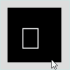
keyCode
英数字以外の特別なキーが押されると，押されたキーの値が格納される．
UP,DOWN,LEFT,RIGHT,ALT,CONTROL,SHIFTなど
通常，
if( Key == CODED )を組み合わせて使用することが多い．
例
xxxxxxxxxxint iX = 100;int iY = 100;char cKey;void setup(){ size(200,200); textSize(60);}void draw(){ background(0); if( keyPressed == true && key == CODED ) { switch( keyCode ) { case LEFT: cKey = '<'; iX--; break; case RIGHT: cKey = '>'; iX++; break; case UP: cKey = '^'; iY--; break; case DOWN: cKey = 'v'; iY++; break; } } else { cKey = 'o'; } text(cKey, iX, iY);}
ライブラリの使用
ライブラリ（Libraries）とは
便利なプログラムの集まりをまとめ，他のプログラムで再利用できるようにしたもの
Processingのライブラリは以下の二種類に分けられる
Core Libraries
- Processingに標準でインストールされているライブラリ
- インポートすればすぐに使用できる．
- PDF Export, Network, SVG Export, Serial, DXF Export, Video, Sound, Hardware I/O
Contributed Libraries
- Processingに標準ではインストールされていない外部ライブラリ
- インポートの前に，別途インストールが必要
https://processing.org/reference/libraries/
インストールとインポート
Contributed Librariesを使用するには，事前にインストールする必要があります． Core Librariesを使用する際は，「1.ライブラリのインストール」の手順はスキップできます．
ライブラリのインストール
「スケッチ 」> 「ライブラリをインポート」 > 「ライブラリを追加」
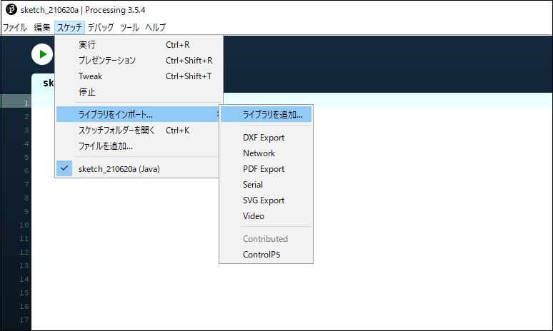
「Contribution Manager」から，ライブラリを検索

インストールしたいライブラリを選択し，インストール開始

ライブラリのインポート
「スケッチ」メニュー ＞ 「ライブラリをインポート」 ＞ インポートしたいライブラリを選択
上記を選択すると，プログラムの一行目に
import ライブラリ名.*;の一文が追加される．
https://processing.org/reference/libraries/
GUI
概要
- Graphical User Interface
- コンピュータの画面上に表示されるグラフィックスを元に操作を行うインターフェースのこと
- 基本の入力（マウスやキーボード）で実現するのは難しいので，ライブラリを頼る
必要なライブラリ
数種類あるのだが，ここでは日本語ドキュメントが豊富なControlP5を使用する．
田所淳（たどころあつし）先生のドキュメントが有名 yoppa org
ライブラリ名：ControlP5
- Contributed libraries（インストールの必要あり）
導入方法
クラスの概念を理解していないと難しいので，完全に理解する必要はありません．
ControlP5を宣言 GUIのすべてのパーツを管理するオブジェクト
ControlP5 cp5;GUIパーツを宣言 パーツの種類によって宣言の型が異なる
Slider slider; // スライダーSlider2D slider2d; // 2DスライダーToggle toggle; // トグルスイッチColorWheel colowWheel; // カラーホイール
setup関数内で，ControlP5を初期化
cp5 = new ControlP5(this);setup関数内で，ControlP5にGUIパーツを追加 パーツの種類によって書式が異なる
xxxxxxxxxxslider = cp5.addSlider("ID") // スライダー .setRange(0, 255) //値の範囲 .setValue(0) //初期値 .setPosition(50, 50) //表示位置 .setSize(200, 24); //スライダの大きさxxxxxxxxxxslider2d = cp5.addSlider2D("ID") // スライダー2D .setMinMax(0, 5, 255, 250) //値の範囲 .setValue(0,250) //初期値 .setPosition(50, 50) //位置 .setSize(100, 100); //スライダの大きさ }xxxxxxxxxxtoggle = cp5.addToggle("ANIM") // トグルスイッチ .setPosition(20, 20) //位置 .setSize(24, 24); //大きさxxxxxxxxxxcolWheel = cp5.addColorWheel("RECT COLOR") // カラーホイール .setPosition(10, 10) //位置 .setRGB(color(0,0,0)); //初期値
GUIパーツ別の実装方法
スライダー
１つのパラメータを制御できる．
例: 矩形の色を変更
xxxxxxxxxximport controlP5.*; // ControlP5をcp5として宣言ControlP5 cp5; // スライダーを宣言Slider sliderRectColor; // 矩形の色 void setup(){ size(500, 500); // ControlP5を初期化 cp5 = new ControlP5(this); // スライダーを追加 sliderRectColor = cp5.addSlider("RECT COLOR") .setRange(0, 255) //0~255の間 .setValue(0) //初期値 .setPosition(50, 50)//位置 .setSize(200, 24); //スライダの大きさ } void draw(){ background(255); // スライダーの値を取得し，fill値を設定 fill(sliderRectColor.getValue()); rect(125, 125, 250, 250);}
例: 矩形の色と大きさを変更
xxxxxxxxxximport controlP5.*; // ControlP5をcp5として宣言ControlP5 cp5; // スライダーを宣言Slider sliderRectColor; // 矩形の色Slider sliderRectSize; // 矩形の大きさ void setup(){ size(500, 500); // ControlP5を初期化 cp5 = new ControlP5(this); // スライダーを追加 sliderRectColor = cp5.addSlider("RECT COLOR") .setRange(0, 255) //0~255の間 .setValue(0) //初期値 .setPosition(50, 50)//位置 .setSize(200, 24); //スライダの大きさ sliderRectSize = cp5.addSlider("RECT SIZE") .setRange(5, 250) //5~250の間 .setValue(250) //初期値 .setPosition(50, 80)//位置 .setSize(200, 24); //スライダの大きさ } void draw(){ background(255); rectMode(CENTER); // スライダーの値を取得し，fill値を設定 fill(sliderRectColor.getValue()); // スライダーの値を取得し，矩形の大きさを設定 rect(width/2, height/2, sliderRectSize.getValue(), sliderRectSize.getValue());}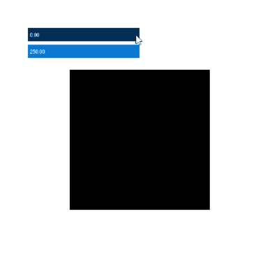
2Dスライダー
２つのパラメータを制御できる．
例: 矩形の色と大きさを変更
xxxxxxxxxximport controlP5.*; // ControlP5をcp5として宣言ControlP5 cp5; // 2Dスライダーを宣言Slider2D sliderRect; // 矩形の色と大きさ void setup(){ size(500, 500); // ControlP5を初期化 cp5 = new ControlP5(this); // スライダーを追加 sliderRect = cp5.addSlider2D("RECT COLOR SIZE") .setMinMax(0, 5, 255, 250) // 0~255の間及び5~250の間 .setValue(0,250) //初期値 .setPosition(50, 50) //位置 .setSize(100, 100); //スライダの大きさ } void draw(){ background(255); rectMode(CENTER); // スライダーの値を取得し，fill値を設定 fill(sliderRect.getArrayValue()[0]); // スライダーの値を取得し，矩形の大きさを設定 rect(width/1.5, height/2, sliderRect.getArrayValue()[1], sliderRect.getArrayValue()[1]);}
トグルスイッチ（Toggle）
スイッチのように，オンかオフかの２値を取得できる．
例: 矩形の移動アニメーションのオンオフ
xxxxxxxxxximport controlP5.*; // ControlP5をcp5として宣言ControlP5 cp5; // トグルボタンを宣言Toggle toggleAnim; // アニメーションのon,off int iPosX; void setup(){ size( 400, 400 ); colorMode( RGB, 1, 1, 1 ); noStroke(); frameRate( 20 ); // ControlP5を初期化 cp5 = new ControlP5(this); // トグルスイッチを追加 toggleAnim = cp5.addToggle("ANIM") .setPosition(20, 20)//位置 .setSize(24, 24); //大きさ iPosX = 0; // iPosXの初期化}void draw(){ fill( 1, 1, 1 ); rect( 0, 0, width, height ); // もしトグルスイッチがONだったら if(toggleAnim.getState() ) { iPosX += 4; } if( iPosX > width ) // もしX座標値がスクリーンの外なら { iPosX = 0; // X座標値を0に戻す } fill( 0, 0, 0 ); rect( iPosX, height/2-10, 20, 20 );}
カラーホイール(ColorWheel)
2Dスライダーに近い感覚でカラー値をコントロールできる．
例:
xxxxxxxxxximport controlP5.*; // ControlP5をcp5として宣言ControlP5 cp5; // カラーホイールを宣言ColorWheel colWheelRect; // 矩形の色 void setup(){ size(400, 400); // ControlP5を初期化 cp5 = new ControlP5(this); // カラーホイールを追加 colWheelRect = cp5.addColorWheel("RECT COLOR") .setPosition(10, 10) //位置 .setRGB(color(0,0,0)); //初期値 } void draw(){ background(155); // カラーホイールの値を取得し，fill値を設定 fill(colWheelRect.getRGB()); rect(width/1.8, height/1.8, 150, 150);}
キャプチャー
概要
コンピューターに接続したキャプチャーデバイス（カメラ）からビデオデータを取得し，ムービーを再生する．
必要なライブラリ
ライブラリ名：Video
- Core libraries（インストールの必要なし）
対応デバイス
USB Cameras, IEEE 1394 (Firewire) Cameras
導入方法
キャプチャーデバイス（USBカメラ）をコンピューターに接続する．
- コンピュータ内蔵カメラの場合は不要
以下のプログラムをProcessingで実行
xxxxxxxxxximport processing.video.*; Capture cam; void setup(){ size(640, 480); String[] cameras = Capture.list(); if (cameras.length == 0) { println("There are no cameras available for capture."); exit(); } else { println("Available cameras:"); for (int i = 0; i < cameras.length; i++) { print( "cameras["+i+"]: " ); println(cameras[i]); } // The camera can be initialized directly using an // element from the array returned by list(): cam = new Capture(this, cameras[0]); cam.start(); } } void draw(){ if (cam.available() == true) { cam.read(); } image(cam, 0, 0); // The following does the same, and is faster when just drawing the image // without any additional resizing, transformations, or tint. //set(0, 0, cam);}- 映像が表示されなかった場合，以下のコンソールの表示を確認
使用したいカメラの要素番号（
cameras[要素番号]）を確認する．

- 使用したいカメラの要素番号をキャプチャー初期化時に指定するよう，プログラムを書き換える．
このサンプルの場合，HD Pro Webcam C920を使いたいので，
cameras[1]
- 実行して正しくキャプチャーできているか確認する
https://processing.org/reference/libraries/video/Capture.html
例
カメラ画像のピクセル情報を取得してモザイク状に描画する．
xxxxxxxxxximport processing.video.*; Capture cam; void setup(){ size(640, 480); String[] cameras = Capture.list(); if (cameras.length == 0) { println("There are no cameras available for capture."); exit(); } else { println("Available cameras:"); for (int i = 0; i < cameras.length; i++) { print( "cameras["+i+"]: " ); println(cameras[i]); } // The camera can be initialized directly using an // element from the array returned by list(): cam = new Capture(this, cameras[1]); cam.start(); } smooth(); noStroke();} void draw(){ if (cam.available() == true) { cam.read(); background(0); cam.loadPixels(); //カメラ画像のpixel情報をロード int iDiameter = 20; //円の直径 // カメラの映像から、円の直径の間隔ごとに色情報を取得し、その色で円を描画 for(int iPixelY = iDiameter / 2 ; iPixelY < height ; iPixelY += iDiameter) { for(int iPixelX = iDiameter / 2 ; iPixelX < width ; iPixelX += iDiameter) { fill(cam.pixels[iPixelY*width + iPixelX]); ellipse(iPixelX, iPixelY, iDiameter, iDiameter); } } }}
クラス
クラスとは
プログラムにおいて，現実世界の物体（オブジェクト）を抽象化した設計図のようなもの
なぜクラスを学ぶのか
現在のソフトウェア開発のメインストリーム
- オブジェクト指向プログラミング
- C++, C#, Java, Delphi, Smalltalkなど
Processingに限らず，ライブラリの多くはクラスを使用している
- ControlP5, Capture はクラスである
プログラミングで，より高度なことを洗練された方法で行いたいなら推奨
- クラスを使わなければ，プログラムがより複雑に見づらくなっていく
オブジェクト指向プログラミング
object-oriented programming (OOP)
概念
「犬」を対象とした例
（現実世界における）オブジェクトのひな型を定義する．（抽象化）
状態
- 毛並み
- 耳の形
- 尻尾の形
振る舞い
- 走る
- 吠える
- 食べる
- 寝る

インスタンスを作成（具象化）する．
状態
- 毛並み：イエロー，クリーム，ブラウン，ブラック
- 耳の形：立ち耳，垂れ耳，折れ耳
- 尻尾の形：巻き尾，立ち尾，垂れ尾，リス尾，ボブ

インスタンスの振る舞いを実行する．
振る舞い
- 走る
- 吠える
- 食べる
- 寝る

キーワード
以下がクラスを習得するのに理解しなければならないキーワード．
クラス
Classフィールド
Fieldメソッド
Method- コンストラクタ
Constructor
- コンストラクタ
インスタンス
Instance
概念とキーワードの対応
各キーワードは，前述の概念と下記のように対応している．
クラス
Class：オブジェクトのひな型フィールド
Field：状態メソッド
Method：振る舞い- コンストラクタ
Constructor：状態の初期化
- コンストラクタ
インスタンス
Instance：具象化されたオブジェクト
クラス「人」の例
クラス「人」を定義

フィールド
- 身長
- 体重
- 性別
- 血液型．．．
メソッド
- 喜ぶ，褒める，照れる，指さす，書く．．．
インスタンスを作成
インスタンスは，具象化された特定の人を指す.

フィールド
- 身長: 168cm
- 体重: 62kg
- 性別: 男
- 血液型: A
インスタンスのメソッドを実行
メインプログラムから任意のタイミングでメソッドを実行する．
メソッド
- 喜ぶ，褒める，照れる，指さす，書く．．．

https://processing.org/tutorials/objects/ https://docs.oracle.com/javase/tutorial/java/concepts/index.html
class
概要
クラスを宣言，定義するためのキーワード．
クラスは以下のもので構成される
フィールド
- データ（変数や配列）
メソッド
- 関数
- コンストラクタ（初期化用関数）
クラスを使うための手順
- クラスの定義を行う
- クラスのインスタンスを作成する．
- インスタンスを初期化する．
- インスタンスのメソッドを呼ぶ（Call）
クラスの定義
書式（全体）
クラス名は一文字目を必ず大文字に
xxxxxxxxxxclass クラス名{ /* フィールドの変数を宣言 */ 変数の型 変数名; /* コンストラクタの定義 */ クラス名( 仮引数 ) { // すべてのフィールドの変数を初期化する命令 } /* メソッドの定義 */ void メソッド名( 仮引数 ) { // (命令)文 // フィールドの変数にアクセス可 } 返り値の型 メソッド名( 仮引数 ) { // (命令)文 // フィールドの変数にアクセス可 return 返り値; }}フィールドの変数を宣言
- 従来の変数や配列の宣言文と同様
- 複数の変数を宣言可能
xxxxxxxxxx変数の型 変数名;コンストラクタの定義
- クラス名をそのまま関数名として関数を定義する．
- 関数の返り値（voidなど）の記述を行わない．
- フィールドの全ての変数を初期化する命令文を記述する．
- 仮引数は任意の数(0個もOK)を指定できる．
xxxxxxxxxxクラス名( 仮引数 ){ // すべてのフィールドの変数を初期化する命令}メソッドの定義
- 従来の関数の定義と同様
- フィールドの変数にアクセスできる．
- 仮引数は任意の数(0個もOK)を指定できる．
- メソッドの複数定義可
xxxxxxxxxxvoid メソッド名( 仮引数 ){ // (命令)文 // フィールドの変数にアクセス可 }
返り値の型 メソッド名( 仮引数 ){ // (命令)文 // フィールドの変数にアクセス可 return 返り値;}「Car」クラスの例
定義全体
xxxxxxxxxxclass Car{ float m_fPosX; // 座標値X float m_fPosY; // 座標値Y float m_fSpeedX; // スピードX int m_iColorHue;// 色(Hue) // コンストラクタ（初期化） Car ( int iColorHue ) { m_fPosX = width/2; m_fPosY = height/2; m_iColorHue = iColorHue; m_fSpeedX = 1; } // 車を表示する void display() { pushMatrix(); translate( m_fPosX, m_fPosY ); // body fill( m_iColorHue, 255, 255 ); rect( 0, 0, 40, 20 ); // tires fill( 0, 0, 20 ); circle( 5, 20, 10 ); circle( 35, 20, 10 ); popMatrix(); } // 車を進める void drive() { m_fPosX += m_fSpeedX; if( m_fPosX > width ) { m_fPosX = 0; } }} フィールド
- 従来の変数や配列の定義と同様
- この例ではフィールドを通常の変数と区別しやすくするため，初めに
m_を付けている．
xxxxxxxxxx float m_fPosX; // 座標値X float m_fPosY; // 座標値Y float m_fSpeedX; // スピードX int m_iColorHue;// 色(Hue)メソッド（コンストラクタ）
クラス名をそのまま関数名として関数を定義する．
関数の返り値（voidなど）の記述を行わない．
フィールドの全ての変数を初期化する必要がある．
仮引数は任意の数(0個もOK)を指定できる．
- この例では
int iColorHueの１つ
- この例では
xxxxxxxxxx // コンストラクタ（初期化） Car ( int iColorHue ) { m_fPosX = width/2; m_fPosY = height/2; m_iColorHue = iColorHue; m_fSpeedX = 1; }メソッド
- フィールドの変数にアクセスできる．
- 仮引数は任意の数(0個もOK)を指定できる．
xxxxxxxxxx // 車を表示する void display() { pushMatrix(); translate( m_fPosX, m_fPosY ); // body fill( m_iColorHue, 255, 255 ); rect( 0, 0, 40, 20 ); // tires fill( 0, 0, 20 ); circle( 5, 20, 10 ); circle( 35, 20, 10 ); popMatrix(); } // 車を進める void drive() { m_fPosX += m_fSpeedX; if( m_fPosX > width ) { m_fPosX = 0; } }クラスのインスタンスを作成する
クラスを使うには，クラスのインスタンスを作成し，さらに初期化する必要がある．
- クラスの定義はあくまでひな型の作成
インスタンスの作成
基本的には関数ブロックの外（プログラムの最初）に記述する．
書式
xxxxxxxxxxクラス名 インスタンスの名前;xxxxxxxxxxクラス名[] インスタンス配列の名前 = new クラス名[要素数]; // １次元配列に複数のインスタンスを作成インスタンス名は任意の名前を付けることができる
- 変数名の時と同様
クラス名が，変数宣言時における型と同じような働きをしていることに注目
この手順により，コンピュータのメモリ上にインスタンス毎のデータ（フィールドの変数）が保持される．
- インスタンス毎に固有のデータを持つことになる．
「Car」クラスの例
xxxxxxxxxxCar myCar; // Carインスタンスを宣言xxxxxxxxxxCar[] myCars = new Car[8]; // Carインスタンス配列を宣言（8つ）インスタンスの初期化
基本的にはsetup関数内に記述する．
書式
xxxxxxxxxxインスタンス名 = new クラス名( 引数 );インスタンスに対し，コンストラクタが実行される．
- コンストラクタ内でフィールドの変数が初期化される．
引数は，コンストラクタの仮引数に渡される．
- 引数の数は，コンストラクタの仮引数の数に合わせる必要がある．
- 引数がフィールドの初期値に今日を与える．
「Car」クラスの例
xxxxxxxxxxmyCar = new Car( 240 ); // マイカーを初期化- 引数の240は，車の色（色相）の指定を行っている．
インスタンスのメソッドを呼ぶ
基本的にはdraw関数内に記述する．
書式
xxxxxxxxxxインスタンス名.メソッド名( 引数 ); // メソッドを実行
/* 式に */ インスタンス名.メソッド名( 引数 ) /* 組み込む */ // メソッド(返り値あり)を実行- インスタンス名に続き'.'（ドット）+メソッド名( 引数 ) というように記述する．
- インスタンスに対し，メソッドが実行される．
- 返り値のあるメソッドは，関数の時と同様に式に組み込むことができる．
「Car」クラスの例
xxxxxxxxxx// マイカーのメソッドを呼ぶ myCar.drive(); // 車を進めるmyCar.display();// 車を描画するクラスの使用の例
「Car」クラスの例
xxxxxxxxxx// マイカー（インスタンス）を作成Car myCar; void setup(){ size(400,200); colorMode(HSB); // マイカーを初期化 myCar = new Car( 240 ); // 240:色相} void draw(){ background(255); // マイカーのメソッドを呼ぶ myCar.drive(); // 車を進める myCar.display();// 車を描画する} /** Carクラスの定義 */class Car{ // フィールド float m_fPosX; // 座標値X float m_fPosY; // 座標値Y float m_fSpeedX; // スピードX int m_iColorHue;// 色(Hue) // コンストラクタ（初期化） Car( int iColorHue ) { m_fPosX = width/2; m_fPosY = height/2; m_iColorHue = iColorHue; m_fSpeedX = 1; } /* 以下，メソッド */ // 車を表示する void display() { pushMatrix(); translate( m_fPosX, m_fPosY ); // body fill( m_iColorHue, 255, 255 ); rect( 0, 0, 40, 20 ); // tires fill( 0, 0, 20 ); circle( 5, 20, 10 ); circle( 35, 20, 10 ); popMatrix(); } // 車を進める void drive() { m_fPosX += m_fSpeedX; if( m_fPosX > width ) { m_fPosX = 0; } }} 
演習
クラスファイルの分割
クラスを用いるとさらにプログラムが長くなる．
クラス毎に，クラス定義を別のpdeファイルへ分割して記述すると，プログラムが見やすくなる．
- クラス名をそのままファイル名とすると分かりやすい．
「Car」クラスの例
- （分割する前の）スケッチを保存する

- タブの横の「▽」をクリック

- 新規タブを選択

- 新しく作成するクラス用のファイル名を入力 この例では「Car」
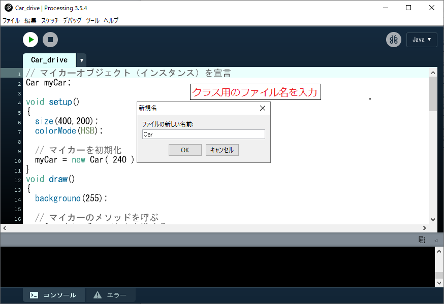
- 新しく作った空のタブが開かれる

- ここにクラス定義の記述を追加する． Car_drive.pde(メインプログラム)に元々記述していたクラス定義は削除する．

ファイル分割後のディレクトリは以下のようになる
スケッチフォルダ名「Car_drive」と同名の「Car_drive.pde」がメインプログラムファイルとなる
- setup関数やdraw関数を記述する．
「Car.pde」がクラスファイル
- Carクラスのクラス定義を記述する．

オブジェクト指向プログラミングの利点
モジュール性（再利用性）
- クラス定義ファイルの流用
情報の隠蔽
メインプログラムから行えることが制限されている
- メソッドの使用（コール）のみ
- クラスのフィールドには直接アクセスできない
不具合の発見，修正の容易さ
- クラスの挙動に不具合があった場合，クラスファイルのみを調査すればよい
オブジェクト指向分析・設計
複数のクラスを用いた，より複雑なプログラムの設計を行う際は，オブジェクト指向的な設計能力が求められる． 実装（プログラミング）の前準備だが，重要な工程
クラスの設計
- 何をクラスにするのか
- 何をフィールドにするのか
- 何をメソッドにするか
重要な考え方，心構え
クラスの設計を行う際に重要な考え方，心構えは従来のエンジニア的な思考とは異なる．
- オブジェクト指向的にシステムの仕様をとらえる
- それをどのようにコードに落としていくかという方針を決定する
求められる資質
物事の構造や本質を見抜き，洞察する能力 > 旧来のエンジニアリング知識，コーディング能力
演習
概要
- Faceクラスを定義する．
- 4つのインスタンスを作成し，描画を行う．

1. setup関数を用意する
xxxxxxxxxxvoid setup(){ size(400,300);}2. Faceクラス定義の枠を作る
「Face」の一文字目は大文字であることに注意
下の答えを見ながらでいいので，書いてみましょう．
xxxxxxxxxxvoid setup(){ size(400,300);}class Face{}3. フィールドを宣言する
顔ごとに個性が現れるデータを変数として宣言する．
- 目の大きさ
- 目の間隔
- 目と口の距離
- 口の幅
下の答えから，正しい範囲をコピーしてプログラムに挿入しましょう．
xxxxxxxxxxvoid setup(){ size(400,300);}class Face{ float m_fEyeSize; // 目の大きさ float m_fEyeInterval; // 目の間隔 float m_fEyeToMouthDistance; // 目と口の距離 float m_fMouthWidth; // 口の幅}4. コンストラクタの枠を作成する
コンストラクタはフィールドを初期化するための特別なメソッド．
下の答えを見ながらでいいので，書いてみましょう．
xxxxxxxxxxvoid setup(){ size(400,300);}class Face{ float m_fEyeSize; // 目の大きさ float m_fEyeInterval; // 目の間隔 float m_fEyeToMouthDistance; // 目と口の距離 float m_fMouthWidth; // 口の幅 Face() { }}5. コンストラクタを定義する
コンストラクタの中でフィールドをランダム値で初期化します．
下の答えから，正しい範囲をコピーしてプログラムに挿入しましょう．
xxxxxxxxxxvoid setup(){ size(400,300);}class Face{ float m_fEyeSize; // 目の大きさ float m_fEyeInterval; // 目の間隔 float m_fEyeToMouthDistance; // 目と口の距離 float m_fMouthWidth; // 口の幅 Face() { m_fEyeSize = random( 2, 8 ); m_fEyeInterval = random( 16, 28 ); m_fEyeToMouthDistance = random( 20, 36 ); m_fMouthWidth = random( 8, 24 ); }}6. テスト用Faceインスタンスを作成する
テスト用なので「faceTest」という名前
下の答えを見ながらでいいので，書いてみましょう．
xxxxxxxxxxFace faceTest; // テスト用Faceインスタンスを作成
void setup(){ size(400,300);}class Face{ float m_fEyeSize; // 目の大きさ float m_fEyeInterval; // 目の間隔 float m_fEyeToMouthDistance; // 目と口の距離 float m_fMouthWidth; // 口の幅 Face() { m_fEyeSize = random( 2, 8 ); m_fEyeInterval = random( 16, 28 ); m_fEyeToMouthDistance = random( 20, 36 ); m_fMouthWidth = random( 8, 24 ); }}7. Faceインスタンスを初期化する
仮引数は無いので，引数の記述は必要無し
下の答えを見ながらでいいので，書いてみましょう．
xxxxxxxxxxFace faceTest; // テスト用Faceインスタンスを作成
void setup(){ size(400,300); faceTest = new Face(); // Faceインスタンスを初期化}class Face{ float m_fEyeSize; // 目の大きさ float m_fEyeInterval; // 目の間隔 float m_fEyeToMouthDistance; // 目と口の距離 float m_fMouthWidth; // 口の幅 Face() { m_fEyeSize = random( 4, 8 ); m_fEyeInterval = random( 16, 28 ); m_fEyeToMouthDistance = random( 16, 30 ); m_fMouthWidth = random( 8, 24 ); }}8. 描画のためのメソッドの枠を作成する
「display」という名前でFaceクラスにメソッドを定義する． ブロック内の命令は空のまま
下の答えを見ながらでいいので，書いてみましょう．
xxxxxxxxxxFace faceTest; // テスト用Faceインスタンスを作成 void setup(){ size(400,300); faceTest = new Face(); // Faceインスタンスを初期化}class Face{ float m_fEyeSize; // 目の大きさ float m_fEyeInterval; // 目の間隔 float m_fEyeToMouthDistance; // 目と口の距離 float m_fMouthWidth; // 口の幅 Face() { m_fEyeSize = random( 4, 8 ); m_fEyeInterval = random( 16, 28 ); m_fEyeToMouthDistance = random( 16, 30 ); m_fMouthWidth = random( 8, 24 ); } void display() { }}9. displayメソッドを使う
setup関数の中でテスト用インスタンスのメソッドを使ってみましょう． また，顔を画面中心に描画するために座標変換命令も追加します．
下の答えを見ながらでいいので，書いてみましょう．
xxxxxxxxxxFace faceTest; // テスト用Faceインスタンスを作成 void setup(){ size(400,300); faceTest = new Face(); // Faceインスタンスを初期化 translate(width/2,height/2); faceTest.display(); // Faceインスタンスの描画}class Face{ float m_fEyeSize; // 目の大きさ float m_fEyeInterval; // 目の間隔 float m_fEyeToMouthDistance; // 目と口の距離 float m_fMouthWidth; // 口の幅 Face() { m_fEyeSize = random( 4, 8 ); m_fEyeInterval = random( 16, 28 ); m_fEyeToMouthDistance = random( 16, 30 ); m_fMouthWidth = random( 8, 24 ); } void display() { }}10. displayメソッドに描画命令を追加
displayメソッドの中でフィールドの変数を使い，描画を行います．
下の答えから，正しい範囲をコピーしてプログラムに挿入しましょう．
xxxxxxxxxxFace faceTest; // テスト用Faceインスタンスを作成
void setup(){ size(400,300); faceTest = new Face(); // Faceインスタンスを初期化 translate(width/2,height/2); faceTest.display(); // Faceインスタンスの描画}class Face{ float m_fEyeSize; // 目の大きさ float m_fEyeInterval; // 目の間隔 float m_fEyeToMouthDistance; // 目と口の距離 float m_fMouthWidth; // 口の幅 Face() { m_fEyeSize = random( 2, 8 ); m_fEyeInterval = random( 16, 28 ); m_fEyeToMouthDistance = random( 20, 36 ); m_fMouthWidth = random( 8, 24 ); } void display() { // 輪郭 circle( 0, 0, 60 ); // 左目 circle( -m_fEyeInterval/2.0, -m_fEyeToMouthDistance/2.0, m_fEyeSize ); // 右目 circle( m_fEyeInterval/2.0, -m_fEyeToMouthDistance/2.0, m_fEyeSize ); // 口 line( -m_fMouthWidth/2.0, m_fEyeToMouthDistance/2.0, m_fMouthWidth/2.0, m_fEyeToMouthDistance/2.0 ); }}
11. インスタンスを4つ作成
以下はテスト用だったので削除します．
Face faceTest; // テスト用Faceインスタンスを作成translate(width/2,height/2);
Faceクラスのインスタンス配列を作成します．
- 配列名:
faces - 要素数: 4
- 配列名:
下の答えを見ながらでいいので，書いてみましょう． ※この段階ではエラーでプログラムは未だ実行できません．
xxxxxxxxxxFace[] faces = new Face[4]; // Faceインスタンスを4つ作成
void setup(){ size(400,300); faceTest = new Face(); // Faceインスタンスを初期化 faceTest.display(); // Faceインスタンスの描画}class Face{ float m_fEyeSize; // 目の大きさ float m_fEyeInterval; // 目の間隔 float m_fEyeToMouthDistance; // 目と口の距離 float m_fMouthWidth; // 口の幅 Face() { m_fEyeSize = random( 2, 8 ); m_fEyeInterval = random( 16, 28 ); m_fEyeToMouthDistance = random( 20, 36 ); m_fMouthWidth = random( 8, 24 ); } void display() { // 輪郭 circle( 0, 0, 60 ); // 左目 circle( -m_fEyeInterval/2.0, -m_fEyeToMouthDistance/2.0, m_fEyeSize ); // 右目 circle( m_fEyeInterval/2.0, -m_fEyeToMouthDistance/2.0, m_fEyeSize ); // 口 line( -m_fMouthWidth/2.0, m_fEyeToMouthDistance/2.0, m_fMouthWidth/2.0, m_fEyeToMouthDistance/2.0 ); }}12. インスタンスの初期化を書き換える
4つのインスタンスは配列に格納されているので，初期化の記述も書き換えましょう． 配列の初期化方法を思い出してください．
下の答えを見ながらでいいので，書いてみましょう． ※この段階ではエラーでプログラムは未だ実行できません．
xxxxxxxxxxFace[] faces = new Face[4]; // Faceインスタンスを4つ作成
void setup(){ size(400,300); // Faceインスタンスを初期化 for( int iFaceIdx=0; iFaceIdx < faces.length; iFaceIdx++ ) { faces[iFaceIdx] = new Face(); } faceTest.display();}class Face{ float m_fEyeSize; // 目の大きさ float m_fEyeInterval; // 目の間隔 float m_fEyeToMouthDistance; // 目と口の距離 float m_fMouthWidth; // 口の幅 Face() { m_fEyeSize = random( 2, 8 ); m_fEyeInterval = random( 16, 28 ); m_fEyeToMouthDistance = random( 20, 36 ); m_fMouthWidth = random( 8, 24 ); } void display() { // 輪郭 circle( 0, 0, 60 ); // 左目 circle( -m_fEyeInterval/2.0, -m_fEyeToMouthDistance/2.0, m_fEyeSize ); // 右目 circle( m_fEyeInterval/2.0, -m_fEyeToMouthDistance/2.0, m_fEyeSize ); // 口 line( -m_fMouthWidth/2.0, m_fEyeToMouthDistance/2.0, m_fMouthWidth/2.0, m_fEyeToMouthDistance/2.0 ); }}13. メソッドを使う命令を書き換える
下の答えを見ながらでいいので，書いてみましょう．
xxxxxxxxxxFace[] faces = new Face[4]; // Faceインスタンスを4つ作成
void setup(){ size(400,300); // Faceインスタンスを初期化 for( int iFaceIdx=0; iFaceIdx < faces.length; iFaceIdx++ ) { faces[iFaceIdx] = new Face(); } // Faceインスタンスの描画 for( int iFaceIdx=0; iFaceIdx < faces.length; iFaceIdx++ ) { faces[iFaceIdx].display(); }}class Face{ float m_fEyeSize; // 目の大きさ float m_fEyeInterval; // 目の間隔 float m_fEyeToMouthDistance; // 目と口の距離 float m_fMouthWidth; // 口の幅 Face() { m_fEyeSize = random( 4, 8 ); m_fEyeInterval = random( 16, 28 ); m_fEyeToMouthDistance = random( 16, 30 ); m_fMouthWidth = random( 8, 24 ); } void display() { // 輪郭 circle( 0, 0, 60 ); // 左目 circle( -m_fEyeInterval/2.0, -m_fEyeToMouthDistance/2.0, m_fEyeSize ); // 右目 circle( m_fEyeInterval/2.0, -m_fEyeToMouthDistance/2.0, m_fEyeSize ); // 口 line( -m_fMouthWidth/2.0, m_fEyeToMouthDistance/2.0, m_fMouthWidth/2.0, m_fEyeToMouthDistance/2.0 ); }}14. 4つのインスタンスを並べて表示する
Faceインスタンスの描画命令周りに座標変換を使い，並べて表示するよう変更します．
下の答えから，正しい範囲をコピーしてプログラムに挿入しましょう．
xxxxxxxxxxFace[] faces = new Face[4]; // Faceインスタンスを4つ作成 void setup(){ size(400,300); // Faceインスタンスを初期化 for( int iFaceIdx=0; iFaceIdx < faces.length; iFaceIdx++ ) { faces[iFaceIdx] = new Face(); } // Faceインスタンスの描画 translate( width/8, height/2 ); // １つ目の顔の描画位置に移動. for( int iFaceIdx=0; iFaceIdx < faces.length; iFaceIdx++ ) { faces[iFaceIdx].display(); translate( width/faces.length, 0 ); // X軸方向に顔の間隔分移動 }}class Face{ float m_fEyeSize; // 目の大きさ float m_fEyeInterval; // 目の間隔 float m_fEyeToMouthDistance; // 目と口の距離 float m_fMouthWidth; // 口の幅 Face() { m_fEyeSize = random( 4, 8 ); m_fEyeInterval = random( 16, 28 ); m_fEyeToMouthDistance = random( 16, 30 ); m_fMouthWidth = random( 8, 24 ); } void display() { // 輪郭 circle( 0, 0, 60 ); // 左目 circle( -m_fEyeInterval/2.0, -m_fEyeToMouthDistance/2.0, m_fEyeSize ); // 右目 circle( m_fEyeInterval/2.0, -m_fEyeToMouthDistance/2.0, m_fEyeSize ); // 口 line( -m_fMouthWidth/2.0, m_fEyeToMouthDistance/2.0, m_fMouthWidth/2.0, m_fEyeToMouthDistance/2.0 ); }}
サンプル集
複数の犬が走るアニメーション
個体ごとに個性を持たせる
- 色，尻尾の長さ，耳の角度，走る速さ
インスタンスを配列で複数作成する．
dog_run.pde (メインプログラム)
xxxxxxxxxxfinal float MARGIN_TOP_BOTTOM = 10; // 犬の配置の上下マージン // マイドッグインスタンスを宣言Dog[] myDogs = new Dog[6]; void setup(){ size(400,400); colorMode(HSB); float fStartY = MARGIN_TOP_BOTTOM; float fIntervalY = ( height - 2*MARGIN_TOP_BOTTOM ) / float( myDogs.length ); // Dogを初期化 for( int iDogIdx = 0; iDogIdx < myDogs.length; iDogIdx++ ) { myDogs[iDogIdx] = new Dog( fStartY + iDogIdx*fIntervalY ); }} void draw(){ background(200); // Dogのメソッドを呼ぶ for( int iDogIdx = 0; iDogIdx < myDogs.length; iDogIdx++ ) { myDogs[iDogIdx].run(); // 犬を進める myDogs[iDogIdx].display();// 犬を描画する }}dog.pde
xxxxxxxxxx/** Dogクラスの定義 */class Dog{ float m_fPosX; // 座標値X float m_fPosY; // 座標値Y float m_fSpeedX; // スピードX float m_fAnimPhase; // アニメーションの動作位相(0~360) int m_iColorHue; // 色(Hue) float m_fTailLength;// 尻尾の長さ float m_fEarDeg; // 耳の角度 // コンストラクタ（初期化） Dog ( float fPosY ) { m_fPosX = random(width); m_fPosY = fPosY; m_iColorHue = int( random(255) ); m_fSpeedX = random( 1, 2 ); m_fAnimPhase = random(360); m_fTailLength = random( 6, 20 ); m_fEarDeg = random(140); } // 表示する void display() { pushMatrix(); translate( m_fPosX, m_fPosY ); // body fill( m_iColorHue, 255, 255 ); rect( 0, 15, 35, 20 ); // head fill( m_iColorHue, 255, 255 ); rect( 30, 0, 20, 20 ); // ears pushMatrix(); translate( 32, 0 ); rotate( radians(m_fEarDeg)+QUARTER_PI*sin(radians(m_fAnimPhase/2.0)) ); rect( -2, 0, 4, 8 ); popMatrix(); // legs pushMatrix(); translate( 4, 35 ); rotate( QUARTER_PI*sin(radians(m_fAnimPhase)) ); rect( -4, 0, 8, 20 ); popMatrix(); // arms pushMatrix(); translate( 32, 35 ); rotate( -QUARTER_PI*sin(radians(m_fAnimPhase)) ); rect( -4, 0, 8, 20 ); popMatrix(); // tail pushMatrix(); translate( 0, 17 ); rotate( radians(225)-HALF_PI*sin(radians(m_fAnimPhase/2.0)) ); rect( 0, -2, m_fTailLength, 4 ); popMatrix(); popMatrix(); } // 走る void run() { m_fPosX += m_fSpeedX*abs(sin(radians(m_fAnimPhase/2.0)-QUARTER_PI)); if( m_fPosX > width ) { m_fPosX = 0; } m_fAnimPhase += 6; if( m_fAnimPhase > 360 ) { m_fAnimPhase = 0; } }}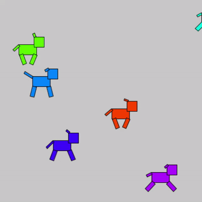
デバッグ
デバッグとは
- Debug
- プログラムの問題を診断すること
デバッガ
- Debugger
- デバッグを行うためのツール
プロセッシング デバッガ
- Processing Debuggar
- プロセッシングのPDE（アプリケーション）に標準で用意されているデバッガ
デバッガの有効と無効の切り替え

ブレークポイントで止まる
デバッガが有効にされている間は，プログラムの実行は必ずブレークポイントが設定されている行で一時停止する． デバッグを行う上で，この操作が基本で起点となる．
ブレークポイントの設定方法
ブレークポイントの設定はデバッガが有効にされている間にしか行えないことに注意．
設定方法は３つある
プログラムを一時停止したい行をクリックし，カーソルを移動させ
- デバッグ > ブレークポイントを切り替え
プログラムを一時停止したい行をクリックし，カーソルを移動させ
- Ctrl + B （キーワードショートカット）
プログラムを一時停止したい行の行番号をクリックする
ブレークポイントが設定された行は以下のように行番号の表示が変化する．

ブレークポイントの削除方法
ブレークポイントが設定されている行にて，ブレークポイントの設定と同様の操作を行うとブレークポイントを削除できる．
変数ウィンドウ
デバッガが有効な間にプログラムを実行すると，ブレークポイントが設定されているすべての行でプログラムが一時停止する．
一時停止中に「Variables」という別ウィンドウに現在の変数の値が表示される．
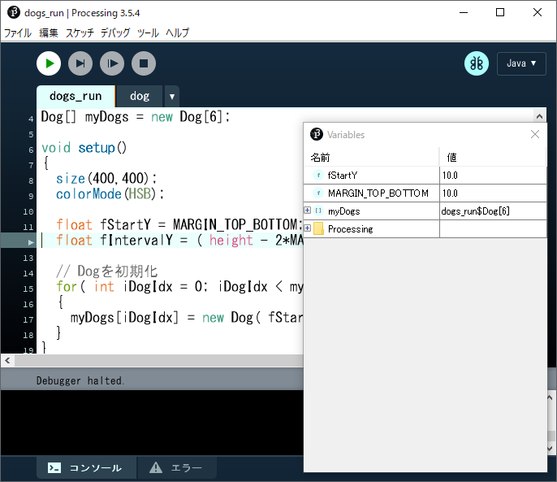
ステップ
一時停止中にステップアイコンをクリックすると，現在一時停止している行が実行され，次の行でプログラムが一時停止する． 一行ずつプログラムを進めることができる．
通常のステップ以外にも，ステップイン，ステップアウトという機能もある．

ステップイン
関数が含まれる行において，ステップインを行うと，関数の中にステップを行う． 通常のステップは，関数を含む行から次の行にプログラムの実行を進めるのみ． 関数内のプログラムの実行を詳細に観察したい場合に用いる．
ステップアウト
現在一時停止している位置が関数の中であれば，ステップアウトは関数の呼び出し元に処理を移す． ステップインで関数内にステップを進めた後に，関数の呼び出し元に処理を戻す場合などに用いる．

続行
一時停止中に続行アイコンをクリックすると，現在一時停止している行からプログラム実行が再開される． 次のブレークポイントまでプログラムは停止しない．

停止
一時停止中に停止アイコンをクリックすると，プログラムの実行を終了できる． デバッガの使用を終了し，デバッガを無効にしたい場合などに使用する．

ジャンクプログラム置き場
講師が作ってみたものの，難易度が高かったり，解説に不向きだったものを保管しています． ネタに困ったときなど参照してもらって構いませんが，コメントが少な目です．
二次元配列を使った，竹藪のような表現
xxxxxxxxxxint iSectionTotal = 40;int iRepeatTotal = 80;float fScaleMin = 0.2;float fScaleMax = 1.4;float fRotateMax = 360; size( 400, 400 );colorMode( HSB, 360, fScaleMax, 1 );background(0, 0, 0.4);stroke(0, 0, 0.2); float[][] fRectColor = new float[3][2];for( int iRectIdx=0; iRectIdx < fRectColor.length; iRectIdx++ ){ fRectColor[iRectIdx][0] = random(360); //色相 fRectColor[iRectIdx][1] = random( 0.6, 1.0); //明度 } for( int iRepeatIdx=0; iRepeatIdx < iRepeatTotal; iRepeatIdx++ ){ pushMatrix(); translate( width/2, height/2 ); rotate( radians( random( fRotateMax ) ) ); float fScale = fScaleMin + ( fScaleMax - fScaleMin ) * iRepeatIdx/iRepeatTotal; scale( fScale ); translate( random(-width,width/2), random(-height/2,height/2) ); for( int iSectionIdx=0; iSectionIdx < iSectionTotal; iSectionIdx++ ) { int iRectColorIdx = iSectionIdx%fRectColor.length; fill( fRectColor[iRectColorIdx][0], fScale, fRectColor[iRectColorIdx][1]); rect( 0, 0, 20, 10 ); translate( 20, 0 ); } popMatrix();}
二次元配列を使ったパッチの繰り返し
xxxxxxxxxxint iRectTotal = 100; // 矩形の数(１エリア内)int iRectSize = 100; // 矩形のサイズint iRowTotal = 2; // 繰り返しの行数int iColumnTotal = 6; // 繰り返しの列数 size( 600, 200 );colorMode(HSB,iRectTotal,1,1,1); float[][] fEllipsePos = new float[iRectTotal][2]; for( int iEllipseIdx=0; iEllipseIdx < fEllipsePos.length; iEllipseIdx++ ){ fEllipsePos[iEllipseIdx][0] = random(100-iRectSize); fEllipsePos[iEllipseIdx][1] = random(100-iRectSize);} noStroke(); for( int iRowIdx=0; iRowIdx < iRowTotal; iRowIdx++ ){ pushMatrix(); for( int iColumnIdx=0; iColumnIdx < iColumnTotal; iColumnIdx++ ) { for( int iEllipseIdx=0; iEllipseIdx < fEllipsePos.length; iEllipseIdx++ ) { fill(iEllipseIdx,1,1,0.5); rect( fEllipsePos[iEllipseIdx][0], fEllipsePos[iEllipseIdx][1], iRectSize, iRectSize ); } translate( 100, 0 ); } popMatrix(); translate( 0, 100 );}
ランダムな楕円のフェードアニメーション

1. 空のsetup()とdraw()を用意
できれば下の答えを見る前にやってみましょう．
xxxxxxxxxxvoid setup(){ }void draw(){ }2. setup()に以下の処理を追加
- スクリーンサイズ: 200×200
- カラーモード:
RGB, 1, 1, 1, 100 - 線(stroke)を表示しない
- フレームレート(fps): 8
できれば下の答えを見る前にやってみましょう．
xxxxxxxxxxvoid setup(){ size( 200, 200 ); colorMode( RGB, 1, 1, 1, 100 ); background( 1, 1, 1 ); noStroke(); frameRate(8); // fps}void draw(){ }3. draw()に以下の処理を追加
楕円を一つ描画
- X,Y座標：ランダム（最大X:スクリーン幅, 最大Y:スクリーン高さ）
- 直径：ランダム(最大100)
- 塗り色：RGB全てランダム(最大1)

できれば下の答えを見る前にやってみましょう．
xxxxxxxxxxvoid setup(){ size( 200, 200 ); colorMode( RGB, 1, 1, 1, 100 ); background( 1, 1, 1 ); noStroke(); frameRate(8); // fps} void draw(){ fill( random(1), random(1), random(1) ); ellipse( random(width), random(height), random(100), random(100) );}4. スクリーンのリフレッシュ処理を追加
- スクリーン全体と同じサイズの矩形を背景色で描画する．

できれば下の答えを見る前にやってみましょう．
xxxxxxxxxxvoid setup(){ size( 200, 200 ); colorMode( RGB, 1, 1, 1, 100 ); background( 1, 1, 1 ); noStroke(); frameRate(8); // fps} void draw(){ // スクリーンをリフレッシュ fill( 1, 1, 1 ); rect( 0,0,width,height ); fill( random(1), random(1), random(1) ); ellipse( random(width), random(height), random(100), random(100) );}5. スクリーンリフレッシュのアルファ値を50%に変更
- ステップ4で追加した矩形のアルファ値を50(%)に変更する．
できれば下の答えを見る前にやってみましょう．
xxxxxxxxxxvoid setup(){ size( 200, 200 ); colorMode( RGB, 1, 1, 1, 100 ); background( 1, 1, 1 ); noStroke(); frameRate(8); // fps} void draw(){ // スクリーンをリフレッシュ // アルファ値:50%で前フレームの描画結果に重ねる． fill( 1, 1, 1, 50 ); rect( 0,0,width,height ); fill( random(1), random(1), random(1) ); ellipse( random(width), random(height), random(100), random(100) );}
curveによる螺旋描画
xxxxxxxxxxint iNodeTotal = 200; // ノード(点)総数float fDegPerNode = 20.0; // 1ノード(点)につき回転する角度int iFPS = 20; int iFrameIdx; void setup(){ size(400, 400); colorMode(HSB, 1); frameRate(iFPS); iFrameIdx = 0;}void draw(){ fill(0, 0, 1); noStroke(); rect(0, 0, width, height); // スクリーンリフレッシュ translate(width/2, height/2); noFill(); strokeWeight(4); stroke(0,0,0); for ( int iNodeIdx=1; iNodeIdx<iNodeTotal; iNodeIdx++) { // 4つ分のノード(点)からカーブ生成 curve( getNodeX(iNodeIdx-1), getNodeY(iNodeIdx-1), getNodeX(iNodeIdx), getNodeY(iNodeIdx), getNodeX(iNodeIdx+1), getNodeY(iNodeIdx+1), getNodeX(iNodeIdx+2), getNodeY(iNodeIdx+2)); } fDegPerNode *= random(0.99,1.01); // 脈動}// ノード(点)の座標値を取得// 引数 iNodeIdx:ノード番号float getNodeX( int iNodeIdx ){ float fRadius = (width/1.5)*(iNodeIdx/float(iNodeTotal)); float fDegree = iNodeIdx*fDegPerNode; return fRadius*cos(radians(fDegree));}float getNodeY( int iNodeIdx ){ float fRadius = (width/1.5)*(iNodeIdx/float(iNodeTotal)); float fDegree = iNodeIdx*fDegPerNode; return fRadius*sin(radians(fDegree));}
円周上に花を描画する
xxxxxxxxxx/** 円周上に花を描画する*/ int iDegInterval = 40; int iGroupDistance = 100; void setup(){ size(400,400); colorMode(HSB, 8, 1, 1, 8); background(0,0,1); translate( width/2, height/2 ); // 9個花を描画. for( int iRotateDeg = 0; iRotateDeg < 360; iRotateDeg+=iDegInterval ) { pushMatrix();// 画面の中央の原点を保存 translate( iGroupDistance, 0 ); // 中心から原点移動 for( int iEllipseGroupIdx = 0; iEllipseGroupIdx < 4; iEllipseGroupIdx++ ) { // 現在の原点を中心に複数花弁を描画 drawPetals( floor(random(8,12)), random(8,20) ); } popMatrix();// 画面の中央の原点を復活 rotate( radians(iDegInterval) );// 画面の中央中心に回転 }} void draw(){}/** 現在の原点を中心に花弁を描画する 引数 iPetalsTotal: 描画する花弁の数 fDistance: 原点からの距離 返り値： なし*/void drawPetals( int iPetalsTotal, float fDistance ){ pushMatrix(); int iRotDegPerEllipse = 360 / iPetalsTotal; // 花弁を描画 fill( random(8), 1, 1, 4 ); for( int iEllipseIdx = 0; iEllipseIdx < iPetalsTotal; iEllipseIdx++ ) { ellipse( fDistance, 0, 20, 10 ); rotate( radians(iRotDegPerEllipse) ); } popMatrix();}
惑星クラスによる太陽系の描画
xxxxxxxxxxfinal float SCALE = 1 / 450.0; Planet planetMercury; // 水星Planet planetVenus; // 金星Planet planetEarth; // 地球Planet planetMars; // 火星Planet planetJupiter; // 木星Planet planetSaturn; // 土星Planet planetUranus; // 天王星Planet planetNeptune; // 海王星 void setup(){ size(1200,500); background(20,20,30);
planetMercury = new Planet( 4879, 0.01, 0, color(196,194,182), color(50,49,54) ); planetVenus = new Planet( 12104, 177, 0, color(173,111,74), color(215,169,118) ); planetEarth = new Planet( 12742, 23.4, 0, color(37,39,177), color(32,91,17) ); planetMars = new Planet( 6779, 25.2, 0, color(202,118,22), color(147,31,18) ); planetJupiter = new Planet( 139820, 3.12, 129000, color(201,172,130), color(162,112,41) ); planetSaturn = new Planet( 116460, 26.7, 120000,color(201,187,148), color(184,170,141) ); planetUranus = new Planet( 50724, 84, 39500, color(219,212,204), color(190,206,206) ); planetNeptune = new Planet( 49244, 165, 0, color(39,50,191), color(59,175,212) ); translate(width/40,height/10); planetMercury.display(); translate(0,40); planetVenus.display(); translate(0,40); planetEarth.display(); translate(0,40); planetMars.display(); translate(270,100); planetJupiter.display(); translate(430,0); planetSaturn.display(); translate(260,0); planetUranus.display(); translate(140,0); planetNeptune.display();}class Planet{ float m_fDiameter; // 直径 float m_fAxialTilt; // 赤道傾斜角 float m_fRingRadius; // リングの厚さ(0:無し) color m_colorMain; // 色 color m_colorSub; Planet( float fDiameterKm, float fAxialTilt, float fRingRadiusKm, color colorMain, color colorSub ) { m_fDiameter = fDiameterKm * SCALE; m_fAxialTilt = fAxialTilt; m_fRingRadius = fRingRadiusKm * SCALE; m_colorMain = colorMain; m_colorSub = colorSub; } void display() { noStroke(); // 緯度ごとにストライプ状に描画. float fLatitudeInterval = 600 / m_fDiameter; for( float fLatitude=0; fLatitude <= 180; fLatitude +=1 ) { if( floor(fLatitude)%2==0 ) { fill(m_colorSub); } else { fill(m_colorMain); } arc( 0, 0, m_fDiameter, m_fDiameter, HALF_PI + radians(fLatitude+m_fAxialTilt), TWO_PI+HALF_PI - radians(fLatitude-m_fAxialTilt), CHORD ); } // ランダムに円を乗算 for( int iDotIdx = 0; iDotIdx < floor(m_fDiameter*2.0); iDotIdx++ ) { float fPointSize = m_fDiameter/20.0; float fRadian = radians(random(360)); float fDistance = random(m_fDiameter/2.0)-fPointSize/2.5; strokeWeight(fPointSize); stroke(m_colorSub,40); point(fDistance*cos(fRadian),fDistance*sin(fRadian)); } // リングの描画 if( m_fRingRadius > 0 ) { stroke(m_colorMain,220); strokeWeight(4); line(-m_fRingRadius*cos(radians(m_fAxialTilt)),-m_fRingRadius*sin(radians(m_fAxialTilt)), m_fRingRadius*cos(radians(m_fAxialTilt)), m_fRingRadius*sin(radians(m_fAxialTilt))); } }}